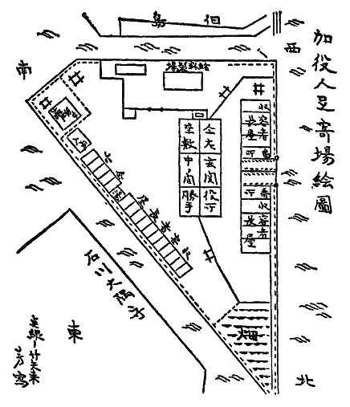

小雨が
栄二は追いつくとともに、さぶの前へ立ち
「よせったら、さぶ」と栄二が云った、「いいから帰ろう」
さぶは手の甲で眼を拭き、
「帰るんだ」と栄二が云った、「聞えねえのか」
「いやだ、おら
「あるきな」と云って栄二は左のほうへ
二人の少年は橋のたもとを左へ曲った。雨は同じような調子で、殆んど音もなくけぶっていた。
「おらほんとに知らなかったんだ」とさぶが云った、「ゆうべ粉袋を
「癖だよ、癖じゃねえか」
「粉が湿気をくっちゃった、へまばかりする小僧だって」さぶは立停って、手の甲で眼のまわりをこすりながら泣いた、「――おら、返してもらわなかった、そんな覚えはほんとにねえんだ、ほんとに知らなかったんだ」
「癖だってば、おかみさんはなんとも思っちゃあいねえよ」
「だめだ、おら、だめだ、ほんとにとんまで、ぐずで、――自分でも知ってた、とても続けられやしねえ、もうたくさんだ」さぶは
広い河岸通りの、右が武家屋敷、左が大川で、もう少しゆくと横網になる。
「奉公が辛いのはどこだっておんなしこった、おかみさんの口の悪いのは癖だし」と栄二はつかえつかえ云った、「それにおめえ、女なんてもともと、――車だ」
栄二がさぶの腕に触り、二人は立停って川のほうへよけた。からの荷車を
「腕に職を付けるのは
「葛西のうちなら」とさぶが云った、「出ていけなんて云われることだけはありゃあしねえ」
「ほんとにそうか」
さぶは返辞をしなかった。栄二も返辞を期待していなかった。さぶは葛西にある実家のことを考えてみた。腰の曲った
「おめえにゃあ田舎がある」いっしょにあるきながら栄二が云った、「どんなうちにしろ帰るところがあるからいい、だがおらあ親きょうだいも身寄りもねえ独りぼっちだ、今年の春、おらあ店を追ん出されるようなことをしちまった、追ん出されるか自分でおん出るか、どっちか一つという、とんでもねえことをしちまったんだ」
さぶはそろそろと振り向いて、栄二の顔を見た。好奇心からではなく、戸惑ったような眼つきであった。栄二はふきげんな、怒ってでもいるような口ぶりで、自分が去年から幾たびか帳場の
「わこく橋の
通りがかりにその匂いを嗅ぐと、
「おかみさんは小言は云わなかった」と栄二は泥でも
お由は二度だけしか見なかったのだろうか、それともすっかり知っていて、わざと知らないふうをよそおったのか、いずれにもせよ、栄二は死ぬほど恥じ、もう店にはいられないと思った。自分をぬすっとだなどとは考えもしなかったが、銭箱から銭をつかみだした自分の姿が、あさましくて恥ずかしくて、そのまま店にいる気になれなかったのだ。
「だが、店をとびだしてどこへゆく」と栄二は続けた、「おらあ八つの年、
「知らなかった、おら、ちっとも知らなかった」とさぶが呟いた、「――それで栄ちゃんは、がまんしたんだね」
「銭も二度とはぬすまなかった」
二人は横網の河岸まで来てい、さぶが立停って、地面をみつめ、濡れて重くなった草履の先で、地面を左右にこすった。
「おら、思うんだが」と彼は心のきまらない口ぶりで云った、「――小さいじぶんおふくろにぶたれたことがある、弟のやつがいたずらをして、それをおれがしたもんだと思ってぶった、おら、泣きながらおれのしたことじゃあねえって云って、それから、弟のしたことだとわかったとき、おふくろは平気な顔で云った、それじゃあおまえはこれまでに、ぶたれるようなことは一度もしなかったっていうのかい、ってさ」
「女なんてそんなもんだ」と栄二が云った、「
さぶは不決断にううと云った。
「ありがと」とさぶはよく聞きとれない声で云った、「ごめんよ、栄ちゃん」
「こんどは黙ってとび出さねえでくれよ」と栄二は云った、「これからはなんでもおれに相談してくれ、力になるからな」
さぶはゆっくりと
二人は引返した。そして両国橋まで戻ると、うしろから十二、三になる少女が追って来て、せいせいと
「この傘をさしなさいよ」と少女はから傘を二人のほうへ差出した、「姉さんのとこへ持ってゆくんだから、方角ちがいじゃだめだけれど、さあ、さしなさいよ」
栄二は少女を見た。自分でさしている傘は穴があいていた。着ているのも継ぎのあたった
「いらねえよ」と栄二が云った、「おれたちは小舟町へ帰るんだ、さっさといっちまいな」
「あら、ちょうどいいじゃない」と少女はうれしそうに笑った、「あたしは堀江町よ、堀江町のすみよしっていうお店に姉さんが勤めているの、だからあたし、あんたたちのうちまで送っていってもいいのよ」
「うるせえな」と栄二が云った、「傘なんかいらねえって云ってるじゃねえか」
「だって二人ともびしょ濡れじゃないの、ねえ、これをさしてらっしゃいよ」
「さぶ」と栄二が云った、「駆けようぜ」
二人は小雨の中を走りだした。
「ばかねえ」と少女がどなった、「いいから二人とも濡れてらっしゃい、いくじなし」
栄二とさぶとは、そのとき同じ十五歳であった。少女のことは二人ともすぐに忘れてしまった。
二人が二十歳になった年の二月十五日。生れて初めて、いっしょに外へ酒を飲みに出た。酒が初めてなのではない、それまでにも祝い日などに、店で酒の出るときは
芳古堂は
店のしきたりがそういうふうなので、職人たちの日常も規則ただしく、毎月十五日と一日のほかは、夜遊びに出ることも禁じられていたし、二十歳からは夜食に一本の酒が付くけれども、それ以上は一滴も飲ませなかった。念には及ばないだろうが、こういう生活をきちんと守る者ばかりはいない。仕事は夕方の五時限り、どんなに仕事が
栄二とさぶは心がときめいていた。
「はたちになったなんて、へんな心持だな」とさぶがまだるっこい調子で云った、「おら、思うんだが、十六で
「そうだな」と栄二が云った。
二人は
「おめえはいいな、栄ちゃん」とさぶが云った、「おめえはもう
「それも仕事だぜ」
「おら、思うんだが、水の中で袋を
「それも仕事だよ、さぶ」と栄二が云った、「表具や経師は糊の出来のよしあしが仕事の仕上りをきめるんだぜ、おめえわかっていねえのか」
「そりゃあそうだが」
「わかってたらぐちを云うなよ」と栄二は云った、「糊の仕込みで日本一になれば、それはそれで立派な職人なんだ、おめえ日本一の糊作りになれよ」
「そりゃあそうなんだが」
しかし芳古堂の職人となれば、表具とか屏風、屋敷襖なども覚えたい。そう云いたかったのだが、さぶは口には出せなかった。
「ちょっと」と栄二が云って立停った。
堀江町と新材木町のあいだに堀がある。その堀端に五、六軒、小料理屋がとびとびにあって、その端の一軒で「すみよし」と紺地に白く、仮名で染め抜いた半のれんを、軒先に掛けている女がいた。小柄な躯もほっそりしているし、
「なんだい、栄ちゃん」
「すみよし」と栄二は口の中で呟いた、「聞いたことがあるようだな」
「柳橋の料理屋だよ、すみよし、とくい先じゃあねえか」
「そうじゃあねえ、柳橋じゃあねえ、どこかよそで聞いたことがあるんだ」
のれんを掛け終った女は、
店へはいると、四十がらみの男が、灯を入れたはちけんを
「早かったかな」店へはいった栄二は、はちけんを吊りあげている男にきいた、「まだ始めないのかい」
「いらっしゃい」と男はいさましく答えた、「どうぞ」
そして奥のほうへ向って、お客だよと、大きな声でどなった。栄二はさぶの肩を押し、飯台の一つを選んで、その奥の端のほうへ腰を掛けた。すぐに女が二人、自分の髪へ手を触れながら出て来て、あいそを云いながら注文をきいた。さっきのれんを掛けていた女ではなく、一人は十八、九、一人は二十二、三で、どちらも小太りで、
「あたしあんたのこと知ってるわ」と
さぶは戸惑ったように栄二を見た。女の一人は注文をとおしにゆき、年嵩のその女は腰をかけた。
「そうじゃねえさ」とさぶが云い、慌てて云い直した、「いや、本当はそうだよ、今日は親方やおかみさんに許されて来たんだ、こっちは栄ちゃん、おらあさぶっていうんだが、二人とも今年でちょうど」
「よせよ」と栄二が云った、「よけいなことを
「あら、いいじゃないの」と女が云った、「さぶちゃんに栄ちゃんね、あたしおかめ――
さぶが笑いだし、栄二が
「おれたちは二人っきりで飲みてえんだ」と栄二が女に云った、「酌はいいから、二人っきりにしてくんねえか」
「そんなら奥になさいな」と女は気に障ったようすもなく云った、「もうすぐにここはたて混むから、ゆっくり話なんかできやしないわ、狭いけれども向うなら静かよ、そうなすったらどう」
「うん」と云って栄二がふところへ手を入れた、「おれたち、あんまり持ってねえんだ」
女は笑いながら、そんな心配はいらないと云い、二人を立たせて、奥へ案内した。のれんをくぐったところに、
「ここがいいわ」女は二人を端の四帖半にとおして云った、「いま
小座敷ながら
「こんなことして、大丈夫かな」さぶが心ぼそそうに
「うるせえな」栄二は胸のときめきを隠しながら云った、「向うは店の名を知ってるんだ、そうでなくったって、まさか首を取ろうとは云やあしねえだろう、そうわさわさするなよ」
やがておかめが、注文の
「めえめえでやろうぜ」と栄二が云った、「めんどくせえから盃のやりとりはなし、酒も手酌でやるとしよう、いいな」
「いいけれども」とさぶは膳をじっと見まもりながら云った、「なんだか少し、おっかねえような心持だ」
「なにがおっかないの」と云って、三人めの女が障子をあけ、顔だけ出してにこっと笑いかけた、「あらいやだ、河岸の親方かと思っちゃったわ、ごめんなさい」
表でのれんを掛けていた女であった。きりっと緊ったほそおもてで、笑ったとき唇のあいだから八重歯が覗いた。栄二はふいと、冷淡にそっぽを向いた。
「陰気じゃない」とその女は云った、「誰もいないの」
「いいんだ」と栄二がそっぽを向いたままで云った、「酌はいらないんだ」
「お
栄二が振り向いて「うるせえな」と云った。女はちょっと笑いかけたが、栄二の眼を見ると顔をひきしめ、ごめんなさい、と低い声で云って障子を閉めた。女が笑ったとき、また八重歯が覗き、それが栄二の眼に残った。
三月一日には栄二は休めなかった。日本橋本町の
綿文は
見本の紙の包みを持って、多市と二人、座敷へとおされると、十五、六になる中働きのおすえが茶と菓子を持って来た。――栄二は一昨年と去年はこの家へ来なかったが、三年まえまでは毎年来ていて、二人の娘たちとも親しかったし、おすえともよく知っていた。
「暫くね、栄さん」とおすえは多市に挨拶してから栄二を見た、「ずいぶん大きくなったじゃありませんか、あたし初めはちょっと見違えちゃったわ」
「よせよ」と云って多市が笑った、「可哀そうにこれでもはたちになったんだぜ」
「ごめんなさい」おすえは赤くなった、「あたし立派になったっていうつもりだったのに、つい口がすべっちゃったんです」
栄二も赤くなったが、おすえのほうへは眼も向けなかった。
「おすえちゃんは幾つになった」
「十六です」とおすえは多市に答えた、「躯が小さいから十二、三にしきゃみえないって、よくみんなにからかわれるんですよ、恥ずかしい」
廊下に人が立ち、こっちを覗きこんだ。この家の姉娘であるが、そこへまた一人、妹娘が通りかかって、姉のうしろから首だけ出して覗き、あら栄ちゃんだわと云った。姉はそこを動かなかったが、妹のおそのは座敷へとびこんで来、栄二の前にばたんと坐って、大きな眼でじっと彼をみつめた。おすえは会釈をして出てゆき、栄二が眼の隅でそのうしろ姿をちらっと見た。
「まあおどろいた、あんた栄ちゃんじゃないの」とおそのが顔を輝かせながら云った、「大きくなったわね、びっくりしちゃったわ」
多市が唇だけで笑った、「いまそれを云われたばかりなんですよ」
「栄ちゃん」とおそのは多市には構わず、栄二の眼をみつめたままで云った、「あたし誰だかわかって」
「おそのさんですよ」と栄二は答えた、「何年も会わなかったわけじゃない、たった二年ここへ来なかっただけじゃありませんか」
「あたしも大きくなったでしょ」
「こんちは」と栄二は廊下にいるおきみに呼びかけた、「暫くでした」
おきみはおっとりと頷いて、いらっしゃいと、ゆっくり云った。
そこへ主人の徳兵衛がはいって来、多市が紙見本をひろげた。徳兵衛は相変らず酒臭い息をしていた。
「ちょっと来てよ、栄ちゃん」とおそのが云った、「あんたに見せたいものがあるのよ」
「そのちゃん」と廊下でおきみが云った。
「ねえ、お父っさんいいでしょ」とおそのが父親に鼻声で云った、「栄ちゃんにちょっと見せたいものがあるのよ、あっちへ来てもらってもいいわね」
姉がまた「そのちゃんったら」とたしなめ、徳兵衛は無関心に手を振って、「うるさい、好きなようにしろ」と云った。栄二は救いを求めるように多市を見たが、多市は笑いもせずに、顎をしゃくって、ゆけよ、という表情をした。
「さあ、栄ちゃん」とおそのは彼の手を取った、「ねえ、早く」
あのころのままだな、と栄二は思った。兄弟子たちとここへ仕事に来ると、必ずこの姉妹につかまって遊び相手をさせられた。襖を張り替えるのは毎年十二月だから、かるたとか追い羽根とか、お手玉、おはじきなど、たあいのないものだし、女の子の遊び相手をするなど屈辱さえ感じたものだ。けれども大事なとくい先のことではあり、兄弟子たちがそうしろと云うので、断わるわけにはいかず、しぶしぶつきあっているうちに、どの遊びでも彼がいちばん上手になり、勝気なおそのはくやしがってよく泣いたものであった。
「あたし十六になったでしょ」とおそのが自分の箪笥の前に
そして
「ひろげてみてよ」とおそのが云った、「四季の千草って云う柄なの、京の田丸屋で染めさしたのよ」
「あたしのは裾模様よ」と姉のおきみが二人の脇から云った、「あたしのも見せてあげるわ」
「あとで」とおそのがきめつけた、「姉さんてばいつでもあたしのまねばかりするのね、邪魔しないでよ」
栄二は着物をひろげてみて、きれいだなと云った。これだけ大きな資産家の娘なら、京染めの友禅ぐらいなんでもないだろうのに、わざわざ人を呼んで見せるところに、この姉妹の気取らない、下町っ子らしい開放的な性質がよくあらわれていた。
妹に決めつけられた姉のおきみは、きげんを悪くするでもなく、そろそろと自分の箪笥をあけた。その裾模様というのを出すつもりであろう、けれどもおそのはそれより早く、こんどは帯を見せてあげる、と云いながら、下の抽出をあけたとたん、悲鳴をあげてとびあがり、両手で栄二に抱きついた。
「こわい」とおそのは栄二にしがみつきながら叫んだ、「鼠よ、鼠がいるのよ」
おきみも
「放さなくっちゃだめだ」と栄二が云った、「それじゃあ鼠が追えやしないよ」
「いや、こわい」とおそのはもっと腕に力をいれた、「あたし息が止りそうよ」
「鼠を追っぱらうんだから」栄二はようやく躯を自由にし、おそのを押しやった、「さあおきみさんもどいてください」
そして、その抽出の中を覗いてみたが、鼠のいるようすはなかった。手を入れて、重ねてある帯の片方をつぎつぎとあげ、底までさぐってみたけれども、鼠どころか虫一
「ほんとよ、嘘つかない」とおそのは栄二の眼を
栄二がなにか云おうとしたとき、廊下から名を呼ばれ、振り返るとおすえがいた。
「多市さんが呼んでいます」とおすえはこっちを見ずに云った、「尺取りをするから来て下さいって」
栄二はそれに頷いてから、おそのに向って帯のぎっしり詰っている抽出の中を指さしてみせた。そこにはどんな小さな鼠でもしゃがんでいる余地などはない、ということを示したのであろう。おそのはひょいと肩をすくめて云った。
「でもいたのよ、ほんと、こんなふうにしゃがんで、あたしのこと食いつこうと思って、こんなように歯を
おそのはそんなような恰好をしてみせたが、栄二はなにも云わずに出ていった。
用が済んだので、栄二は先に勝手口から出た。見本紙や尺取りの帳面を入れた包みを持って、格子戸を出るとおすえの姿が見えた。井戸のところに立っていて、待っていたようにこっちへ走って来、栄二の眼をみつめながら頬笑んだ。みつめる眼にはいっしょうけんめいな、思い詰めたような光があり、その頬笑みはまるで泣きべそでもかくように
「さっきのこと、堪忍して下さいね」
「なにをさ」と栄二がきき返した。
「大きくなったって云ったこと」とおすえは眼をそらさずに云った、「あたしほんとに、立派になったって云いたかったんです」
「いいよ、そんなこと」栄二は包みを持ち直しながら云った、「怒ってなんかいやしねえよ」
「ほんとね」と囁きかけながら、おすえは涙をこぼした、「よかったわ」
「なんだ、あんなこと、つまらねえ」
「あたし初めて栄さんに会ったとき十三だったけれど、栄さんのこと怒りっぽいこわい人だなって、思ったのを覚えてるわ」
栄二はなにか云いそうにして赤くなり、それから怒ったような口ぶりで云った、「――おれだっておめえのこと覚えてたよ」
おすえは「ありがと」と囁き声で云い、くるっと向き直って小走りに去った。栄二はそっちを見なかった。顔は赤くなったままで、深い呼吸をするために、胸が見えるほど波打っていた。
「栄二」と呼ぶ声がした、「ちょっと」
格子戸の中から多市が覗いていた。栄二は悪いことでもみつけられたように、どぎまぎしながらそっちへいった。
「先に帰ってくれ」と多市は云った、「旦那の酒のお相手だ、うんざりだがしようがねえ、親方にそう云っといてくれ」
上り端の六帖では、小僧がまだ麻袋を重たそうに板へ打ちつけていた。栄二は多市に頷いて、そこから去った。
「大きくなった、か」道をあるきながら、栄二はそっと呟いて微笑した、「てめえだって大きくなったくせに、――躯つきも顔もあのころとちっとも変っちゃいねえ、十三のときもいまのまんまだった」
女は十三になるともう、顔も躯も娘になってしまうのかな、おかしなもんだなと思って、栄二はまた微笑した。
小舟町へ帰ると、休みだから店は閉めてあり、栄二は横の木戸からはいった。すると、裏の狭い空地でさぶが糊の仕込みをしていた。裾を端折り、襷を掛け、五升
「さぶ、どうしたんだ」栄二は近よってゆきながら呼びかけた、「休みじゃあねえか、なにをしてるんだ、おまけにこんな裏なんかへ出たりしてさ、え」
さぶは答えもせず、振り向きもしなかった。栄二は彼の横顔が濡れているのを認めた。
「どうしたんだ」栄二は声を低めた、「なにかあったのか」
「なんでもねえ」さぶは首を振った、「なんでもねえんだよ」
「泣いてるじゃねえか」
「泣いてやしねえ」と云って、さぶは腕で眼のまわりをこすった、「
栄二はなお、さぶの横顔をみつめていたが、さぶは振り向こうとはしなかった。
「二人でどこかへいこうと思って、いそいで帰って来たんだが」と栄二が云った、「それを始めちゃったとするとだめだな」
揉み出しを始めれば、壺へ仕込むまで手は放せない。栄二はさぶと飲みにでも出て、おすえのことが話したかった。なにを話したいかは自分でもわからないが、とにかく話さないうちはおちつけないような気持であった。
「いいじゃないか、いってきなよ」さぶは白くなった手で袋を揉みながら云った、「おれのことは構わなくってもいいよ」
「ばか云え、一人でなんかいけるかい、おめえが仕事をするんならおれだってすらあ」と栄二は云った、「綿文で襖の尺を取って来たんだから、紙を
「おらあここがいいんだ」さぶは喉の詰ったような声で云った、「うっちゃっといてくれ」
そして急に、両手を桶の中へ突いて
「いったいどうしたんだ、さぶ」と栄二が跼みこんで云った、「おれにも話せねえのか」
「独りにしてくれ」と
「ほんとにそれでいいのか」
さぶは大きく頷いた。ずんぐりした躯を前跼みにした恰好や、まるっこい頭でこくっと頷いたようすは、いかにも愚直で子供っぽく、栄二は心の中で可哀そうなやつだな、と思った。
二人が堀江町の「すみよし」へいったのは二た月のちの四月十五日だった。
夕めしのあとででかけたから、店にはもう灯がはいり、客も五、六人来ていた。このまえに会ったおかめという女は、栄二とさぶを見たが忘れてしまったのだろう、いらっしゃいと云ったまま、客の相手をしていて動かなかった。栄二はちょっと迷った。客はみな中年者で、この店の馴染らしく、場ちがいの自分たちがどこへ腰掛けたらいいか、見当がつかなかったのである。すると、土間のつきあたりにあるのれんを分けて、これもこのまえ小座敷を覗いた若い女が出て来、栄二とさぶをみつけ、大きく眼をみはって、両手をぱしっと打ち合わせながら、とんで来た。
「いらっしゃい」とその女は云った、「あたしあんたたちを知ってたのよ、このまえの座敷がいいでしょ、どうぞ」
そう云って身を翻し、またのれんの向うへ去った。栄二はさぶに眼まぜをし、女のあとからついていった。女は例の小座敷にあがり、座蒲団を並べたり
「あんまりせかせかするなよ」と栄二は座敷へあがりながら云った、「眼まぐるしくってしようがねえじゃねえか」
「みんなにそう云われるのよ」と女は肩をすくめてみせた、「お酒とお肴、お肴はなんにしましょうか」
「めしを喰べて来たんだ、腹に溜らねえ物を二つか三つもらおう」
「あのときとそっくりね」女は栄二を見、それからさぶを見た、「一人ずつだとわからなかったかもしれないけれど、二人いっしょだからすぐにわかったわ、あ、そうじゃなかった、このまえのときあんたたちが帰ってからわかったのよ、あっ、あの人たちだなって」
「うるせえな」と栄二が眉をしかめた、「早く注文をとおして来いよ」
「その、うるせえなっていうの」と云って女は栄二の前へ自分の顔をさしだした、「――あたしのこと、覚えていない」
「似ているのは知ってるよ」
「似ているって、あたしじゃなく」
栄二はおそのに似ていると思い、鼠が食いつこうとおもっていた、という言葉を回想して笑いそうになった。女は、あらいやだ、薄情ねと云いながら、注文をとおしにいった。
「お肴はいますぐよ」と酒だけ持って戻って来た女は、膳を一つ、二人のあいだに置いて
栄二が盃を持ちながら、うるせえなと云うと、女はまた両手をぱしっと打ち合わせた。
「それよ、そのうるせえな、よ」と女はせきこんで云った、「両国橋のとこでさ、あんたあたしに云ったじゃない、うるせえなって」
「ああ」とさぶがまのびのした調子で、盃を持ったまま頷いた、「――傘だな」
「傘よ」と女が云った。
「五年まえだ」とさぶが云った、「そうだ、雨が降っていて、おまえさんは穴のあいた傘をさしていたっけ」
「ほんと、そのとおりよ」
「なんの話だ」と栄二がきいた。
「ほら、五年めえにおれが」と云いさしてさぶは口ごもった、「ほら、東両国から横網のほうまで、二人であるいてったことがあるじゃねえか、雨に濡れながらさ」
栄二はいま眠りからさめたような眼で、そこにいる女に振り向いた。
「ああそうか」と彼は云った、「あのとき傘をさしていけって、うるさく云った子がいたっけ、――それがおめえか」
「名まえはおのぶ」女は八重歯を見せてにっと笑い、おじぎをした、「どうぞよろしく」
「おれは栄二、こっちはさぶっていうんだ、あのときはちびだったんで思いだせなかったが、大きくなったな」栄二は自分だけの腹いせめいた気持でにやっとした、「――その八重歯には覚えがあるよ」
「あらいやだ、いじわるね」おのぶは片手で口を押えながら栄二をにらみ、またさぶに酌をした、「この八重歯は抜けるんですって、あたしいま十八でしょ、はたちになれば抜けるんですってよ」
「十八か、――それにしちゃあちびだな」
「きれえだよ」とさぶがとりなすような口ぶりで云った、「ほんとにきれえだ」
「お肴を持って来るわね」とおのぶが云った。
おのぶが去ると、さぶが栄二に酌をしようとした。栄二はそれを断わり、手酌でひと口
「まだ気になってしようがねえんだが」と栄二が脇を見ながら低い声で云った、「――先月の一日、いったいなにがあったんだ」
さぶはどきっとして、眩しそうに眼を伏せ、頭を垂れた。
「もう云ってもいいじゃあねえか」
「あのときは済まなかった」とさぶは口の中で呟いた、「栄ちゃんに心配させて済まなかったと思う、――それでおら、思うんだが」
「それはよせよ」栄二が
「うん」と頷いて、さぶは酒を啜ってから云った、「あの日、おみつちゃんが来たんだ」
おみつというのは芳古堂の娘で、としは今年十九歳、去年の春、日本橋
「帰って来るなりおれを見て、休みだからって遊んでいることはないだろうと云った」さぶは苦笑いをした、「――他人さまのめしを喰べながら手に職をつけてもらっているんだ、少しでも有難いと思ったら、店はたとえ休みにしろなにか仕事がある筈じゃないか、一粒の米だってただじゃないんだよって」
「その先は云うな」と栄二が制止した、「おみつちゃんの気性は知ってるじゃないか、きっとまた檜物町で喧嘩でもして来て、八つ当りをしたんだろう、気にするなよ」
「おめえならそれでいいだろうが、おれは生れつきのぐずだからな、いまだに糊の仕込みしかやれねえ人間だから、一粒の米もただじゃねえなんて云われると」
「ばか云うな、こっちはただめしなんか食っちゃあいねえぞ」と栄二は怒ったような口ぶりで云った、「手に職をつけてもらうのは慥かだが、遊んでるわけじゃあねえ、小せえじぶんから手足にひびあかぎれをきらし、汗だくになって追い使われてきたんだ、おれたち職人がいればこそ芳古堂もやってゆけるんだぜ、しっかりしてくれよ、さぶあにい」
おのぶが肴を持って来、酌をさせてくれと云って、座敷へあがり、襷を外しながら二人のあいだに坐った。
「いましがた思いだしたが」と栄二がおのぶを見て云った、「――あのときおめえは、ここに姉さんがいるって、云ってたんじゃなかったかな」
「そう、姉さんに傘を届けるところだったのよ」
「まだいるのか」
「死んじゃったわ」と云っておのぶはかぶりを振った、「姉さんのことはきかないでね、ほんとに可哀そうな死にかたをしたのよ、その話をするとあたし泣きだしちゃうから、はいお一つ」
「うちは
「ええ小泉町」おのぶは栄二に酌をし、さぶに酌をした、「うちの話もさせないでね、人には聞かせられないような、それこそみじめなくらしなんだもの、いっそのことうちをとびだして、
「よせよそんな話」と栄二が云った、「自分からきかないでくれって云ったんだろう」
「ほんとだ」おのぶは小さな肩をすくめた、「ごめんなさい、はいお酌」
「その八重歯、可愛いよ」さぶが酒を啜ってから、眩しそうな眼つきでおのぶの口許をみつめた、「その八重歯は抜かずにおくほうがいいと思うがな」
「抜くんじゃないの、自然と抜けるのよ」
「どうしてさ」
「あら知らないの」おのぶは眼をみはった、「八重歯っていうのはね、順番外れに生えたよけいな歯なんですって、だから自然と押しのけられて、いつか抜けてしまうんですってよ」
栄二が慌てて云った、「抜けなければ唇に穴があいちまうんだ、飲めよさぶ」
「あたしなにか悪いこと云ったかしら」とおのぶは栄二の顔を見た。
「いいんだ、そんなことありゃしないよ」とさぶは人の好い笑顔で云った、「栄ちゃんはおれが気にしやあしないかと思って心配しただけさ、おらあ慣れてるから、どんなこと云われたって気になんかしやしない、――もしも唇に穴があくんなら、八重歯は抜けるほうがいいにきまってるさ」
「なんだかさっぱりわからないわ、まるでいやみを云われてるような感じよ」
「済まねえな、話を変えよう」と云って栄二はおのぶに盃を差出した、「おめえも一つ飲まねえか」
「あたし強いのよ」
「いいとも、もう一つ盃を持って来な」
「いま持って来るわ」差された盃を返しておのぶは立ちあがった、「でも、まだ早いんだからあんまり飲まさないでね」
「こっちのふところが続かねえよ」と栄二はおのぶのうしろ姿に向って云った、「なにか自分の喰べるものもそういうんだぜ」
おのぶは土間へおりてから振り返り、栄二の顔をじっとみつめながら、「ありがと、いただきます」と云った。
五月に和助が芳古堂を出て、浅草の東仲町に「
栄二とさぶは、休みの日になると「すみよし」へかよった。どうやらさぶはおのぶが好きになったらしく、なんとか口実をつくっては手土産を買ってゆくが、自分ではそうする勇気がないのだろう、栄二に頼んで渡すのが例になっていた。――そろそろ寒くなりはじめた十月の十五日、二人はまた夕めしのあとで「すみよし」へ飲みにいった。その夜もまたおのぶのために、縫取りのある
「もういいだろう」と栄二はわざと冷淡に云った、「十七や十八の小僧じゃあねえ、これからは自分でやれよ」
「わかってるだろう」さぶはとり
「のぶ公は知ってるんだぜ」と栄二が云った、「おれが云ったんじゃあねえ、のぶ公が自分で勘づいたんだ、あんたはこんなことしてくれる人じゃないって、おれは面と向って云われちまった、いいつらの皮さ」
「いつのことだ」
「このまえのとき、おめえが手洗いに立ったあとでよ」
さぶは包みを脇に置いて、恥ずかしそうに低くうなだれた。まもなくおのぶが来、注文をとおしてから、先に酒だけ持って戻った。そしていつものように飲み始めたのだが、さぶはすっかりふさいでしまい、例になく盃は重ねるが酔うようすはなく、少しも気持がはずまないので、二人はまもなくすみよしを出た。
「なぜそれを渡さなかったんだ」暗い堀端を小舟町のほうへ歩きながら栄二が云った、「のぶ公はその包みを見ていたぜ」
さぶは堀の角で急に立停った。
「おら、酔っちまったらしい」さぶはちょっとよろよろしたが、そこへしゃがみこんでしまった、「――今夜は栄ちゃんに話があったんだよ」
「こんな堀っ端でどうするんだ、風邪をひいちまうぜ」
「和助あにいは店を持った」とさぶは口ごもりながら云った、「栄ちゃんもそのうちに店を持つだろう、けれどもおれはだめだ」
「そんな話は帰ってからにしろよ」
「おら、思うんだが」さぶの声はみじめに弱よわしかった、「どうせゆく先に望みがねえんなら、いっそいまのうちに、職を変えるほうがいいんじゃねえだろうか」
「ばかなことを云うな、おめえほど糊の仕込み上手な者はほかにいやあしねえ、親方がいつもそう云ってるのは自分でも聞いて知ってるじゃねえか」
さぶはちょっと黙っていてから云った、「――栄ちゃんはいつか、糊の仕込みで日本一になれば、それで立派な職人だと云ってくれた、そのとおりだろう、その場かぎりの慰めじゃあねえだろうが、糊作りだけじゃあ自分の店は持てやしねえ、よくいって一生涯、芳古堂の飼いごろしじゃあねえか」
「話ってなあそのことか」答えを捜すためのように栄二は問い返し、そして、答えが出てこないのだろう、独りで頷いてから静かに云った、「――にんげんは一寸さきのことだって、本当はどうなるか見当もつきあしねえ、まして五年さき十年さきのことなんか、神ほとけにだってわかりゃあしねえだろう、けれどもな、おめえがそう云うからおれの気持も聞いてもらうんだが、このまま順当にゆくとして、もしもおれが自分の店を持つようになったら、おめえといっしょに仕事をしようと考えているんだ」
さぶはゆっくりと栄二の顔を見あげ、栄二はさぶと並んでしゃがみこんだ。
「どんな店が持てるかわからねえが、二人でいっしょに住み、おめえの仕込んだ糊でおれが表具でも経師でも、立派な仕事をしてみせる、お互いにいつか女房をもらうだろう、そして子供もできるだろうが、それからも二人ははなれやしねえ」と栄二はひそめた声に感情をこめて云った、「――いつまでも二人でいっしょにやっていって、芳古堂に負けねえ江戸一番の店に仕上げるんだ、おれはこう考えているんだが、おめえはどう思う、おれとやるのはいやか」
さぶは考えてみてから首を振った、「だめだ、そう思ってくれるのは
「またそれだ、それがおめえのいちばん悪い癖だぜ、さぶ」と栄二が云った、「二人で店をやってゆくのに、どうしておめえが重荷になるんだ、おめえは誰にもひけをとらねえ立派な糊を作る、その糊でおれが仕事をする、おれたち二人の力を合わせてやるのに、重荷もへちまもねえじゃねえか」
さぶは
「よせったら」
「それでもおら、思うんだ」とさぶはねばりづよく云った、「おのぶのことだってそうだが、おれがいくじなしなために、栄ちゃんにとんでもねえ迷惑をかけちまった」
「おれが迷惑だなんて云ったか」
「おめえはなんにも云やあしねえ、いつだってなんにも云やあしねえ、けれどもそれだけよけいに、おら自分のいくじなしがやりきれなくなるんだ」と云ってさぶは暗がりの中でさぐるように栄二を見た、「――覚えているかい、栄ちゃん、十五のとしの冬だっけ、おれが店をとびだしたとき、おめえは雨に濡れながら追っかけて来た、横網河岸まで追っかけて来て、おれを伴れ戻してくれたことがあった」
「おめえだって雨に濡れてたぜ」
「おら、あのことは一生忘れねえが、伴れ戻される途中ずっと一つことを考えてた、おら、このままだときっと、栄ちゃんの厄介者になるだろうって、いつも栄ちゃんに面倒をかけて困らせるこったろうってな」
「おれも正直に云おう」と栄二が深く息を吸いこんで、大きく吐きだしてから云った、「――おめえはな、さぶ、おれにとっては厄介者どころか、いつも気持を支えてくれる大事な友達なんだ、正直に云うから怒らねえでくれよ、おめえはみんなからぐずと云われ、ぬけてるなどとも云われながら、辛抱づよく、黙って、石についた苔みてえに、しっかりと自分の仕事にとりついてきた、おらあその姿を見るたびに、心の中で自分に云いきかせたもんだ、――これが本当の職人根性ってもんだ、ってな」
「やい、いいかげんにしろ」と二人のうしろでどなる声がした、「なんの相談か知らねえが、こっちはいいかげん待ちくたびれたぜ、二人とも立ったらどうだ」
栄二とさぶが振り向いた。うしろに三人、暗がりでよくわからないが、やくざめいた男たちが立っていた。さぶは慌てて立ちあがろうとし、栄二がそれを抑えた。
「待てよ」と栄二はしゃがんだままで静かに云った、「いま大事な話をしているところなんだ、用があるならあとにしてくれ」
「そうはいかねえ」と次の男がひどく穏やかな声で云った、「こっちはもう待ちくたびれてしびれをきらしてるんだ、立ちな、若いの」
「栄ちゃん」とさぶが云った。
「構うなよ」と栄二が云った、「それよりもいま、おれの云ったことを」
男の一人が進み出て、さぶの着物の
「眼を突きやぶるぞ」と栄二は叫んだ、「そっちにいる二人もよく見ろ、じたばたするとこいつの眼を二つとも突きやぶるぞ」
栄二に組み伏せられた男は動かなくなった。下腹を
「おい、よせよあんちゃん、冗談だ」とその男は云った、「おれたちはただ、その、話をつけたかっただけなんだ」
「動くなよ」栄二は瞼の上へ当てた指に少しずつ力を入れながら云った、「動くとこの指をこのまま突込むぞ」
「とめてくれ、勝あにい」と栄二の下で男が悲鳴をあげた、「おれの眼が
「てめえたちなんの用だ」と栄二が云った、「はっきり云え、話をつけるたあなんのこった」
「おのぶのことだよ」と棒立ちになった男が、まだ右手を振りながら、
「おのぶがどうした」とさぶは立ちながら反問した。
「おらあおのぶの兄だ」とその男は云った、「おのぶには去年から、嫁にゆく約束の相手があるんだ、それだのにあにいたちが来るようになってから、急にあいつがいやだなんて云い始めたんだ」
このあいだに栄二は、すぐ向うに棒きれのあるのをみつけていた。男は話し続け、栄二はすばやく、組み伏せていた男を放してはね起きると、その棒きれを地面から拾って、右手に構えた。薪の荷からでも落ちたのだろう、太さ二寸あまり、長さ三尺ばかりの
「どうするんだ」話し続けていた男は、栄二のようすを見て、右手を前へ出しながら吃った、「おらもう乱暴はしねえよ、話を聞いてもらってるだけだ、わけを話してるだけじゃねえか」
「続けろよ」と栄二が云った、「断わっとくがな、へんなまねをすると一人は叩っ殺すぞ、こっちは堅気な職人だ、やくざに売られた喧嘩で一人や二人叩っ殺したって罪にゃあならねえ、さあ、三人ともそっちへいって並べ」
跼みこんでいたのと、組み伏せられた男とが立ちあがり、しぶしぶおのぶの兄と名のった男の脇へ寄っていった。
店へ帰って寝てからも、さぶはまだ胸がどきどきすると云っていた。そこは仕事場の隣りにある十帖で、栄二とさぶ以下、十七になる伝六、三月にはいった卯吉、定と、小僧たちを合わせた、五人の寝場所になっていた。多市、重七、五郎の三人には、それぞれ自分ひとりの四帖半を与えられているが、こっちの五人はなにもかもこみで、衣類や日用品、蒲団や持物なども、三
三人の小僧たちはもう眠ってい、伝六のやまいだといわれるいびきが、十帖いっぱいにそうぞうしい音をふりまいていた。
「あの三人はなに者だろうな」とさぶが云った、「おのぶの兄だって云ったあの男は、本当におのぶの兄さんなんだろうか」
「嘘っぱちさ、きまってらあ」
「だって、去年から嫁にゆく約束が」
「嘘っぱちさ」と栄二が遮って云った、「おれたちは月に二度ずつかよって、おめえはなにかかにか土産を持ってってる、そのうえ初めっからお互いにざっくばらんで、遠慮のねえ口をききあってたんだ、もしもそんな事情があるとすれば、のぶ公が話さずにいるわけはありゃあしねえよ」
さぶは考えてみてから云った、「――すると、あいつらはなんだろう」
「わからねえ」と栄二は枕の上で頭を左右に振った、「のぶ公を張ってる地廻りかなんかだろうと思うが、のぶ公にきいてみなくっちゃわからねえ」
「可哀そうだな」とさぶは囁くように云った、「そんなやつが付き
栄二は答えなかった。伝六のいびきがひと際高くなり、さぶも黙った。
「にんげんは一寸さきのこともわからねえ」と暫くして栄二が云った、「おれたちにゃあ金も力もねえし、職人としてもまだいちにんめえにはなっちゃいねえ、――さぶ、おめえの気持はよくわかるが、おれたちにいま大事なのは自分のことだ、ここ二、三年でおれたちの一生がきまるんだ、そう云っちゃあ
さぶは息をのみ、寝返って栄二を見た。
「忘れるって」とさぶがきいた、「栄ちゃんにも、誰かいるのか」
「話さなかったか」
「覚えがねえようだな」
「ずいぶんまえっからなんだ」栄二は夜具の中で胸を撫でた、「――本町の両替屋で、綿文ていうとくいのあるのを知ってるだろう」
「ああ、おれも一度いったことがある」
「あそこの中働きでおすえっていう娘がいる」と栄二は囁き声で云った、「色の黒い、ちっちゃな躯つきで、おれのことを大きくなったわね、って云やあがった」
「話の途中だが」とさぶが云った、「――綿文じゃあ栄ちゃんに、娘さんの一人を嫁にくれるってことになってるんじゃねえのか」
「ばか云え」栄二はそう云ってから、ふいとさぶのほうへ振り向いた、「――なんだって、おめえいまなんて云った」
「多市あにいが話してるのを聞いたんだ」さぶは気まずそうに口ごもった、「おらなんにも知らねえけど、綿文では娘の一人を栄ちゃんに」
「よせやい」栄二は枕の上で首を振った、「あんなおちゃっぴいをどうするもんか、それにこっちは半人めえの職人だし向うは大金持の娘だ、冗談じゃあねえ、そんな者を貰ったらそれこそ一生のお荷物だぜ」
「そんなら」とさぶは舌ったるい調子で、さぐるようにきいた、「その、――おすえちゃんていうのは、もう」
「そうじゃあねえ、そうじゃあねえんだ」栄二はさぶの言葉から身をよけるように云った、「向うはなんにも知っちゃあいねえ、おれの独り
さぶがやや暫くして呟いた、「――いろいろなことがあるんだなあ」
栄二はなにも云わなかった。伝六のいびきが低くなり、小僧の定がなにか寝言を云った。みんな眠ったのかと思われるころ、栄二の囁くような声が聞えた。
「生きていればな」そして彼は溜息をついた、「――生きているうちはな」
「おんとし二十と三にならせたまいて」とさぶは
栄二は襷を直し、糊皿で糊を延ばしながら、左手の甲で額をこすった。
「読むのはよせよ」と彼はさぶのほうを見ずに云った、「
「ちゃんと
「だから読むのはよせって云うんだ、いつまでも子供っぽいやつだな」栄二は殆んどうわのそらで云った、「せわをやかせるなよ」
さぶは反故紙をそっと下に置いた。
二人はいま二十三になって、初めて二人だけで、綿文へ襖の張替えに来ていた。客座敷二つの襖八枚。その日は五日めで、下張りにかかったところであった。朱の
中働きのおすえが来て、そっと覗き、お茶にしてもいいかときいた。さぶが栄二の顔を見、栄二が答えようとしたとき、綿文の妹娘のおそのが走って来て、おすえを押しのけるように座敷へはいり、栄二の脇へ坐った。
「あたしいまお稽古していたのよ」とおそのは栄二の膝へ手をかけながら云った、「――聞えたでしょ、栄ちゃん」
「ええ」と栄二はおすえに振り向いて云った、「お茶にしていただきましょうか」
おすえが「はい」と云い、おそのが栄二の膝を手でゆすりながら、自分のうたったのが聞えたかどうかと、答えをせがんだ。おすえは眼をそらして去り、栄二はおそのの手を静かに押しのけた。
「お稽古って、いまなにをやってるんです」
「あらいやだ、長唄じゃないの」おそのは栄二の膝を手で叩いた、「このまえ総ざらいに来てくれたんじゃなかったの、ねえ、さぶちゃん」
「ええ」さぶは頭のうしろへ手をやった、「矢の倉の
「栄ちゃんは来てくれなかったの」
「いきましたよ」と云って栄二は左手の指を一本ずつ、手拭で念入りに拭いた、「――おととしと同じ
「憎らしい、誰が飽きないのよ」
「師匠がね」
ぶつわよ、とおそのが大きな眼で睨み、栄二は立ちあがって、手を洗って来ます、と云いながら廊下へ出ていった。
「いまのは口だけですよ」さぶがとりなすように、吃りながら云った、「ええ、本当は感心していたんです」
「嘘、誰が感心なんかするもんですか、自分で自分にあいそがつきてるんだもの」と云っておそのは吃驚したように眼をみはった、「ほんとだ、栄ちゃんの云うとおりだわ」
そして笑いだし、ほんとにお師匠さんがよく飽きないものだわ、と云いながら胸を押え、身を跼めて笑った。さぶは自分がなにか失敗でもしたように、まるっこい顔を赤らめ、糊皿を脇へ動かしたり、反故紙を重ね直したりした。
「あーあ」とおそのは笑いやんで云った、「笑っちゃうわね」
おすえが茶と菓子を持って来、すぐあとから栄二が戻って来た。おすえは茶を
「あの人いまお嫁の話があるのよ」と云いながらおそのは菓子を一つ取り、さぶに向って片手を振った、「あたしにもお茶をちょうだい、いいわよ、その茶碗で」
さぶはいまおすえの淹れていった茶の一つを、盆にのせてすすめ、栄二はさりげない表情で、あの人って誰です、と問い返した。
「おすえよ、きまってるじゃないの」おそのは菓子を
「自分はどうなんです、おないどしならおそのさんだってもう」
「だめ、だめなのよあたしたち」おそのは栄二の言葉を遮って云った、「あたしも姉さんも縁遠い生れつきなんですって、姉さんなんか二十一にもなるのに、これっていう縁談がまだ一つもないの、お菓子つまみなさいよ」
さぶが慌てて菓子を取り、栄二は茶を啜った。
「縁遠い生れつきか」と栄二が云った、「
「だってほんとなんですもの」おそのは細い肩を左右にゆすり、眼尻で栄二をみつめながら云った、「――栄ちゃんあたしのことお嫁に貰ってくれないかしら」
下張りが終った明くる日は十五日の休みであったが、十二月のことで、仕事は続ける筈になっていた。にもかかわらず、朝めしを済ませてでかける支度をしていると、親方の芳兵衛が来て栄二を呼び、綿文へは五郎をやるから、おまえはゆかなくてもいいと云った。
「なぜですか」栄二は戸惑ったようにきいた、「私じゃあいけないんですか」
「五郎にさぶをつけてやる、おまえは少し休んでくれ」
「休むんですって」
「仕事はみんな手順がついてるから、差当りおまえにやってもらうこともないようだ」と芳兵衛は冷たい口ぶりで云った、「――もう日もないこった、仕事は来年のことにして、暮いっぱい休むがいいだろう」
「なにかわけがあるんですか、私がなにかしくじりでもしたんですか」
芳兵衛は眼をそむけた、「おれの云わないことはきくな、さぶ、五郎についてゆけ」
さぶは黙って
「どうしたんだろう」とさぶが声をひそめて囁いた、「昨日までなんていうこともなかったのにな」
栄二はぼんやりした顔で、いいからゆけよと云い、持っていた自分の道具袋を、戸納の中へしまい戻して、仕事着をふだん着に着替えた。――芳古堂では仕事の割当てがきまっているから、受持ちを外されると
彼は小僧の卯吉に断わって外へ出た。芳兵衛はおれの云わないことはきくなと云った。つまり理由は云えないということだろうが、仕事の途中で職人を替えるなどという例は、よほどの理由がなければないことで、その理由が云えないというのはどういうわけだろうかと思い、もちろん見当もつかないので、目的もなく街をあるいてゆくうちに、彼はすっかり頭が混乱してしまい、いっそ酒でも飲んでやろうかと、やけな気持にさえなった。
「なぜこれこれだと云ってくれないんだ」栄二は
朝のことだから、酒を飲ませる店などはみつからなかった。両国
「栄二さんじゃないの、いまじぶんどうしたの」
栄二はふいにおどかされでもしたように、脇へ身をそらして相手を見た。そして、堀江町の「すみよし」のおのぶだと気づくと、知らない土地で古い馴染にでも出会ったような、うれしさとなつかしさとで胸があたたまるのを感じた。
「おめえこそ」と彼は例になくあいそのいい口ぶりで云った、「こんな朝っぱらからなにをしているんだ」
「お店へいくところよ、三日まえからうちに帰っていたの、栄さんはどこへ」
「当てなしさ」栄二はおのぶといっしょに、戻ってあるきだしながら云った、「――どっかで酒を飲みてえんだが」
「よかったらお店へいらっしゃいよ、親方もおかみさんも栄さんならいけないとは云わないでしょ、あたしがなんとかしてあげるわ」
「知ってるうちはちょっと気まずいな」
「なにが気まずいもんですか、こんなことはそう珍しくはないのよ」
その代りに肴の
すみよしへ着いて裏からはいり、栄二はいつもの小座敷へとおされた。昨夜の客のあとがざっと片づけてあるだけで、隅のほうには紙屑や
「よせばよかったな」寒さに身ぶるいをしながら栄二は
「そうだ、そのほうが本当だった」と彼はまた自分に云った、「いったい自分がなにをしたのか、それをはっきりさせるのが先だ、やけ酒なんか飲んだって、なんのたしにもなりゃあしねえぜ」
おのぶがそこへ、残りの火だねと炭を、
膳の上には摘まみ物の小皿が三つ四つに、燗徳利が三本並んだ。栄二の顔はすでに赤く、おのぶも眼のまわりが染まっていた。
「嘘よう、なにかわけがありそうよ」おのぶは
「ばか云え」栄二は眩しそうにまばたきをした、「ただ酒が飲みたかっただけだ」
「あの顔がね、さぞそうでしょうよ」
おのぶは酒を啜って、それから栄二に酌をした。
「おめえこそ」と彼は盃の中の酒をみつめながら云った、「――三日もうちへ帰っていたなんて、なにか変ったことでもあったのか」
「その話はよしましょう」と云っておのぶは栄二の眼つきに気づいた、「なにかはいってますか」
栄二は盃の酒を
「いつかここの帰りに」と栄二が云った、「三人のやくざみてえなやつにからまれたことがあったっけ」
「三年まえのことね」とおのぶは指を折ってから云った、「あのときはごめんなさい、あたしの兄だって云ったのは、
「このまえはそうは云わなかったぜ」
三人のやくざと
「云わなかったわ、だって云おうったって云えることじゃないんですもの」
「いまなら話せるのか」
「栄さん今日はどうしたの」とおのぶは栄二の顔をさぐるように見た、「――いつもはあたしのことなんか
「そんなふうに聞えたら勘弁してくれ、そんなつもりで云ったんじゃあねえんだ」
「いや、あやまったりしないで、――たとえ嘘でもいい、栄さんがちょっとでも気にかけて下されば、あたしなによりうれしいのよ」
そして急に、おのぶは
「酒を頼むぜ」と彼は乱暴に云った、「もうここはすっかりだ」
おのぶは黙ったまま立ち、顔をそむけて土間へおりた。まもなく、燗徳利を二本持って戻ったとき、おのぶの顔は洗ったようにさっぱりとし、あいそのいい微笑をうかべた
「ごめんなさい」おのぶは徳利を膳の上へ置き、あいている徳利を盆のほうへ移して、坐りながら云った、「あたしこのごろ、少し酔うと泣き
「としだって、幾つになるんだ」
「もうおばあさん、二十一よ」
「それでばあさんか、いい気なもんだな」そう云いながら手酌で一つ飲み、おのぶにも酌をしてやって、栄二は静かに口ぶりを変えた、「――いちど云っておこうと思ったんだが、さぶのやつがおめえを好きだってこと、知ってるだろうな」
「ええ知ってます」おのぶはまじめに頷いてから、感情のない笑いかたをした、「誰かが誰かを好き、こっちの誰かはほかの誰かが好き、――まるで
「冗談にしないで聞けよ」
「冗談にしなければ
「いいやつなんだがな、まじめに、本気でおのぶに
「それにね、栄さん」おのぶは眼を伏せ、声を低くした、「あたしにはたいへんな親きょうだいがあって、人のお嫁にはなれない躯なのよ」
「いつか家出をしたい、なんて云ってたっけな」
「親が
「姉さんはなんで死んだんだ」
おのぶはちょっと黙ってから、やはり眼を伏せたなりで云った、「心中なんです」
「しん――なんだって」
「好きな人と心中したんです。好きな人があるのに身を売られようとして」とおのぶはかぶりを振りながら云った、「――姉さんはあたしのように気が強くないし、その人も
栄二は「飲めよ」と云っておのぶに酌をしてやり、おのぶは
栄二は「すみよし」を出ると、浅草にある和助の店へ向った。和助は芳古堂の職人がしらをしていたが、三年まえの五月に、東仲町へ香和堂という店をもち、
「ひでえ親があるもんだな」あるきながら彼は呟いた、「話には聞いたこともあるが、本当にそんな親があるのかな」
姉が死んだあと、次にはおのぶに身売りをしろとせがんだという。貧乏なことはひどい貧乏だが、娘を売る必要はない。みんなで少しずつでも働く気になれば、その日の食に困るようなことはないのだ。けれども両親からして働く気などはなく、楽をしてうまい物を喰べていたい、というふうだから、すぐに手早く纏まった金を握りたがるのであった。――おのぶは一分もゆずらずに拒みとおした。小さい弟や妹がまだ五人もいる、握った金はすぐに消えてしまうだろうし、五人の弟や妹の面倒を誰がみるか、あたしは五人のゆくすえを守るために、死んでも身売りなんかしないと云い張り、ついに親たちのほうで引込んだ。ところが妹のおしのが十七になるのを待ちかねていたように、こんどはおしのに眼をつけて同じことをくどき始めた。四、五日まえ、おしのが泣いて訴えに来たので、泊りがけで談判しにゆき、三日がかりで親たちを説き伏せたそうであった。
――もししのちゃんにおかしなことをしたら、あたしお父っさんかおっ母さんを殺すわよ、ってそう云ってやったわ。
自分たちの境涯では、他人より親のほうが恐ろしい場合が
「女の身でそこまで考えなければならないんだ、そういう境遇が現にこの世にあるんだ」と栄二は自分を叱りつけるように呟いた、「――きさまなんかまだあまっちょろいもんだぞ」
東仲町へゆき着くまで、彼は同じことを繰返し考え続け、幾たびも眉をしかめては舌打ちをした。香和堂は三
「いらっしゃい」店にいた半次が、栄二を見て明るく笑った、「さっき小舟町から使いがありましたよ」
「親方はいるか」ときいてから、栄二は眼をそばめた、「――小舟町からなんだって」
「手紙を持って定が来ました、親方はいま朝めしです、ゆうべは夜明し仕事だったもんですからね」そう云いかけて半次は顔をしかめた、「――あにい、いけねえな、ぷんぷん匂いますぜ」
栄二は口へ手を当てた。和助は自分が一滴も飲まないばかりでなく、酒そのものを病的に嫌っている。いまは暮の十五日、もうひるに近いころだが、酒の匂いに気づかれたら、相談どころか叱りとばされるのがおちだろう、そう気づいたので、栄二は赤くなった。
「そうだな、つい忘れていた」と云って彼はそっと手を振った、「ちょっと話があって来たんだが、そんなに匂うとすると」
「ええ」と半次はおとなびたようすで首を振った、「いけませんね」
「出直して来よう」と栄二が云った、「黙っててくれ」
そして外へ出ようとすると、向うの障子があいて、和助が
「まああがれよ」と和助が云った、「狭いうちだからしようがねえ、酒のことは聞いた」
栄二は頭を
「今日は酒の小言はよしにする」と和助は続けた、「それより話してえことがあるんだ、まああがってくれ」
栄二があがると、和助は右の六帖へ案内した。そして隣りの部屋へ、茶を持って来いと呼びかけ、二人で差向いに坐った。そっちの部屋が茶の間で、妻女の答える声と、まだ誰か食事をしているのであろう、茶碗や箸の音が聞えて来た。
「さっき小舟町から使いがあってな」和助はまだ爪楊枝を使い、高い音をさせて歯を吸いながら云った、「おめえは当分ここで手伝ってもらうことになったんだ、荷物もあとで届けて来るそうだから」
「ちょっと」と栄二は遮った、「ちょっと待って下さい、私にはわけがわからないんだが、このお店で手伝うってえのは、どういうことなんですか」
「おれから小舟町へ頼んでおいたんだ」
栄二は首を振った。彼の顔は白くなり、眼がきらきらと光った、「――嘘だ、それは本当じゃあない、あにいはなにか隠してる」
妻女が茶を持って来、栄二に挨拶をしてすすめた。栄二はぶっきらぼうにじぎをしたまま、眼は和助の表情をとらえてはなさなかった。妻女が去ると、和助は、自分用の大きな湯呑を取り、茶を啜りながら反問した。
「おれがなにを隠してるんだ」
「本町の綿文さんです」と栄二が云った、「小舟町からの手紙にはそのことが書いてあったんでしょう、そうでしょう」
和助は静かに茶を啜った。
和助は顔をそむけたままで云った、「それをおれに話させるな」
「あっしは二十三です、そしてこんどの綿文さんは初めての出仕事なんだ」と栄二は云った、「小僧のじぶんからあにいたちの供でいって、お
彼は口ごもった。云いたいことは幾らでもある、それらは
「昨日まではなんのこともなかった、仕事も自分ではうまくいってたと思います」栄二は低い声に力をこめて続けた、「――あにいも知っているあの、客座敷二つの襖の張替えですから、それほどむずかしいものでもなし、特にわざのいる仕事もありません、それでも初めての出仕事だから念に念を入れてやったんです、ところが今朝になって急に、もうおめえはいかなくともいい、って親方から仕事を外されちまいました」
「まあ茶でも飲めよ」と和助が云った。
「あっしは向う面をはたかれたような気持だった」と栄二は構わずに続けた、「それはどういうわけか、どんなしくじりがあったのかって、あっしは親方にいっしょけんめいにきいた、親方は答えちゃあくれなかった、いいから今年いっぱい休めって、おれの云わねえことはきくなって、それっきりなんです」
「茶でも飲んで少し気をしずめろ」と和助が静かに云った、「もう冷えちまったがひとくち飲めよ」
栄二は茶をひとくち啜った。それで喉が熱く、渇いていることに気づき、あとはひと息に飲みほした。
「おめえは本町のお店ではにんき者だった」と和助は云った、「ことに二人の娘さんは栄二びいきで、小さいじぶんには
「だってそのとおりじゃあねえだろうか」
「人間の気持なんてものはいつも同じじゃあねえ、殴られても笑っていられるときがあるし、ちょっとからかわれただけで相手を殺したくなるようなこともある」と和助は云った、「本町のお店にとって、おめえはしょせん出入りの職人だ、まして向うは大金持、なにか事があればいくらひいきにした人間でも、遠慮や会釈はしねえだろう」
「なにか事があればって」と云って栄二は唇を舐めた、「――そんなような事がなにかあったんですか」
「自分で思い当らねえか」
「じゃあ、ほんとになにかあったんですね」
和助は栄二の眼をみつめた。栄二はさらに問い返そうとしたが、和助はそれを遮って、それなら云ってしまおう、と云った。
「おめえは本町のお店の
「よく知ってるかどうかわからねえが」栄二は考えてみた、「おきみさんやおそのさんと遊んでいたから、迷うようなことはねえと思います」
「旦那の居間を知ってるか」
「客間からひと間おいた隣りでしょう」
「そこに物入れの
和助はそこで栄二の顔を見まもった。しかし栄二の表情には
「たいそう高価な品なので捜しにかかった」と和助は続けた、「――旦那とおかみさんと二人きりで、ほかの者には知れないように捜した、そうして、まあつづめて云えば、客間にあったおめえとさぶの道具袋を、念のためにしらべてみたところ、それがおめえの袋の中から出てきたんだ」
栄二は笑った、「冗談じゃあねえ、からかっちゃあいけねえよ、あにい」
「出てきたんだ」と和助は云った、「みつけたのは旦那。袋はおめえのものだったそうだ、まさか綿文の旦那ともある人が、そんな嘘をつく筈はねえだろう」
栄二は黙った。いま笑った口をひきしめ、和助の顔をさぐるようにみつめて、深く、大きく息を吸い、その息を少しずつゆっくりと吐きだした。
「すると、あっしがその切をぬすんで、袋の中へ入れといたっていうんですか」
「小舟町の親方がゆうべ呼ばれて、これだけの話を聞いた、そして、よそへは決してもらさないが、出入りは止めると云われた」
栄二はなにか云いかけたが、和助は手をあげてそれを制止し、まあ聞けといって続けた、「――親方は小舟町へ帰って考え、おかみさんに相談した、おめえがそんなことをしようとは信じられねえ、なにかの間違いだろうと話しあっているうちに、七年か八年まえのことがでてきた」
「七年か八年まえのことって」
「思いだしてみろ」と和助が声を低くして云った、「――おれもすっかり忘れていたが、親方の手紙を読んで思いだしたぜ」
栄二は
「帳場の」と栄二は舌が鉛にでもなったような、まどろっこしい口ぶりで云った、「――銭箱ですか」
和助はなにも云わずに、じっと栄二をみつめていた。ごまかしてもだめだぞ、という気持と、いったい事実はどうなんだ、という問いかけの気持との入り混じったまなざしであった。栄二の頬へ血がのぼり、それが見ているうちに白くなると、頬のあたりがひきつり、唇がふるえた。
「あのときのあれが」と彼は吃り、唇を舐めて云った、「いまになって、ほじくり返されるんですか」
和助はなにも云わなかった。
「
「おかみさんがみつけたのはあとのことだ」と云って和助はまた栄二をみつめた、「――おめえ、おれがあのころ、帳場をやってたことを覚えてるか」
栄二は考えてみて首を振った。
「おれが帳場を預かってたんだ、おめえが銭箱からくすねることを、初めにみつけたのはおれだ」と和助は云った、「すぐに自分で叱ればよかったかもしれねえ、が、おれにゃあそれができなかった、ないしょで親方に相談してみたら、おれのほうが親方から叱りとばされた」
栄二の眼が動かなくなり、和助は告白するような口ぶりで続けた。
「人も見ていず、手の届くところに金があれば、誰しもひょいと手の出るもんだ、それが人間てえもんだ、ぬすむやつよりも、ぬすむ隙を与えるやつのほうが悪い、栄二よりもおめえのほうが手落ちだ、――と親方は云った、おれは一言もなかった、親方の云うとおり、そんな隙を与えたおれのほうが悪かった、そう思ったからおめえにはなんにも云わなかったし、親方とおかみさんのほか、今日まで誰一人知っている者はなかったんだ」
「すると、いや」栄二は首を振り、動かない眼で一点を凝視したまま反問した、「つまり、そうするとこんどの金襴のことも、銭箱のときと同じ伝だという、つまりそういうことなんですね」
「おめえはあの家の間取も知ってるし、一つおいた隣りの客座敷で仕事をしていた、――二人の娘さんや、店の人たちの中に、もしおめえに恨みのある者でもいればべつだが、そういう者が一人でもいるとは思えねえ、それだけは保証すると旦那は
栄二は首を振り、それから首が折れたようにうなだれた。
「おらあおめえのしたことたあ思えねえ」と和助は云った、「けれども条件があんまり揃いすぎていて、いますぐにはどうしようもねえと思う、おめえじゃあねえという、証拠もねえんだからな」
「おまけに銭箱のこともあるしですか」
「やけな口をきくもんじゃねえ」きびしい調子で云ってから、和助は声をやわらげた、「にんげん生きているうちは、知らねえまに世間へ借りや貸しのできるもんだ、おめえもいま世間に貸しを一つ作ったというつもりで、ここはなんにも云わず、暫くうちの仕事を手伝っていてくれ」
栄二はぼんやりと呟いた、「――世間よりも親のほうが恐ろしいって」
和助は
「あにい」と栄二は眼をあげて云った、「あっしの荷物がここへ届くって云いましたね」
「今日のうちには届くだろう」
「済まねえが、金を少し貸しておくんなさい、小舟町には二十両とちょっと預けてあるんです、いや」栄二は和助に反対する隙を与えずに云った、「なんにも云わねえで、いまはなにも云わねえで貸しておくんなさい、頼みます、お願いします」
そして彼は両手を突き、頭を垂れた。
おまえさんうぶだねえ、という女の声が耳の中でする。なまあたたかく吸いつくような肌ざわりが、自分の胸や
男なら男らしくしなさいよ、どうしたのおまえさん、病気なのかえ。そうだ、病気だから側へ寄るな。ふん、
あんたいい男だわねえ、あたしおか惚れしちゃったわ、ねえ、こっち向いてえ。よせったら、おらあねむりてえんだ。あらいやだ、ここは宿屋じゃないのよ、ねえ、そんなに薄情にしないでさあ、いいでしょ、あたしてどりなのよ。うるせえな、おらあぬすっとだぞ、放してくれ。火のようにという、本当に火のように熱い唇が、耳を吸い頬を吸い、――ああ、と栄二は呻き声をあげ、激しく首を左右に振った。
まっ暗な道で、どこだか見当もつかなかった。右手に堀か川があるのだろう、ときどき岸を洗う波の音が聞え、さして強くはないが風が吹いていた。
「
空には雲があり、雲のあいだに星がまたたいていた。その星のあるかなきかの明りで、道の左側に材木の積んであるのをみつけ、栄二はそっちへいって、用心ぶかく腰を掛けた。その材木は少し不安定だったが、栄二は足で平均をとって腰をおちつけ、溜息をついた。
「なにがどうなってるのか、なにもかもてんでわからねえ」彼は
そうしてとつぜん彼は泣きだした。顎を支えたままで頭をゆらゆらと振り、すると、涙が両の眼からこぼれ落ちた。
「さぶじゃあねえ」と彼は嗚咽しながら独り言を云った、「さぶとはきょうだい同様にくらしてきたし、あんなことをするような理由がねえもの、あいつはおれを頼りにしていた、おれがいなくなれば途方にくれるだろう、――どうしたってあのうちの者のしたことだ」
なにめそめそしてんのさ、という女の声が耳の奥で聞えた。どうせ世の中は欲と金、ぱあっとやっちゃおうよ、ぱあっとさ、えらそうに構えてたって死ぬときゃあ乞食や
「あたいを女房にしてくんない、へっ」栄二は濡れた眼のまわりと頬を手で押しぬぐいながら、また唾を吐いた、「――みんなおんなじようなことを云うぜ、あたしのことお嫁に貰ってくれないって、誰かもそう云ってたっけ」
栄二の躯が急に
あんまり乱暴にしないでね、とまたべつの女の声が聞えた。あたしまだ出たばかりなの、なんにも知らないのよ、やさしくしてね、やさしくして教えてちょうだい。あらへんね、とその女の声が続いた。どうしたの、そんなに大事がられるときびが悪いわ、もっと好きなようにしてよ。親きょうだい、ふん、だわ。誰のためでもないみんな自分がしたいからするのよ、好きでなきゃあこんなしょうばいするもんですか、親きょうだいのためだなんて、みんなよく云うけれど嘘っぱちよ、ねえ、こっちへ寄ってよ。そしてまたあの肌ざわり、
「あたしのことお嫁に貰ってよ」と彼はあるきながら呟いた、「――誰だっけかな、あたしのことお嫁に貰って、くれないかしら」
栄二は立停って、上わ眼づかいに
「おその」と彼は呟いた、「――相手は本町きっての
そうじゃあねえか、それで出入りを止めるために、あんな
「慥かめるんだ」彼はぎゅっと拳を握った、「そのほかに道はねえ、ぬすっとにされたまんまで生きちゃあいかれねえ、生きていかれるもんか、おらあきっと慥かめてみせるぞ」
「旦那に会わしてくれ」と栄二は綿文の店先へ腰を掛けて云った、「芳古堂の栄二ってもんだ、うかがいてえことがあって来たって、取次いでくれ」
まだ朝のことで、店をあけたばかりだし、客は一人もなく、小僧が三人で掃除をしていた。栄二は五日も飲み続け、いまも相当に酔っていたから、帳場格子の中にいるのを小僧ではなく、手代か番頭だと信じているようであった。
「栄さんはわかってますよ」と小僧の一人が云った、「なんべん云ったらいいのかな、旦那はまだ寝てらっしゃるんですったら」
「なんだ小僧、てめえなんぞの出る幕じゃあねえぞ」栄二はおくびをし、そのおくびの酒臭いのに自分で顔をしかめた、「――てめえなんぞはな、銭の入った麻袋を、ばかみてえに一日じゅう板へ叩きつけてりゃあいいんだ、おらあ旦那に会うんだから、綿文の主人に会うんだ、徳兵衛に出て来いと云ってくれ」
そして彼はそこへ横倒しになった。
ばかなまねをするなよ、穏やかにやるんだ。どなったり、相手をへこますような口をきいちゃあいけない。したでに出るんだ、金持は痛いはらをさぐられるのを嫌うからな、そらを使って相手にゆだんをさせるんだ。嘘とまことは眼にあらわれる、口はごまかせても眼はごまかせねえ、肝心なのは眼だ、と栄二は自分に云った。
あら、また来たのあんた、という女の声が聞えた。いやだわ、あんた陰気なんだもの、まるでいまにも首をくくる人みたい、ねえ、陽気にやろうよ、ぱあっとさ、いいでしょ。酔っぱらってるんだろう、酔って文句を云いに来るなんてだらしのないやつだ、どこかへ
「おっ母さん」と栄二は云った、「おらあ苦しくってたまらねえよ、おっ母さん」
彼はすすり泣いた。こんどもまた自分には、宿なし犬が腹をへらして鳴いているように聞えた。
「ほら、
「放してくれ」栄二は左の腕を自由にしようとした、「この手を放せよ」
「もうちっとだ、おめえ倒れちまうぜ、栄ちゃん」
「さぶだな、どうしたんだ」
「堀江町へゆくんだ」とさぶが云った、「ほかにどうしようもねえからな、それとも浅草の店へいこうか」
「ばか云え、おらあ綿文へ談判にいくんだ」
「そんなに酔っていちゃあだめだ、酔いをさましてからにしよう」さぶは肩へかけている栄二の腕のぐあいを直した、「いいからもっとよっかかんなよ、おら大丈夫だから」
「おめえどうしておれのことがわかった」
「本町のお
「そうか、おれにゃあよくわからねえ」栄二は強く頭を振った、「夢とうつつがごちゃまぜになっちゃって、どこでなにをしたかも覚えちゃあいねえ、今日はなんにちだ」
「二十一日だ」とさぶが云った、「おめえ浅草の店を十五日に出たっきりだっていうじゃねえか」
「水が飲みてえ」
「その角を曲ればすみよしだ、もうちっとの辛抱だよ」
「だめだ、もうあるけねえ」
栄二の膝が崩れ、ずるずるとそこへ坐りこんだ。さぶは支えきれずによろめいて、危うく栄二の上へ倒れそうになった。堀江町の角で、かなり人の往来が多い、さぶは自分が見られているように狼狽し、ちょっと待っててくれ、と云いながら「すみよし」の店のほうへ走っていった。
あたしもう
「さあ水よ」と女が云った、「
栄二は湯呑から水を飲み、すぐにまた一杯飲んだ。
「のぶ公だな」と栄二は頭を振りながら見あげた、「ここはすみよしか」
「少し横になるほうがいいわ、さあ」おのぶは座蒲団を二つに折り、それを枕にして栄二を横にさせた、「いまなにか掛けるから、眠れたらお眠りなさい」
「さぶはどこにいる」
「仕事じゃないの、仕事が終りしだい戻って来るって、本町のお
「おれも本町に用があるんだ」
栄二は起きあがろうとし、おのぶはそれを押えつけた。
「おれにさわるな」と栄二が云った、「おれの躯は元のままじゃあねえ、泥みてえにけがれちまったんだ、おらあもうだめな人間だ」
栄二がもう起きるようすのないことを認めてから、おのぶは小座敷を出てゆき、
「のぶ公か」栄二は眼をあいていた、「迷惑をかけて済まなかったな」
「栄さんがこんなになるなんて、嫌いよ」
「だろうとも、てめえでもてめえが嫌いになった、勘弁してくれ」
「いったいどうしたっていうの、十五日の日に酔っぱらって、また来ると云って出てったっきり、からっ風に飛ばされた枯葉みたいに音沙汰なし、そのあげくさぶちゃんに背負われて来るなんて、あんまりだらしがないじゃないの、しっかりしてよ」
「もっとやっつけてくれ」栄二は眼をつむりながら云った、「なんとでも云ってくれ、おれあ褒められようとは思っちゃいねえんだから」
「眠んなさいよ、眠ってさめてっから話を聞くわ」
「眠れるもんか、こんな、――よせったら、のぶ公、おれの躯は本当に泥まみれなんだ、側へ寄っちゃあいけねえんだよ」
「なにが泥まみれよ、着物にちょっと土が付いただけじゃないの、ちゃんと払ってあるわよ」
「その泥じゃあねえ」
女と寝たんだ、しかも好きでもなく顔も覚えていないような女たちとだ。そう云おうとしたけれども、舌が動かなかった。
「そんなこと忘れなさい」おのぶはまるで彼の告白を聞きでもしたように云った、「――こんな話するの初めてだけれど、あたし十一のとしに、近所の
「僅か十一の子にか」
「六っていうやつ、ほら、このまえ話したでしょ、十五、六からぐれだしたあげく、しまいには女衒にまで成りさがっちゃったわ」
おれはおのぶの兄だと云った、いつかのならず者のことを栄二は思いだした。
「じゃあ、あのときのやくざか」
「いま行方知れず、なかま内でなにか不義理なことをして、江戸にいられなくなったらしいの、うっかり帰って来れば、それこそ野詰めにされるって話よ」おのぶはそう云ってあやすように微笑した、「どーお、少しは胸がおさまって」
「眠ってみよう」と栄二が云った。
水を持って来ておこうと、おのぶが去り、栄二は眼をつむった。眠れはしないだろうと思ったのに、そのまま眠ってしまったらしい。おのぶが来て、
「もう少し寝かしておきましょう」とおのぶが云っていた、「幾日もろくに眠らなかったようだから」
「じゃあおれは
「あたし待っていたいんですけれど」と女の細い声が云った、「ここにいていいでしょうか」
「ええいいわ、もうすぐに客が来て、あたしは手がぬけなくなるでしょ、あんたが栄さんの面倒をみてくれれば助かるわ」とおのぶが云った、「でも、お
「ええ構いません、そういうふうにして来ましたから」
おすえだな、と栄二は思った。慥かにおすえの声だ、どうしてこんなところへ来たんだろう。彼はそう思いながら半身を起こし、枕許に用意してあった水差の水を、湯呑には注がず、じかに水差の口から飲んだ。氷のように冷たい水が、こころよく喉をすべると、それが鼻にまでしみるようで、続けさまにくしゃみが三つも四つも出た。
おのぶが障子をあけて
「風邪をひいたんじゃないの、くしゃみなんぞして」
「誰か来ているようだな」
「ええ」と云っておのぶは振り向いた、「本町のお
おのぶがうしろへさがると、おすえが顔を見せて会釈した。瀬戸物で作ったように、白くて冷たい、無表情な顔つきであった。いま
「お帰んなさい」と栄二が云った、「ここはあんたの来るようなところじゃありません」
おすえは泣きだした。
狭い土間に立ったまま、袂で顔を掩い、声をころしておすえは泣いた。
「おれはもうだめな人間になっちまった」と栄二は乱暴な口ぶりで云った、「おすえちゃんに顔を見られるのも恥ずかしいんだ、頼むからこのまま帰ってくれ」
「あたし帰れないんです」嗚咽のあいだからおすえが云った、「本町のお店から暇を取って来ちゃったんです」
栄二はおすえがなにを云ったのか、すぐには理解できなかった、「――暇を取ったって、どうして」
「栄さんが一人で」おすえは
「おすえちゃんは知らないんだ」
「あたし知ってます」
おのぶが灯を入れた行燈を持って来た。
「こんなところに立ってないでおあがんなさいな、いますぐに火も持って来るわ」おのぶはそう云っておすえを促した、「さあ、おあがんなさいってば、寒いわよそんなところに立ってちゃあ」
おすえは栄二の顔色をうかがいながら、そっと小座敷へあがり、隅のほうに坐った。おのぶは火を取りにいこうとして、酒を飲むかときいたが、栄二は黙って頭を横に振った。
「おすえちゃんの知っているというのは、金襴のことか」
おすえはそっと頷いた。
「おれの云うのはそのことじゃないんだ」と栄二は掻巻を躯へひきよせながら云った、「金襴の切がおれの道具袋にはいっていたのはなにかの間違いだ、間違いでないとすれば、誰かが、なにかわけがあって、おれに罪をきせようとしたんだ、どっちにしろそれは、いつかわからずにはいないことだ」
おすえはまた頷いた。
「おれがだめな人間になったというのは、そのことじゃない、そうじゃないんだ」
涙を拭いたあとのうるんだ眼で、おすえはそっと栄二を見た。おのぶが十能に火をのせて来、火鉢へ移して炭をつぐあいだ、栄二は
「なにか用があったら呼んでちょうだい」とおのぶが云った、「なるべくこっちへは客を入れないようにするから、遠慮しないでね」
ありがとうと栄二が答え、おのぶは去った。栄二はまたくしゃみをし、片手でふところをさぐった。おすえはすぐに察し、袂から紙を取り出して栄二に渡した。彼は二つに折ってある紙の幾枚かを取り、眼を拭いてから洟をかんだ。
「お笑いぐさだな」と彼は
「少し休まなくてはいけないわ、あたしのうちへゆきましょう」とおすえが云った、「
「そうできたらいいんだが、もうおれはだめなんだ」
おすえは強い口ぶりで云った、「だめなもんですか、栄さんはもとのままの栄さんよ、ほかの人はともかく、あたしにはもとのままの栄さんだわ」
「それがそうじゃあねえんだ」
栄二は急にそっぽを向いた。もとのままの自分はもう取り返せない。もとの自分は心も躯もきれいだった。けれども金襴の事があってから、すなおに人が信じられなくなったし、見も知らない女たちと寝て躯もよごれてしまった。人間なんて
「おすえちゃんがどんな言葉で慰めてくれたって、一旦だめになったおれはもとへ返りゃあしねえ」と彼はそっぽを向いたままで云った、「
「あなたは自分で自分をいじめてるのよ、そんなときがいちばんあぶないんだし、あなたはそのあぶないところにいるのよ、いいえ聞いてちょうだい」とおすえはなお強い調子で続けた、「なまいきなようだけれど、栄さんが綿文の女中部屋で横になっているのを見たとき、あたしすぐに心をきめたの、いまが栄さんにはいちばんあぶないときだ、誰かが側についていてあげなければいけない、さもなければとんでもないことになるって、それであたし、思い切ってお店から暇を取ったの」
「だめだ」栄二は首を振った、「おれにはそんな値打ちはありゃあしねえ、
「あたし栄さんからはなれないわ」、おすえは膝をすすめた、「女の口からこんなこと云うのは恥ずかしいけれど、あたしもうずっとまえから思いこんでいたのよ、どんな苦労をしてもいいから栄さんに貰ってもらおうって、そうしたらさぶさんから、あなたがあたしのことをどう思っているか、っていうことを聞いたの、あたしうれしかったわ」
おすえはまた、袂で顔を掩って
「さぶのやつが」と栄二は呟いた、「――さぶのやつが」
「ねえ」とおすえがとぎれとぎれなふるえ声で云った、「あたしのうちへいきましょう、あなたはもういちにんまえの職人よ、芳古堂の名がなくったって、自分の腕ひとつで立派にやってゆけるわ、ねえお願い、あたしの云うことをきいてちょうだい、このとおりよ」
おすえは合掌してみせた。栄二が慌てて、よしてくれと手を振ったとき、土間で低い
「あけてもいいかい」
「念には及ばねえ」と栄二が答えた、「あがれよ」
さぶは障子をあけて、二人を見ないようにしながらあがった。
「気分はどうだい」さぶは火鉢の脇に坐りながら云った、「もっと早く来ようと思ったんだが、おそくなって済まなかった」
栄二はさぶの顔をみつめた、「来るこたあなかったんだ、ここへ来ちゃあいけなかったんだろう」
「そんなこたあねえさ」さぶは眩しそうにまたたきをし、吃りながら云った、「――酒を飲みてえんだが、いけねえか」
「そのまえにきくが」さぶの顔にあらわれた表情から眼をはなさずに、栄二は云った、「おめえ親方からなにか云われてきたんだろう」
「とにかく一杯やりてえんだ」そう云ってから、さぶはいそいで付けたした、「外はおっそろしく寒いんでね、おらあ躯の
「酔わなければ云えねえようなことか」
「たのむよ」と云ってさぶは立ちあがった、「おらあめしもまだなんだから」
そして土間へおり、自分で注文しにいって戻ると、元の場所へおちつきなく坐った。おすえが栄二を見て、あたしここにいていいでしょうかときき、栄二が答えるまえに、いてもらいたいとさぶが云った。
「おすえちゃんにも相談にのってもらいてえことがあるんだ」とさぶはおすえに云った、「やっぱり事がむずかしくなっちゃったんでね」
栄二はくしゃみをし、洟をかんだ。さぶがもの問いたげに、すばやくおすえを見、おすえはその眼に答えるように、そっと頷いた。栄二はそれを認めたが、なにも云わずに顔をそむけた。二人は自分のことを心配し、ひそかになにごとか打ち合わせているらしい。そう考えると栄二は重苦しく気がめいり、自分がいっそうみじめに感じられた。またまたくしゃみが出そうになったので、彼は紙を取って鼻に当て、二本の指で鼻を
――
「おらあ大きいのにしよう」と云って、さぶは汁椀の蓋を取った、「栄ちゃんも一つやらねえか」
栄二は首を振った。少し飲むほうがいいんだがなあと、さぶは気遣わしげに云い、おすえに酌をしてもらって、続けさまに三杯飲んだ。
「よせよ、おめえは強かあねえんだ」と栄二が云った、「そんな飲み方をすると悪く酔っちまうぜ」
「どんなに悪く酔ったって、酒ならいつかはさめらあ」さぶは四杯めに口をつけながら云った、「人間の名にいったんきずがつけば、ちっとやそっとできれいにはならねえもんだ、そうじゃあねえか、栄ちゃん」
栄二はさぶが四杯めを飲んでしまうまで黙っていて、それから「そいつはおれのことか」ときいた。
「おらあ、思うんだが」とさぶは手の甲で口を拭きながら云った、「――栄ちゃんはもう腕っこきの職人だ、親方やお
「つまり」と栄二はさぶの眼を見まもりながら反問した、「――おれは
「そんなこたあ云やあしねえ、ただおれが思うのに」
栄二はさぶの言葉を
さぶはうまく云いつくろおうとしてけんめいになった。だが言葉にあやをつけたり、含みのある表現をしたりすることは、彼にはまったく不可能であった。親方の芳兵衛はすぐに綿文へ詫びにゆき、栄二は店内から放逐すると約束した。それから浅草の和助を呼んで、東仲町の店にも置くな、と命じたということがわかった。
「そうだろう、そんなこったろうと覚悟はしていたんだ」
「浅草の和助あにいはいろいろとりなしたんだ」とさぶは自分の失策のように、口ごもりながら云った、「――いまそこまで仕置をするのは酷だ、当人のためも少しは考えてやらなければって」
「もうよせ」と栄二は首を振り、自分の膳の上にある汁椀の蓋を取った、「そうはっきりきまれば云うこたあねえ、おれも飲もう」
栄ちゃん、とさぶが呼びかけ、おすえは待っていたように酌をした。
「親方はまっすぐな人だ」栄二は注がれた酒をみつめて云った、「自分も人からうしろ指を差されるようなことはしねえ代りに、子飼いの人間でも曲ったことは決して許さねえ、だからこそ、芳古堂の屋台骨にゆるぎがねえんだろう、結構だ、立派なもんだよ」
栄二はそこで酒をひと息に
「こんなことを云ったからって、おれがやけになってるなんて思わねえでくれ」と彼は続けた、「芳古堂と縁が切れた以上、おれがなにをしようと親方に迷惑はかからねえ、また、親方も店内の誰にも、おれにどうしろこうしろと云う権利はもうなくなった、そうだろう、さぶ」
「それはまあ、そうだろうが」さぶは不安そうに栄二の顔を見た、「いまここでそんなふうにきめなくっても、まだ店内のあにいたちに口をきいてもらう、ってえ手もあるし」
「まっぴらだ」栄二はなにかを叩っ切るように云った、「芳古堂がどんなに立派な店で、店の名がどれほど大事かは知らねえが、こんどのやりかたをみておらああいそが尽きた、向うから戻ってくれって頼んできても、二度と再びあの店の敷居を跨ぐもんか、まっぴらごめんだ」
おすえは
「さぶ、おめえに頼みがある」
「いいとも、なんでも云ってくれ」
「東仲町へいって、おれの荷物を持って来てくれ」と栄二が云った、「たぶん小舟町に預けてあった金も届いてると思うが、もし届いていなかったら小舟町から受取って、そいつもここへ持って来てもらいたいんだ」
「そんなことならぞうさもねえが」と云ってさぶはおすえを見た、「――ここへ持って来るより、おちつく先をきめて」
「あたしのうちがいいわ」とおすえがいそいで云った、「栄さんにはたったいまからお金が大切なのよ、あたしのうちならむだなお金を使わずに済むし、仕事を始める足掛りにもなるわ」
栄二はきっぱりと首を振った、「――そいつはおれの身がきれいになってからだ」
おすえがなにか云おうとし、栄二は手をあげてそれを抑えた。
「ぬすっとの汚名を消すのが第一、もう一つは躯のけがれだ」と彼は云った、「――さぶも知ってるとおり、おれは二十三になるまで道楽はしなかった、酒こそ飲んだけれどいろまちへは近よったこともねえ、――それにはおめえがいたからなんだ、おすえちゃん、いつかおめえをかみさんに貰いたいと思い、それまではきれいな躯でいたいと思ったからだ」
おすえは低くうなだれ、左手に
「それを忘れたわけじゃあねえが」と栄二は続けていた、「まったく覚えのねえぬれぎぬをきせられて、十年も勤めた店を追い出され、ひと言のいい訳もきいてもらえなかったのでかっとなった、生れて初めて、世間も人も信じられなくなり、どうにでもなれと、すてばちな気持で飲みあるいたうえ、ゆき当りばったりに女と寝てしまった」
どこで幾人の女と寝たかも、寝た相手がどんな顔かたちだったかも記憶がない。少しも覚えていない相手と寝た、ということが、いっそう自分をけがらわしく感じる。この、自分をけがらわしく感じる気持が消えるまでは、おすえには近づきたくないのだ。
「本当に綿文から暇を取ったんなら、金杉にあるといううちへ帰っていてくれ」と栄二はおすえに云った、「これならどうにかやってゆける、という段取りがついたら、おれのほうから改めて話を持っていくよ、
おすえは大きくみはった眼で、栄二をじっとみつめながら頷いた。
「これで話はきまった」と栄二は酒を呷ってから云った、「よかったらさぶはこれから浅草へいって来てくれ、おすえちゃんは金杉へ帰るんだ、勝手なようで済まねえが、いまはおれを独りにしてくれ」
さぶは持っていた椀の蓋の、冷たくなった酒を
「もういちど云うが、おれを待っていなくてもいいんだよ、おすえちゃん」と栄二がそっぽを向きながら云った、「――この世に生きていると、いつどんなことが起こるかわかりゃあしないんだからな」
玄関までの敷石に氷が張っていて、一
栄二が取次ぎを頼むと、小僧は立ってゆき、まもなく庄吉という手代が出て来た。
「先日はお騒がせして申し訳がありません」栄二は挨拶をしてからそう云った、「今日は乱暴なまねは決して致しませんから、旦那にちょっとおめにかかりたいんです、おてまはとらせませんからって、そう申上げて下さい」
栄二は土間へ
――しょうばいを身につけるんならどんなに辛いことでもいいだろうが、こいつはいわば御法度にそむく罪じゃあねえか、あきんどなんてものはあさましいもんだな。
彼は心の中で唾を吐いた。手代が戻って来て、あがれと云い、次の間の八帖へとおした。そして手代と入れ替りに、番頭の儀兵衛があらわれ、用はなんだと、立ったままできいた。栄二は旦那に会いたいと云った。
「私はこの店の番頭だよ」と儀兵衛は爪楊枝で歯をせせりながら云った、「店のことはなんによらず任されているんだ、用があるなら私が聞きましょう」
栄二はそこへ両手を突いた、「話というのはこのまえの金襴の切のことなんで、どうしても旦那とじかに会ってうかがいてえことがあるんです」
「あれはもう済んだことじゃないか」
「あっしのほうは済んじゃあいません」
「あれは済んだことだ」と云って儀兵衛はやかましい音をさせて歯をすすった、「おまえも長い出入りだったし、まだ先のある
「番頭さんまでがあっしのしたことだと思ってるんですか」
「現におまえの道具袋にはいっていたし、みつけたのは旦那だ、ほかにどう考えようがあるんだね」
「だから旦那に会いてえんです」栄二は辛抱づよく云った、「あの切があっしの道具袋になぜはいってたか、あっしにはまったく覚えのねえことなんだ、子供にだってわかるだろうが、もしあっしが本当にやったことなら、道具袋の中なんぞへ入れて、のうのうとしているわけがねえ、もっと人の眼につかねえところへ隠しとく筈です、そうじゃありませんか」
「私たちはあきんどで、吟味役人じゃあないがね、そういう場合にぬすんだ物をどう始末するかは、人によって違うんじゃないか、どっちにしろあの切がおまえの道具袋の中にあったのは間違いのないことなんだから」
「なにがどうあろうと、神かけてあっしのしたことじゃあねえんです、これにはなにかわけがあるに相違ねえんで、どうしても旦那に会ってうかがわなくっちゃあなりません、ぬすみをしたなんて云われちゃあこれからの一生、世間に顔向けがならなくなるんですから」
「そうかい」儀兵衛はやはり立ったままで栄二を見おろし、右手に持っている爪楊枝を二つに折った、「――私で話がつくと思ったんだが、おまえがそう強情を張るんならしようがない、ちょっとそのまま待っておいで」
そして番頭は出ていった。
二人の娘と親しくなりすぎ、娘のどちらかを嫁に貰うなどという
「このままでは済ませない」と栄二は独り言を
まもなく人の足音が近づいて来、
「おめえが」とその頭が云った、「――このお
「冗談じゃない、因縁だなんて」栄二はおどろいて吃った、「あっしはただ旦那に会わしてもらって」
「立ちな、
番頭はこの男たちを呼んだのだ。主人の指図かもしれないが、
「いやだ」と彼は怒りを抑えて云った、「あっしは旦那に会うまではここを動かない、人間ひとりの一生にかかわることなんだ、おまえさんは知らないだろうが」
「立たせろ」と頭は若い者たちに云った、「お店へご迷惑だ、ひきずり出せ」
栄二はあぐらをかいて居坐り、腕組みをした。
「このうちでは人をこんなふうに扱うのか」と栄二は叫んだ、「無実の人間にぬすっとの汚名をきせただけではたりず、ゆすりかたりのように扱うのか」
「この野郎」と云って若い者の一人が栄二の横顔を殴った、「黙らねえか」
他の一人も殴り、栄二を土間へ引きおろすと、足を払って倒し、自分たちもはだしのまま、米俵でも引いてゆくように、格子から石だたみ、そして門の外までひきずり出した。小雨はいつのまにか雪になって、
「ちくしょうちくしょう」栄二は喉いっぱいに叫んだ、「きさまたち殺してくれるぞ」
彼は死んでやろうと思った。自分も死ぬ代りに相手も一人は殺してやろうと思い、力をこめて両手両足を振りまわした。けれども火消しの若い者たちは馴れているとみえ、巧みに栄二をあしらいながら、彼を俯伏せにして押え込み、その顔を道の上へこすりつけた。
「番小屋へ連れていけ」と頭が云った、「人立ちがしてみっともねえぞ」
「野郎、じたばたするなよ」と若い者の一人が云い、栄二の脇腹を
栄二は脇腹を突かれて息が詰り、躯をまるく
番小屋は
栄二は板の間へぶっ倒れたまま、躯じゅうの痛み、特に脇腹の痛みで
「おい、若いの」と番太の老人が栄二の肩をゆすった、「ちょいと起きな、起きて顔を拭くがいい、そら」
老人は湯で絞った手拭を、栄二の手に握らせた。
「頭も着物も濡れて泥だらけだ、起きられたらあっちの火の側へ来な、
「火をつけてやる」栄二は渡された手拭をぎゅっと握ったまま、起きようともせずに呟いた、「綿文の家屋敷を灰にして、あの火消し人足三人を叩っ殺してやる」
「穏やかでねえことをぬかすな」火を焚いてある土間から立って、目明しが彼のほうへ歩み寄った、「おい若ぞう、てめえおかしな寝言を云やあがると唯じゃあ済まねえぞ」
「唯で済まなきゃあどうする」栄二は半身を起こした、「これでもくらうか」
彼は相手の顔へ唾を吐きかけた。
栄二はうしろ手に縛られ、番小屋の土間の隅にころがっていた。彼は相手がなに者だか知らなかったが、唾を吐きかけられた目明しは怒り、
栄二は半ば気を失っていたが、これまた肉躰的な苦痛というより、精神的な極度の激発のためのようであった。顔半分の血と泥はすでに乾きかけてい、そのため
「弓町の助二郎だな」という男の声を、栄二はおぼろげに聞いた、「おまえはいつも少し度がすぎる、どういう
侍だな、と栄二はぼんやりと思った。侍の口ぶりだ、
「とにかく繩を解いて火にあたらせろ」と侍の声が云った、「そのままで置いたらこごえ死んでしまうぞ」
栄二は抱き起こされた。繩が解かれ、二人に抱えられて火の側へいったが、火のあたたかみが感じられるまでには、かなり暇がかかった。これもあとでわかったことだが、目明しを叱っていたのは町廻り与力の青木功之進と、同心の安井友右衛門、それに下役の岡村次兵衛という三人で、見廻りの途中ここへ立ち寄ったのであった。
下役の岡村が手拭を湯に浸して、栄二の顔や手足を拭き、裂けた唇や傷のできているところには、膏薬を塗ってくれた。傷にさわられるときだけ、栄二の顔は痛そうにしかめられたが、そのほかのときは痴呆のように無表情であり、誰の顔をも見ないし、なにをきかれても答えなかった。――本町の
「見たところ、そのような人間とは思えない」と青木は云った、「おれは町廻り与力の青木功之進という者だ、これにはなにかわけがあるように考えられるが、申すことはないのか」
栄二は答えなかった。青木は待った。
「あの店には火をつけてやる」と栄二は喉声で独り言を云った、「三人の火消し人足は殺してやる、それから、あとの岡っ引二人もだ」
「住居があり、
栄二は答えなかった。
「黙っていてはなにもわからない、どうしても返答をしないなら、奉行所へ
だが栄二は答えなかった。
「目明しが手荒なことをしたようだ、それではらを立てているのだろうが」と青木はなお穏やかに云いきかせた、「よく聞くがいい、役目で不審な者をしらべるには、来客をもてなすようなわけにはいかない、多少の違いはあっても、いずれは手荒な手段をとらなければならないだろう、おまえが強情を張れば張るほど余罪ありと疑われ、やがては
栄二の着物から湯気がたちはじめ、躯にあたたかみが感じられると、全身の筋肉や骨のふしぶしが、熱をもったように痛みだした。ちくしょう綿文のやつら、あの火消し人足、それから岡っ引め、みんなぶち殺してくれるぞ。たとえ三十年が五十年かかっても、必ずみんなぶち殺してやるぞ、と栄二は躯じゅうの痛みにかけて誓うように、心の中で思った。
「ではやむを得ない」やがて青木は
そして番太の老人に、
栄二は駕籠にのせられて、北町奉行所へ連れてゆかれ、仮牢へ入れられた。牢へ入れるには町奉行の許可を必要とするが、青木は役所詰の与力で又左衛門という者と話しあい、空いている仮牢へ入れたのであった。又左衛門の姓はやはり青木であり、功之進の一族でとしも四十五歳、北の奉行所では上席与力の一人であった。――栄二はこれらのことには無関心だった。むろん牢舎のことなどはなにも知らないし、そこが北町奉行所だということさえ知らなかった。彼は自分の中にかたく閉じこもって、外からはなにものも入れまいと思った。世間ぜんたいが敵だ、これを忘れてはいけない。金持は金の力で、役人は権力で、罪のない者を罪人にすることができる。自分のように金もなく権力もない者には、かれらに対抗することはできない。これが事実なんだ、と彼は思った。すると、怒りがまたつきあげてきた。
栄二はあたりを見まわした。三方が板壁、廊下に面した方が牢格子になっている。つきあげてくる怒りでめまいがしそうになり、そのがっちりとした牢格子が、遠のいたり近よったりするように見えた。
「ちくしょう」栄二は
彼は牢格子へ激しく躰当りをくれた。肉や骨にするどい痛みを感じたが、狂ったように二度、三度と躯を叩きつけ、両手で牢格子を力の限りゆすぶった。
「おれを出しゃあがれ」と彼は叫び続けた、「きさまたち一人残らず叩っ殺してくれるぞ」
栄二は仮牢に七日いたあと、石川島の「
このあいだに功之進が綿文のほうをしらべたらしい。だが綿文では「ただどなり込んで
又左衛門に代って、石川なにがしとかいう吟味与力が、三日のあいだしらべに当った。これはかなりきびしく、容赦のないしらべかたであったが、それでも手をあげたり、どなりつけたりするようなことはなかった。そして七日めに、再び又左衛門が代った。
「なにか仔細があると思われるが」と又左衛門は事務的に云った、「お
それでも栄二は口をきかなかった。
石川島へ送られたのは、栄二とも五人で、みな
「おいらあ金太ってもんだ」一行が町へ出るとすぐ、その若者は栄二に
「口をきくな」と下役の一人が叱りつけた、「話すことはならんぞ」
若者は首を捻りながら舌を出した。べらぼうに長くて青白いような舌であった。栄二は相手にならなかった。他の四人がどんな男たちであったかも覚えがないし、町筋をどうゆくかも見なかった。通りがかりの人たちの中には、罪人が送られるのだと知り、立停って嫌悪と好奇の眼で見送る男女もあったが、たいていは気がつかないか、気がついても慌てて眼をそらす者のほうが多かった。
――あいつらには、腰繩を打たれたおれの姿が恐ろしいんだな、ふん、と栄二は思った。たぶんおれが極悪人で、強盗をしたり人殺しをした人間のようにみえるんだろう、いいとも、いまにみていろ、いまにおれはきさまたちの推察するとおりの人間になってみせるぞ。
彼は眼にはいるすべてのものを憎み、それに挑みかかった。家並みを見れば、それがさもさも安穏な生活をたのしんでいるようにみえて憎悪し、往来する人の中に満ちたりたような、幸福そうな男女を見れば、心の中で嘲笑し
「お手のせ、お手のせ」と女の子の一人のうたうのが聞えた、「お手のせおろして、おさーらい」
栄二は立停ってそっちを見た。二人とも同いどしぐらいで、頭の毛をおたばこぼんに結い、派手な色の着物に、前掛をかけていた。
「お一つ、お一つ、お一つ」と一人の子が巧みにお手玉を
あのころとそっくりだ、綿文の娘たち、おきみやおそのにさそわれて、自分もあんなふうにお手玉の相手をしたものだ。そう思うと理由もなく胸の中に湯のような熱い感情がこみあげてき、栄二の眼が涙でうるんだ。
「なにをぼやぼやしているんだ」と下役の者が栄二を小突いた、「さっさとあるかねえか」
栄二はあるきだした。
「大袖、大袖、大袖」と女の子の声がうしろで聞えた、「――大袖おろしておさーらい」
栄二はゆっくりと頭を左に右に振った。
「この人足寄場は牢舎ではない」とその寄場同心は云っていた、「――さきほどの申渡しをいまいちど聞かせるが、
この寄場は他の牢とは違い、収容者を罪人とはみなさない。衣服は規定によって、柿色に水玉を染め抜いた物を着せるが、

「おい」と隣に坐っていた金太という若者が肱で小突いた、「立つんだよ」
同心の話は終り、
かれらの左右にいた下役同心四人が、こっちへ来いと云って、広い中庭のほうへ導き、そこに待っていた他の下役同心たちを紹介した。それらは
「おれは寄場差配の松田
そして彼はいまいましそうに五人を
「私は
「おんなし念仏じゃあねえか」と金太が栄二に囁いた、「あいつは銀流しだ、赤鬼よりたちが悪いぜ」
「そういうわけで、手に職のある者はその職を与えるし」と小島は続けていた、「職のない者でなにか手に職をつけたいと思う者は、その望みの職を申出るがよい、そのほかの者は
五人の内、中年者の三人は大工、左官、足袋屋であった。金太は身についた職もないし、なにかの職を覚えたいとも云わなかった。栄二はなにも答えなかった。小島という人見張役は、口の中に唾の溜っているような、まだるこい調子で、
「おまえは自分の名も云わないらしいな」小島は持っている帳面を見ながら眉をしかめた、「ここへ来たらすなおにしないと、痛いめにあうぞ」
そして金太とおまえは「もっこ部屋だ」と云った。――それは川渫いや土方しかできない者たちの集りだという。どうにでもなれ、なんとでもしやあがれ、どいつもこいつもおれにはかたき同然だ、と栄二は思っていた。
もっこ部屋には人足が二十三人いた。金太と栄二が加わったから二十五人になったわけで、伝七、倉太、才次という三人が小頭であった。伝七は五十五、六、倉太は四十七、八、才次は二十八、九だろう、三人とも本職の土方あがりであり、ともに
小頭たちは栄二のことをぶしゅうと呼んだ。武州の産という意だろう。町奉行などの手にかかって、名をなのらずに済むという筈はない。おそらく、青木という二人の与力が、なにか考えるところがあって特別な扱いにしたのであろう。それはこの寄場の役人にも通告され、さらにもっこ部屋の小頭たちにも耳打ちされたようで、口では悪く云ったり、いろいろあてつけがましいことをしたりするが、暴力をふるうとか、むりに仕事を押しつけるようなことはないし、栄二が意地になって反抗しても、かれらのほうで相手にならなかった。
初めの五十余日は、寄場の南の護岸工事をやらされた。この石川島はほぼ三角形で、東に石川
護岸工事をする南端は、この島ではもっとも狭く、端から端まで約五十
もっこ部屋へはいって四、五日したころ、栄二は人足なかまの一人に注意をひかれた。二十八、九になる男で、顎のそげたような顔に、頬が
――どこかで見た顔だな、と栄二は心の中で呟いた。
まもなくその男が次郎吉という名だとわかったが、どこで会ったかは思いだせなかった。そうしてやがて、与平という男と近しくなり、次郎吉のことは忘れてしまった。
「私は与平という者です」と男のほうから話しかけてきた、「おまえさんはここへ来てからもう半月以上にもなるのに、誰とも口をききませんね、なにかわけがあるんでしょうが、あんまり黙っているのも躯のために毒ですよ」
工事場で休みのときのことだった。栄二が積んである石材によりかかって、早春の
「こんな話をするのは初めてだが、私は女房を殺しそくないましてね」と与平は独り言のように云った、「――八年もまえのことです、芝の金杉のほうで、小さな呉服屋をやっていました、小さな店ですがわりかた繁昌していまして、私は小僧から奉公にあがり、そのうちの娘の婿になったんです」
栄二は黙って聞いていた。女房を殺しそこなったという言葉に、つい心をひかれたのである。珍しいことではない、家付きの気の強い女房と、小僧あがりの小心な婿。十年の余も
「女房だけが悪かったんじゃないでしょう、つまり夫婦になってはいけない者どうしが、間違っていっしょになったので、いま考えると女房もさぞやりきれなかっただろうと思いますよ、ええ」与平は長い
だがそのとき休みの刻限になり、与平の話は中断された。
次の日は雨で、工事は休みになり、もっこ部屋の人足たちの半数が、
「おい、そこの若ぞう」と松田はずんぐりした太い指で、栄二を突き刺すように指さした。その顔が赤くなり、眼がとびだしそうに大きくなったが、相手が栄二だということを認めると、急にその指を他の人足たちのほうへ向け、さらに大きな声で喚きたてた、「――ええいこののら犬ども、さっさと立たねえか、ぐずらぐずらしていると手ぶしょうぶっ
栄二は鼻で笑った。
呼ばれた人足は十三人。若い才次が小頭で、与平もその中に加わっていた。雨は三日続き、矢来の修理も三日続いた。二日めには栄二もでかけたが、反対に与平は人数から外され、三日めにはいっしょになったけれども、話をする暇はなかった。――気をつけてみると、与平は痩せた小男で、としは四十そこそこと思われるのに、
雨があがって護岸工事に出たとき、午後の休みにまた与平が話しかけた。おまえさんのような若い人に、つまらないことを話しかけて、迷惑ではないかと与平が云い、栄二は僅かに首を振った。雨のあとだからだろう、少し濁って波立っている海を見やりながら、そのときも与平のほうへは眼を向けなかった。
「八年まえ、
女房は例のとおり毒づき始め、おまえは厄病神だ、いまにこの店を
「手に血が付いたのを見て、私はくやしさに眼がくらんだようになり、女房に殴りかかろうとしましたが、生れつきというものはしようのないもんで、着物の
「その早いことったら」と云って与平はそっと喉で笑った、「――まるで
近所の人たちが出て来、与平が抜身を持っているので大騒ぎになった。六尺棒や物干し
「刀を持ってたもんですから、そのまま番小屋へ曳いてゆかれました」と与平は続けた、「女房がありもしないことを数えたて、うっちゃっとけば自分も子供たちも殺されるだろうから、夫婦別れをしたいと云い張りました、私はまだのぼせていますから、別れようがどうしようが必ずきさまを殺してやると云い返し、つまりはこのとおり、――この寄場へ送られるようなことになったわけです、ええ」
ひどい女がいるもんだな、栄二は心の中でそう呟きながら、自分が番小屋へ曳いてゆかれたときのことを思いだし、怒りがこみあげてきて顔が
「ここへ来てから、いろいろなことがわかりました」と与平は溜息をついて云った、「女房には本当に私が厄病神のように思えたんでしょうし、子供たちにはまったくぐずなおやじだったんでしょう、人間は性分によって、ものの見かたも考えかたもそれぞれ違うもんです、私は自分を哀れだと思うばかりで、女房子の気持を考えてやらなかった、いまでは自分のほうが悪かったと思っていますよ、ええ」
栄二はじれったくなり、そんなことだから女房にまでなめられるんだと、どなりつけてやりたくなった。本当にどなろうとしたが、そのとき「始めろ」という小頭の声がし、栄二は心で思っているのとは反対に、与平に振り向いて低い声で云った、「あっしは栄二という者です」
「よろしくな」と与平が云った、「頼みますよ」
二月下旬の或る夜、もっこ部屋で次郎吉が騒ぎだした。自分の包みの中から金がなくなっている、というのである。部屋にはめいめいの仕切り
「よく捜してみろ」と人足の一人が云った、「この島で金がぬすまれたなんて話は、これまで一遍も聞いたこたあねえぞ」
「だってねえんだからしようがねえ」と次郎吉はなお包みの中を
この問答を聞きながら、栄二は「おや」と思った。いつかは見た顔だと思ったが、次郎吉の声にも聞き覚えがあった。へんにとりいるようでいて
「やいやい、てめえの仕切りはおれの仕切りの隣りだ」とさっきの人足が云った、「てめえまさかおれにいんねんをつけるつもりじゃあねえだろうな」
「そんなばかな」次郎吉はとんでもないというふうに首を振った、「あにいに疑いをかけるなんて、そんなつもりはこれっぽっちもありゃあしねえよ、おらあただここへ入れといた金が財布ごと」
「やい、次郎べえ」と寝そべっていた他の人足の一人が、寝そべったままで云った、「――てめえのふところから、落っこちそうになってるのはなんだ」
えっと云って次郎吉は自分の胸もとを見、いまにも落ちそうになっている財布をみつけて、
「これあどうも」と彼は頭を掻いた、「どうもこいつあとんだしくじりだ、そういえばさっき包みをあけたとき、こいつをふところへ入れたのを度忘れしちまったんだな、どうもめんぼくねえ、ただいまのお笑いぐさだ」
「なにがお笑いぐさだ、ふざけるな」と初めの男がするどく叫んだ、「ひとを疑ぐるようなことをぬかしゃあがって、お笑いぐさたあなんだ、この野郎ふざけると承知しねえぞ」
「ちょっと待ってくんな」次郎吉は片手を前に出し、あとじさりをしながら、
そこまで聞いて栄二は立ちあがった。そして次郎吉のほうへ歩み寄りながら、勝あにい、と呼びかけた。次郎吉が振り向き、周囲にいた人足たちもなにごとかというように、二人のほうへ眼を向けた。
「なかまでは慥か、勝あにいと呼ばれていたっけな」と栄二は云った、「ちょっと話があるんだ、外へ出てくれ」
「なんだって、どうして」次郎吉は眼をそばめながらひどく吃った、「おらあ次郎吉っていう名で、勝あにいなんていう者は知らねえが」
「外へ出ればわかるよ」
「おめえはなにか人違いをしているんだ」
「外へ出ろっていうんだ」栄二は
「お、おらあ」次郎吉は舌が硬ばったのだろう、すぐにはあとの言葉が続かず、救いを求めるように周囲の男たちを見まわした、「頼む、あにいたち、この男は」
そう云いかけたが、誰の顔にも軽侮と憎悪の色しかあらわれていないのを見ると、彼はいきなり土間へとびおり、引戸をあけて外へとびだした。栄二もすぐにあとを追い、部屋にいた人足たちの殆んどが、そのあとに続いて走り出た。
――尻尾に火のついたきちがい猫。
次郎吉のあとを追いながら、与平の云った言葉を思いだしたが、
「助けて下さい」と次郎吉の泣き声で訴えるのが聞えた、「あっしはみんなに野詰めにされます、どうか
そこへ栄二が駆け寄った。そこまで来て初めて、次郎吉を捉まえているのが赤鬼だとわかり、栄二は両手を拳にして立停った。
「この男を野詰めにするそうだな」と松田はしゃがれ声で云った、「――ずいぶん大勢いるようだが、それだけの人数でなければ、こんな男の始末ができねえのか」
「その男を渡して下さい」と栄二が云った、「相手はあっし一人、ほかの者は見に来ただけです」
「きさまはぶしゅうだな」と松田が云った、「こいつにどんな恨みがあるんだ」
「あんたの知ったこっちゃあねえ」栄二は低い声できっぱりと云った、「そいつをこっちへ渡して下さい」
そして彼は次郎吉にとびかかった。
次郎吉は松田権蔵のうしろへまわり込もうとしたが、松田は捉まえていた手で、反対に彼を栄二のほうへ押しやった。
「乱暴はならん」と松田はしゃがれ声でどなった、「乱暴なことをしてはならん、
栄二は次郎吉の頭を左右から殴った、両手の拳で力いっぱいに、右から殴り左から殴った。そのたびに次郎吉の躯は左へ右へとよろめいたが、突然おかしな悲鳴をあげてむしゃぶりついてきた。栄二は足がらをかけて投げとばし、馬乗りに押えつけて、またその顔を左右から殴りつけた。
「助けてくれ」と次郎吉は泣き声をあげた、「おら殺されちまうよう」
松田が歩み寄って、栄二の肩を叩いた、「もういいだろう、役所へ知れるといかん、よしにしろ」
栄二は殴るのをやめ、次郎吉を押えつけたまま荒い呼吸をしていたが、やがて起きあがると、そこにいる人たちから逃げるように、まっ暗な中庭の向うへ去っていった。――長屋の前を南のほうへ、病人置場、女置場の前を通りすぎて、護岸工事をしている水際までゆき、そこの枯草の上へ腰をおろした。彼は呼吸のしずまるまで、じっと眼をつむっていた。つい五、六尺先で、岸に寄せる波の、やわらかな囁きが聞え、あるかなきかの微風は潮の匂いがした。
「よせばよかった」彼はつむっていた眼をあきながら呟き、
暗い海のかなたに、夜釣りをする舟の灯が水に映って見えた。三つか四つだと思っていたが、
「のぶ公、おめえの代りに六のやつを痛めてやったぜ」と栄二は舟の灯を見まもりながら呟いた、「あんな腰ぬけの臆病者のために死ぬなんて、おめえの姉さんもだらしのねえ人だったんだな」
のぶ公は負けなかった。六などにも負けなかったし、親たちを
「どうした」と云う声がして、うしろへ近づいて来た者があった、「後悔でもしているのか」
赤鬼だな、と栄二は思ったが、返辞はしなかった。
「おまえどうしてあのくそ野郎を殴った」と松田は栄二の右側に立ったままできいた、「しゃばでなにか恨みがあったのか」
「あんたには関係のねえことです」
「そのせりふはもう聞いたぞ」と松田はどなり返し、ふっと大きな息を吐きだしてから、少し穏やかに云った、「――部屋の者の話では、あのくそ野郎のことを、おまえは女衒の六とかって呼んだそうだが、いったいそれはどういうことだ」
栄二は黙っていた。松田はどしんと足踏みをし、よくわからない言葉であくたいをついた。おれはきさまにあのくそ野郎を殴らせてやったんだぞ、あのおべっか野郎はうすぎたねえちくしょうで、あいつのつらを見るだけでも

「あのくそ野郎のことを聞かしてくれ、あの野郎はしゃばになにか余罪がありそうだ」と松田は云った、「おめえが知ってることを話してくれれば、あの野郎の正躰を洗い出してやる、どうだぶしゅう、話を聞かせねえか」
栄二はなおも黙っていて、やがて立ちあがり、そのまま長屋のほうへあるきだした。松田もすぐに立って追いつき、うしろから栄二の肩を掴んだ。
「待て、この野郎」松田はそうどなると、肩を掴んだ手で栄二の躯を自分のほうへ向かせ、平手で頬を殴った、「きさまおれをなめてるな」
栄二は躯の力をぬき、両手を垂れたまま松田の顔をみつめた。松田はもういちど殴ろうとして手をあげたが、栄二のようすをなんと思ったか、あげた手をゆっくりおろし、掴んでいた肩を押しやった。
「きさまは
栄二は長屋へ帰った。
もっこ部屋の人足たちは、みな栄二にいちもくおくようになった。次郎吉の六は栄二の眼につくことを恐れ、部屋にいるときはもちろん、仕事場がいっしょになりでもすると、できる限り栄二からはなれようとするし、いつも肩腰をちぢめているというふうにみえた。――これらの中で一人、若い小頭の才次だけはそうではなかった。彼はあからさまな反感を栄二に示し、仕事の割振りにも、仕事をしているときでも、栄二にだけ特にきびしく当った。その眼つきや態度には、「さあどうだ、これでもねをあげないか」という意味が露骨にあらわれていた。
周囲のこういう変化に対して、栄二はなんの反応も示さなかった。女衒の六にも二度と眼を向けず、誰とも口をきかず、自分の中へ固く閉じこもっていた。才次がどんな意地の悪いことをしても、決して反抗するようなことはなかったが、それは屈服しているのではなく、無視しているのだというようすが誰にでもわかった。それが才次をいっそう
「野郎どうした」と才次がどなりつけた、「そんなちっぽけな石も満足に担げねえのか、怠けると承知しねえぞ」
栄二は振り向いて才次を見あげ、それからゆっくりと立ちあがった。まだねぼけている者が起きあがるような、極めて緩慢な動作だったが、起きあがって、手に付いた泥をはたくかとみえた瞬間、拳にした右手の
「もうよせよ、あにい」金太がうしろから、栄二を
才次は血と泥にまみれた顔をのけぞらし、地面の上へ仰向けにのびたまま、気でも失ったように、口をあいて
「はなせよ」と栄二が金太に云った、「みっともねえから放してくれ」
向うから人見張役の小島良二郎が、六尺棒を持って走って来た。それを見ると、この騒ぎを眺めていた人足たちはすばやく散ってゆき、栄二も地面に落ちていた刺子の布切を拾って肩に掛け、転げている石を担ぎあげた。
「これはなにごとだ」駆けつけた小島はあまったるい声で云った、「誰だ、こんな乱暴なまねをしたのは、誰がこんなことをしたのか、誰だ」
人足たちはそれぞれの仕事にかかっていて、小島の呼びかけに答える者はなかった。他の二人の小頭、伝七と倉太が工事場の端のほうにいるのを認め、小島はそっちへいって事情を
栄二はその男を見もせず、なにも聞えなかったように黙って石を運んでいた。人足たちは感嘆と恐れの入り混じった眼つきで、ちらちらと栄二をぬすみ見ていたが、ただ一人、与平という男だけは悲しげな顔つきで、ときどき栄二を見ては首を振っていた。それはあたかも、可哀そうに、あんなことをしなければよかったのに、とでも云っているような感じにみえた。
才次は病人置場に十余日いた。そのあいだに三月となり、才次の代りに久七という、中年者が小頭に直された。
栄二にはなんの
この寄場では十日に一度ずつ心学の講話があった。会場は役所の広間で、女の収容者たちもいっしょに出た。講話はむずかしいものではなく、故事や逸話を引用した処世訓のようなものだったが、人足たちはみないやがって、番たび督促しなければ出ようとはしなかった。女たちの中にちょっとでもみられるのがいると、進んで聞きに出る者もいるが、そんなときは講話など聞きながし、もっぱらその女を眺めるだけなので、教師のほうでそういう女の出ることを拒むようであった。
三月五日の夜の講話に、栄二は役所詰元締役の岡安喜兵衛から、特に指名されて出た。一日おきの入浴日に当っていたので、湯あがりのぐったりした気分ではおっくうだったが、特に指名されたし、これまで一度も出たことがないから、やむなく彼は聞きにいった。――その広間は三十
立松伯翁は肥えた老人で、としはおよそ六十歳。
立松教師の話は退屈なものであった。当人だけが
「ひとかどの武将たる者が、茶坊主に頭を叩かれたのだ」と伯翁は威嚇するように、眼を
「ここにいるみんなに、重成ほどの人物になれとは云わない」と伯翁は続けた、「――けれどもこの中に、ひとからちょっといたずらをされただけで、相手を半殺しのめにあわせた者がいるそうだ」
栄二はすばやく同心たちの席へ眼をやった。しかし誰もこっちを見ている者はなかったし、岡安喜兵衛は、顔を仰向けにし、眼をつむっていた。
「私はその男にききたい」と伯翁は左右をねめつけながら続けていた、「――もしひとがいたずらをしかけてきたときに、笑って済ませたらどうなったか、二度、三度としかけても、こっちが笑って受けながしていれば、相手も拍子ぬけがして、ついにはあやまってくるに相違ない、ところがその男は相手を半殺しにした、そうせずにはいられなかったのだろうが、さて、それであとはどうなるだろう、――
「けれども、恨むという気持は御法度だけで抑えられるものではない」と伯翁は熱心に、右手で額を撫でながら続けた、「――半殺しのめにあわされた男は、自分のしたいたずらを悔まず、相手のことを恨んで仕返しをしようとするかもしれない」
ここで教師は声に実感をこめようとして調子をさげた、「――火事がおこれば、
そこまで聞いて栄二は立ちあがった。
みんなの見る眼を背中に感じながら、彼は広間から黙って出てゆき、もっこ部屋へ帰った。教師の講話は紛れもなく自分をさしたものだ、岡安喜兵衛が指名してきたこともそのためだろう。まわり
「おめえ自分でそういうめにあったか、といってやればよかった」栄二は肱枕で横になりながら、口の中でそっと呟いた、「――おらあ立ちあがったとき、あのずくにゅうの禿頭を一つぶん殴ってやろうかと思った、そしてずくにゅうが怒ったら、辛抱しんぼうと云ってやるんだ、へ、与平の云いぐさじゃあねえが、他人の痛みなら三年だってがまんができる、てめえの知らねえ痛みに、知ったかぶりの講釈をするなってんだ」
そう呟いているうちに、栄二は自分の眼の裏が熱くなり、涙があふれ出てくるのを感じた。誰一人よせつけず、世間もあらゆる人間も敵だと思いきって、固い殻の中に閉じこもっている自分が、急に自分で哀れになったのである。――ほかの人足たちはもう寝床にはいっていて、中には
病人置場から出て来た才次は、口から上を
「人間なんて針一本で殺せるんだ」と才次は人足の一人に云った、「ぼんのくぼのちょっと上のところにつぼがある、そこへ針を刺し込めばいいんだ、一遍でころりよ、傷が残らねえから誰にもわかりゃあしねえんだぜ」
おれはしゃばで人を五人も片輪にしたことがある、おれがその気になれば、三人までは一度に喧嘩相手にできる、などとも云った。そのほか
「気をつけなきゃいけませんよ」と或るとき与平が囁いた、「――あの才次は小頭もやめさせられたので、恨みもちっとやそっとじゃないでしょうからね、近よらないほうがいいですよ、栄さん」
口がすべったが、栄さんていう名は決して口外はしないと、与平は慌てて弁解した。
護岸工事が終り、そのあと片づけに七日ほどかかった。十五日の夕方、部屋へ帰って手足を洗っていると、小島良二郎が呼びに来て、ちょっとこいと云う。栄二は手を拭きながら、小島のあとについていった。役所の建物をまわってゆくと、大川口に面した門の脇に番所がある。その前までゆくと小島は立停って、番所のほうへ手を振った。
「会いたいといって来た者がある」と小島は云った、「刻限はずれだが特別のお許しが出た、いって会ってやれ」
ねばねばするような口ぶりである。栄二は手拭を持ったまま番所へはいった。土間が
「栄ちゃん」と低いふるえ声でさぶは呼びかけた、「ああよかった、ずいぶん捜したよ」
栄二はびくっとし、大きく眼をみはった。さぶは訴えるような表情で栄二をみつめ、あとの言葉が喉へつかえたものか、いそいでまるまると肥えた頬を押しぬぐった。そして唾をのみこみ、もういちど呼びかけようとしたとき、栄二はくるっと躯の向きを変え、大股に外へ出ていった。
「栄ちゃん、どうしたんだ」さぶは泣き声をあげながら追って出た、「おれだよ、さぶだよ栄ちゃん」
「そんな者は知らねえ」と栄二は大股に去ってゆきながら、どなり返した、「おらあこの世に知った者なんかいやしねえ、栄ちゃんなんて名もおれの名めえじゃあねえ、帰れ」
栄ちゃん、とうしろでさぶの悲しそうな声が聞えた。栄二は唇をきっとひきむすび、眼を据えた硬い顔つきで長屋のほうへ歩み去った。
もっこ部屋へ帰るとすぐに、あとから小島良二郎が追って来た。小島は風呂敷包みを持っていて、いまの男からおまえに差入れだ、と云った。栄二はその包みを冷たい眼で見たが、あれは自分の知らない人間であり、そんな物を受取る筋はない、と頑固にはねつけた。
「そうか」小島は頷いたが、さぐるような眼で栄二をみつめながら云った、「――しかし念のために云っておくが、あのさぶという男は、おまえの風邪が治ったかどうか、と心配していたぞ」
栄二の表情が動かなくなった。眉も眼も口も、仮面のように動かなくなり、それから急に顔をそむけた。
「それでも知らない人間か」
「知りません」と栄二はかすれたような声で答えた、「見たこともありません」
「それならこの差入れの品は、役所のほうで処分するがいいか」
どうぞいいように、と栄二は答えた。
その夜寝てから、栄二は幾たびも「ばかなやつだ」と呟いた。夜具は
「風邪が治ったか、だなんて」栄二は掛夜具を頭までかぶり、囁き声で呟いた、「――あいつは相変らずだ、あのとき風邪をひいてたからって、百日ちかくも経っているのに、治ったかどうかだなんて」
ばかなことを云うやつだ、と呟きながら、彼は掛夜具を掴み、こみあげてくる嗚咽をけんめいにこらえていた。――へんなときに風邪をひいて、くしゃみや
「ちくしょう」栄二は掛夜具に両手でしがみつきながら歯ぎしりをした、「――どうするかみてやがれ、いまにどうするかみてやがれ」
その数日のち、もっこ部屋の人足たちのうち十七人が、島の外へ仕事に出されるようになった。外稼ぎに出される者は、平生の行状がよく、逃亡のおそれがないと認められた者に限っていた。栄二はその選に入らず、残って他の仕事をしたが、そのため、寄場の中のいろいろな手職や作業を見たり、経験したりした。牡蠣灰を焼くのも楽ではないが、もっとも激しい作業は油絞りで、これにはよほど躰力のすぐれた者でも、長くは続かないということであった。ほかには彫物、竹笠作り、駕籠作り、
「あにい知ってるか」と或るとき金太が云った、「才次のやつは伝馬町へ移されたぜ」
「いつのことだ」
「三日めえだ」と金太が云った、「あにいは知らなかったらしいな」
「どうして移された」
「しゃばでやって、隠してたことがばれたらしい」金太はさかしげに云った、「よくわからねえが、なにかでけえことをやらかして、その罪をごまかすためにちっちゃなことをやって寄場へもぐっていたらしい、そんなような話だったよ」
「ような話なんぞするな」と栄二が云った。
「だって才次の野郎はあにいを恨んでたろう」と金太は云った、「いつでも隙があったら
「だからどうだってんだ」栄二は叺を担ぎあげながら云った、「おらあそれを待ってたんだぞ」
金太はだらっと口をあいた。
可哀そうに、と栄二は思った。才次とはもういちどやるつもりだった、あのときは自分が先手を取ったけれども、こんどは才次のほうでも用心するだろう、対等で勝ち負けをきめることができる。
――それなのにいま、隠していた余罪がばれたという。
本当にそんなことがあったのだろうか、おれがひっかかったように、あいつもまた世間のやつらの
それからのち彼はようやく、周囲の人間や出来事を、注意して見るようになった。才次のことがきっかけになり、この寄場にいる人間がみな、世間からのけ者にされた、という事実に気づいたのだ。ここにいるのは自分のなかまなのだ、世間のやつらは敵だが、この寄場にいる者は自分と同じように、世間から痛めつけられ、
「女衒の六のやつはべつとしてな」と彼は
次郎吉の六はあれ以来ずっとねをひそめていた。彼も
「才次をやっつけたときのよ」と万吉は云う、「あにいの
今日の天気は十三文だとか、次郎吉の野郎はびた銭一文の値打ちもねえとか、その話には一分払うぜ、などという
「あにいだけはよしてくれ」と或るとき栄二が云った、「おめえのほうがとし上だろう」
「あにいと舎弟はとしじゃあねえや」と万吉は答えた、「に組の
それからふと気がついたように、「おめえ初めて口をきいてくれたな、あにい」と云った。――慥かに、それから栄二は少しずつ人と口をきくようになった。もともと口数の少ないほうだったし、好きになれない者には相変らずだが、一人、二人というふうに、挨拶をしあう者が
或る夜。与平は、茶を
そのとき茶話に加わった二人は、ご一、伊助という中年者で、どちらも三十四、五だろう、ご一は百姓部屋、伊助は彫物部屋の者であった。
「わしゃあこの寄場へ来てから、もう五年の余になるが」とご一が云った、「――二度と再びしゃばへ戻ろうとは思わねえ、一生ここでくらして、ここで骨になるつもりだよ」
「そうきめたものでもないのさ」と与平が話をひきだすように云った、「
「まあね、火に
「珍しくはねえさ」と伊助が独り言のようにぼそぼそと云った、「めいめいが云ったらきりもねえ話だ、世間てえものはそういう仕組みにできてるもんさ、珍しくはねえよ」
「それがさ、当人にはそうじゃないんだな」と与平が云った、「火傷の痛みは火傷をしてみないとわからないらしいし、人によってその痛みも違うらしいんだな、おてんとさまの昇るのを見て胆をつぶすことさえあるんですから」
栄二は心が
「おやじが早く死んだので、わしは十一のとしからもう野良仕事をやり始めた」とご一は語っていた、「おふくろのほかに双子の弟二人と、乳呑み児の妹がいた、わしは稼ぎに稼いで、
ところがいまから七年まえ、地主から借金の取立てがきた。それは七反歩の新田の小作料に加えて、死んだ父のものだという借金の証文であった。七反歩の小作料は、新田を
「死んだおやじは明きめくらだったから、証文といっても
もともとご一の家の持物だった田地五反歩と、新田の七反歩とは、近在でもっとも良質の米がとれる。それは亡父の丹精とご一の努力によるのだが、地主はその田地が欲しくなったのであった。
「おやじは死ぬまでなにも云わなかったから、二十五両という借金が本当か嘘かはわからない、けれども田地のことはわしが現に知っている」とご一は感情のこもらない口ぶりで続けた、「――十一のとしからまる十八年、新田を拓いてからでも十二年、わしはおふくろと二人の弟とで、腰の骨の折れるほど働いてきた、わしは嫁さえ貰わなかった、それを或る日、地主の差配人が村役人を連れて来て、田畑も家も借金のかたに取る、一家の者はすぐに立退けという、いやおうなしの追いたてだった、そのときわしがどう思ったか、みんなにわかるだろうか」
栄二は低く頭を垂れた。彼は三人に気づかれないように歯噛みをし、両手を拳にして、まるで
「まる十八年」彼は南へ向ってあるきながら呟いた、「――まる十八年だぜ、ばかな」
笹藪だらけの荒地を拓くことが、どんなに骨のおれる仕事か栄二は知らない。荒地を拓いて水を引いて、どこよりもいい米のとれる田に仕上げた。嫁も貰わずにまる十八年も働きとおしたのち、持田もろとも新田も、家までも奪い取られた。真偽もわからない古証文一枚と、十年間小作料なしという証文を書かなかったために。――そんなことがあるだろうか、そんな非道なことがおこなわれるのを、まわりの者は黙って見ていたのだろうか。その村にも人間はいたであろうし、ご一の十八年間の苦労も知っていたことだろう。にもかかわらず彼を助ける者はなかったのだろうか。栄二は
空には星がまたたいていたが、あたりは暗く、張番所の障子だけが灯に染まっていた。長屋の前をすぎると女置場がある、その建物は矢来で囲ってあり、男の出入りは禁じられていたが、栄二があるいてゆくと、その矢来囲いの木戸から、黒い人影がぬけ出て、小走りに南の海辺のほうへゆくのが見えた。
「――ああ、あれが」と呟いて栄二は立停った、「あれがおとよというんだな」
さぶはきちんと五日めごとに訪ねて来た。仕事が終ってから来るのだろう、島にはきびしい門限があるのに、さぶの訪問は許されるのであった。いつか赤鬼が「きさまにはひいきのうしろ盾がある」と云ったし、その他のことでも自分が特別な扱いを受けているらしいとは栄二も勘づいていた。しかし彼はさぶには会わなかった。人見張役の小島もしいてとは云わず、その代りに差入れの包みだけは持って来、黙って置いていった。その中には菓子とか、
初めて蒲焼の折を見たとき、栄二は顔をしかめながら、まぬけなやつだなと呟いた。昔わこく橋の側の屋台店で、よく蒲焼の立食いをした、ということを覚えていたに相違ない。それが帳場の銭箱を思いださせる、とは気もつかないのであろう。栄二はむろん蒲焼にも手は触れなかった。
四月下旬になった或る夜、寝ようとするちょっとまえに、万吉が栄二のところへ来て、外へ出ようと
「おめえ松造とおとよの話を知ってるか」
「詳しいことは知らねえが、聞いたことは聞いた」と栄二が答えた、「二人がどうかしたのか」
「覗くやつがいるんだ」と万吉が云った、「口にするのもけがらわしいがよ」
女置場のおとよという女と、元結作りの松造という男が、いつのまにかできて、女が男の世話をするようになった。松造は行状もよく、外使いといって、自由に市中へも出られるし、
「あの二人は陽気があったかくなってから、ときたまの夜、南の海っぱたで逢うんだ」と万吉は語った、「おらあ松つぁんから聞いたんだが、それをやっかむだけならまだしも、覗きにゆく野郎がいるんだ」
「覗くとはなにを」
「二人の逢っているところをよ」万吉は唾を吐いてから云った、「油絞りのこぶって野郎を知ってるか、あにい」
栄二は知らなかった。
「油絞りの連中は相撲とりみてえな
松造は三十一、おとよは三十だという。夜、人めを避けて逢うようになってからは、三日と逢わずにはいられない。できることなら毎晩でも逢いたいところだ。けれども、つい先ごろ気づいたのだが、二人が逢っているのを、こぶが覗きにゆくのだという、これには困ったと松造が万吉に訴えた。
「人のいろごとを覗きにいくなんて、口にするのもけがらわしい話だ、そうじゃねえか、あにい」と万吉は鼻息を荒くしながらいきまいた、「おらあ野郎を叩きのめしてくれようと思うんだが、残念ながらおれ一人じゃあとてもかないっこねえ、あべこべにのされちまうのはわかりきってるんだ」
「今夜もその伝か」と栄二がきいた。
「わからねえ、わからねえがいってみてえと思うんだ」
栄二は黙ってあるきだした。万吉も並んでゆきながら、棒かなんか持ってったらどうだろうと囁いた。栄二はよせよと首を振り、おれ一人でいいからおまえは待っていろと云った。もちろん万吉は承知せず、おれが云いだしたことだからと、肩をゆすってりきんだ。
そこはかれらが護岸工事をした海辺で、十枚ばかりの畑のほかに、雑草の生えた空地があった。いちど栄二が夜の海を見に来たときは、工事をしているさいちゅうで矢来はなかったが、いまは海に沿って高さ九尺の矢来がまわしてある。二人が畑のあいだをぬけて空地へはいると、万吉が栄二の袖を引いて、「しっ」と云った。
栄二が立停ると、万吉は身を
「どうした」と栄二が囁いた、「いるのか」
万吉はまた「しっ」と云い、足音を忍ばせてあるきだしたが、五、六歩いったところで立停り、そっと前方を指さした。雑草の伸びはじめた空地に、腰をおろしている人の姿が、闇の中で黒いしみのように見えた。
「野郎だ」と万吉が栄二の耳へ口をよせて囁いた、「こぶだぜ」
するとこちらのけはいを聞きつけたのか、黒い人影が動いて、おとよか、と呼びかけてきた。栄二は黙ってそっちへあゆみ寄った。引き止めようとしたがまにあわず、万吉はそのままようすを見ていた。
「おとよか」とまた向うの男が云った。
「そうじゃあねえ」と栄二は答えた、「もっこ部屋の者だ」
相手は腰をおろしたまま、首だけ振り向けて栄二を見あげた。栄二は腕組みをし、相手の右側に立って海を見やった。
「上げ潮だな」と栄二は呟いた。
「もっこ部屋だって」と男がきいた、「名はなんていうんだ」
「気にするな」
「名めえをきいてるんだ」
「気にするなよ」と栄二は云った、「おらあ海を見に来ただけなんだ」
男は口をつぐみ、黙って栄二を見あげていた。まをおいて石垣を打つ波の音が、上げ潮どきのたっぷりした水量を感じさせ、海の遠いかなたから、
「おれはここで人と逢うことになってるんだ」と男が暫くして云った、「おめえがそこにいると邪魔になるんだがな」
栄二は口の中で、静かな晩だな、と独り言のように呟いた。男は身動きをした、彼がこぶなら殴りかかるだろうと思ったが、ちょっと身動きをしただけで、男は立とうともしなかった。栄二は気が挫けてきた。万吉の話によれば、こぶは手のつけられない乱暴者であり、松造とおとよの仲をやっかんで、二人が逢うのを覗きに来て邪魔をするという。それが事実なら、おれをここから追い払おうとするだろう。けれども彼は動かないし、その口ぶりも乱暴ではなく、むしろ当惑しているような調子だった。
おかしなぐあいだなと思い、栄二が男に話しかけようとしたとき、小走りに来る足音が近づき、
「もっこ部屋の者だそうだ」と男が答えた、「海を見に来たんだとよ」
「へんなことをきくようだが」と栄二は腕組みをした手をほどきながら男に云った、「――悪かったら堪忍してくれ、おまえさんは油絞りで、こぶっていう仇名で呼ばれる人か」
「そうならどうした」
「そして」栄二は女のほうへ手を振った、「こっちはおとよという人か」
男は立ちあがった。腰をおろしているときはわからなかったが、立ちあがったのを見ると、万吉の話よりはるかに大きく、背丈は六尺ゆたかであり、肩は雄牛のように厚く、肉が盛り上っていた。
「おめえいったいなに者なんだ」と男が云った、「さっきは海を見に来ただけだと云ったが、本当はそれだけじゃあねえな」
「悪かった、おれが悪かった」栄二はそう云いながらうしろへさがった、「どうやらなにか聞き違えたらしい、邪魔はしないよ、おれはもう帰るから勘弁してくれ」
そしてゆっくり歩きだした。
畑のあいだを戻ってゆくと、どこに隠れていたのか、万吉が出て来て肩を並べた。いまのを聞いたか、と栄二が云った。うん聞いた、わけがわからねえ、と万吉は首を
「おめえは騙されたんだ」
「そんな筈はねえんだ」と万吉が云った、「松つぁんはそんな男じゃあねえんだから」
「いま見たことはどうだ」
「だからわけがわからねえ」万吉は首をかしげながら云った、「さっき話したことは松つぁんばかりじゃあねえ、あのおとよって女からも聞いたんだ、あたしたちではどうにもならない、なんとかこぶを近よせないようにはできないものだろうかって」
栄二は振り向いて万吉を見た、「それがいまあそこにいた女か」
「おれは幾たびも話したことがあるんだ」
栄二はこぶの
事情はまもなくわかった。
「あにいの云うとおりだ」と万吉は頭を掻きながら云った、「おらあまんまと二朱がとこにせがねを掴まされたよ」
万吉は念を入れて聞きまわったようだ。実際にはごく単純な話で、おとよが多情な女であり、云いよる男なら誰にでも身を任せる。こぶの清さんとは松造よりまえからの仲で、おとよとこぶが逢っているのを、松造が覗きにいっていたのだという。それから松造がちょっかいを出し、おとよも松造に熱くなった。こぶはすぐ暴力をふるう無法者だが、おとよのことになると骨を抜かれたようで、ただもう金や物を与えてはくどくばかり、ほかの男たちについて怒ることも、
「おとよってえあまはとんでもねえ男たらしだって思った」と万吉は云った、「ところがふしぎなことにそうでもねえんだな、誰に対しても情が厚くって、不実なことは決してしていねえんだ、こぶは油絞りで、この寄場ではいちばん稼ぎが多い、だから金や物をせっせとくれてやるらしいが、それだからどうってこたあねえ、びた銭一枚やらねえ者と、ちっとも扱いが変らねえっていうこった」
いまのところいちばんのぼせているのは松造で、彼はもういつでもしゃばへ出られるため、そのときはおとよを妻として迎えたいと、しんけんに思い詰めている。だから万吉を云いくるめて、こぶとの仲を裂こうとしたのだそうであった。
「女はいったいどうなんだ」
「そこがふしぎなんだよ」万吉はどうにも理解ができないというふうに云った、「――おらあ松つぁんといっしょに、あのあまと何度も話したんだが、そのときはあまのほうでも松つぁんに首ったけみてえなんだ、嘘じゃあねえほんとにそうとしかみえねえんだよ」
おとよとかかわりのあった男たちにきいてみると、どの男にもそんなふうだったようだ。はなれていった男たちの多くは、彼女があんまりむきになるので、つきあっているうちにおくびが出てくる、と云ったそうである。どこにも転がっているような話だ、おかしくもないもうやめろ、と栄二は云った。
「まのぬけたことへ引っぱりこんで済まなかった」万吉は頭をさげてから云った、「――だがな、あにい、こんどいろいろきいてまわっているうちに、役所のほうではあにいの
栄二は眼を細めて万吉を見た。
「次郎吉のやつが吐いたらしい」と万吉は続けた、「いつかおめえがやつをのしたとき、女衒の六って呼んだっけ、それが役所の同心の耳にはいって、野郎はみっちりしめあげられた、銭にすりゃあ一文の値打ちもねえ野郎だからひとたまりもありゃしねえ、てめえの旧悪はほじくらねえという約束で、知ってることをみんな
「それでか、さぶ」と栄二が呟いた。
「なにか云ったかい」
「なんでもねえ」と栄二は首を振り、なにか云いかけたが、思い返したようにまた首を振った、「――なんでもねえよ」
女衒の六は堀江の「すみよし」の話をしたであろう、おれとさぶに喧嘩をしかけたことは話さないにしても、「すみよし」へよく飲みにいっていたぐらいは饒舌ったに違いない。それをたぐればおのぶが出てくるし、芳古堂もすぐにわかってしまうだろう。しかし、そんなにまでおれの身許を洗ったのはなんのためだ。おれがなに者だかということがわかったのは、さぶが訪ねて来たことではっきりしている。そのくせ直接おれにはなにも云わないし、扱いぶりにも変ったところはない。これはいったいどういうことだ、と栄二は思った。
「――青木という人だな」と彼は呟いた、「町廻りのほうか、奉行所詰のほうか、とにかく青木というあの与力のやったことだろう」
どうするつもりだ、そんなふうにしておれをなだめようというのか、そんなことでおれの怒りが挫けるとでも思っているのか。冗談じゃあねえ、足の指の
四月の末から降りだした雨が、五月中旬まで続いた。もっこ部屋から島の外へ出仕事にいっていた十七人は、深川の海辺で埋立て工事をしていたのだというが、雨が続くあいだは埋立てもできず、部屋にこもってごろごろしていた。――五日ごとに必ずやって来たさぶが、五月にはいってから姿をみせなくなった。姿をみせないといっても会うわけではなく、差入れの品を受取るだけのことだが、さてその差入れがないとなると、こんどはそれが気になりだした。いつも菓子や折詰のすしを分けて貰っている、まわりの者たちも気がついたとみえ、お客さんがみえねえようだがどうかしたのか、などと幾人かが問いかけた。栄二はもちろん知らないと答えるだけだったし、さぶのことを気にする自分にもはらを立てた。
雨があがると、気候は急に暑くなり、一日おきの入浴のほか、まいにち行水を使うことが許された。十七人の出仕事もまた始まり、残ったもっこ部屋の者は、相変らず寄場内の雑役に追われた。
六月はじめの或る日、油絞りのこぶが暴れだして大騒ぎになった。栄二は繩や
「来ちゃあいけねえ」と松田は叫んだ、「戻れ戻れ、けがをするぞ」
栄二のあとについて来た金太が、なんの騒ぎです差配さん、と呼びかけた。
「こぶの清七が暴れてるんだ」と松田はどなり返した、「もう三人もやられたが、あのくそ野郎は
栄二はそれを聞きながらあるきだした。
「よせ」と松田は栄二には構わず、金太に手をあげて喚いた、「こぶのくそ野郎は気が狂って、たれかれの見境がつかなくなってるんだ、近よるな」
栄二はゆっくりあるいていった。灰焼場の建物のこっちに、油絞りの建物があり、そのまわりはかなり広い空地で、そこに人足や役人たちが、まばらな人垣をつくっていた。――こぶは油小屋の前にいた。
「あぶないぞ」と人垣の中からどなる者があった、「やめろ、ぶしゅう」
栄二は人垣をぬけて前へ出た。よせ、戻って来い、と二、三人がどなった。栄二はいそぎもせず、おそすぎもしない足どりで、こぶのほうへ近よっていった。
「こんどはてめえか」こぶはそう云って、掛矢を持ち直した、「てめえも片輪者になりてえのか」
「待ってくれ、おれだ」と栄二は穏やかな声で云った、「――いつかの晩、南の海っぱたで会ったもっこ部屋の者だ」
こぶは眼をそばめて栄二を
「わけは知らねえが」と栄二は両手をひろげてみせながら云った、「――これだけやれば気が済んだろう。みんなふるえあがってるぜ、もうよそうじゃねえか」
「もっこ部屋の者だって」こぶはそう云いながらちょっと考えてみて、それからぐいと
「おれにも覚えがあるからさ」
こぶはまた眼をそばめた、「そうか、おめえか、あの才次をのしたってのは」
「よしゃあよかった、あんなことをしてもなんのたしにもなりゃあしねえ、あとで自分がいやになるばかりだ」
「だめだ、あっちへいけ、おらあ島ぬけをするんだ」
「島ぬけは死罪だろう、それに」と云って栄二は微笑した、「このまっぴるま、どうやって島ぬけができる」
「邪魔をするやつあ叩っ殺すまでだ」
「ここの人間を全部か」栄二は片手でぐるっと円を描いてみせた、「――そいつあてんから無理なこった、まあちょっとおちついて話そうじゃねえか、いったいどういうわけでこんなことになったんだ」
「おとよをぬすまれたんだ」こぶは掛矢をどしんと地面へ突きおろした、「松造のちくしょうが出てゆくときも、おとよは出さねえでくれって、おらあ差配役に頼んでおいた、何度も何度も、頭あさげて頼んでおいたんだ、それだのに松造のちくしょうはおとよをぬすんで出ちまやがった、差配役も誰も、出てゆくおとよを止めようとはしなかったんだ」
こぶの顔が
「おらあ島ぬけをして、松造のちくしょうを叩っ殺してやるんだ」こぶは掛矢を取られたことも気づかないようすで、いまにも泣きだしそうに云った、「おとよはおれと夫婦約束をしたんだ、おらあおとよがいなくなっちゃ生きてる張合いもねえ、捉まって死罪になったって惜しいもんか、きっと島ぬけをしてあんちくしょうを殺してやるんだ」
「わかったよ、よくわかった」そう云って栄二はこぶの肩へ手を置いた、「だがいまこの場で島ぬけはできやしねえ、できねえこたあ清さんにもわかってるだろう、おめえ松造をやっつけるめえに殺されちまうぜ」
「いのちなんざ惜しかあねえや」
「おとよさんを松造に任せといてか」
こぶは顔を伏せた。
「清さんがここで死んじまえば、それこそ松造のやつはのうのうするぜ」栄二は心をこめてこぶの肩を
こぶの清七はゆっくり頭をめぐらせて、倒れている三人の姿を眺めやった。
「おれには与力のうしろ盾がある」と栄二はなお云った、「その三人のことも、なんとか穏便に話をつけるよ、なあ清さん、おめえが罰をくうならおれもいっしょに罰をくう、男と男の約束だ、わかってくれよ清さん」
清七は
「おらあ今年で三十一だ」と清七が重たい口ぶりで云った、「――二年めえにおとよと知りあうまで、女ってえものをてんで知らなかった、笑われるかもしれねえが、おらちっちえときから女がこわかった、こんなちっちゃな女の子でさえ、じっと顔を見ていると、いまにも口が耳まで裂けるような気がしたもんだ、――この話はもうしたっけかな」
「聞いたようだな」と栄二があいまいに云った、「おふくろさんと岩風呂へはいったときのことだな」
彼の国は上州のどことかで、貧しい百姓の三男坊に生れた。五つか六つのとき、村からほど近い谷川の奥へ母親に
「おかしなことに、おとよだけはちっともこわくなかった」と清七は続けた、「初めて口をきいたのが夜だったからかもしれねえ、やっぱり南の海っぱたで、月夜だったっけ、まだ護岸工事をするまえだから、石垣の崩れたところから波が打込んで、砂の
栄二は
こうして十余日、二人は押籠めの日を送ってきたのだが、いっしょに寝起きをしてみると、清七は手に負えない乱暴者どころか、極めて
「女っていいもんだ、この世に女ほどいいものはねえな」と清七は続けていた、「――初めておとよのからだへ触ったとき、あんまりやわらけえのとあったけえので、うっかりすると溶けちまうかと思った」
これもまた繰返しなのだが、清七自身にはどれほど繰返しても飽きないし、新鮮さが失われることもないようであった。
「おまけにあの声がまたなんとも云えねえ、あの声を聞くたびに、おらあ眼まいがしそうになっちまうんだ」
外へ人の来る足音がし、雨戸があけられた。すると、夕方の光といっしょに風が吹き入り、部屋の中のむれたような空気に、潮の香が爽やかにしみ込んだ。はいって来たのはいつもの下役人ではなく、元締同心の岡安喜兵衛であった。
「ぶしゅう、会いたいという者が来た」と岡安は云った、「手鎖を外してやるから出ろ」
元締同心が自分で来たのは、否応を云わせないためだろう。そう察したので栄二は返辞をしなかった。岡安喜兵衛が振り向くと、
「ひどい蚊ではないか」と岡安が下役人に云った、「
下役人は
門番小屋かと思ったが、連れてゆかれたのは役所の建物に属する小座敷であった。縁側からあがり、左へ中廊下をはいったすぐ右側で、そこにおすえが坐っていた。こまかく木の葉を染めた
「今日は意地を張るな」と岡安が云った、「女の身で寄場などへ会いに来たのだ、そこをよく考えてやれ、いいか」
呼びに来るまでゆっくり話せ、と云って岡安は去った。その小座敷は東に窓、左右は壁で、中廊下に面した障子と窓とはあけてあるが、風はあまりはいらず、かなり暑くるしかった。そこに
「暫くでした」おすえは俯向いたままでそっと頭をさげた、「お達者でしたか」
「こんなところへ来ちゃあいけない」と栄二が低い声で云った、「おれはもうおまえの知っている人間じゃあない。二度と来るな」
「さぶちゃんから手紙がきて、それでようやくここがわかったんです」おすえは栄二の言葉を聞きながして云った、「――五月のはじめにさぶちゃんは
それで栄二のところへもゆけないから、これこれの品を
「どうして」とおすえは
「おれはお
「栄さんの罪じゃないでしょ」
栄二は顔をひき緊めた、「――なんだって」
「さぶちゃんが詳しく書いてきたわ」おすえは昂奮のために乾いた唇を
さぶは心配させまいと思って、栄二が行方不明だということをおすえには知らせなかった。そして休みの日や仕事の終ったあと、心当りを飽きずにたずね廻ったが、
「あたしのうちへも来てくれました」とおすえは続けた、「あたしのほうになにか知らせがありはしないかと、ようすをみに来たんでしょうけれど、そんなそぶりはこれっぽっちもみせないで、栄さんは息抜きをするために
そうするうちに正月、二月と過ぎて三月二日、
「すると、与力の青木さんていう人が栄さんのことを知っていて、青木さんのほうでもあんたの身許を捜していたんですって、そして、栄さんがここにいること、すっかり片意地になって誰とも口をきかないこと、島から出せばどんな間違いをしでかすかもしれない、っていうことなんぞ話してくれたんですって」
どうしてそんなことになったか、与力にもわかっていなかった。それでさぶは浅草の香和堂をたずねた。和助も初めはまるっきり相手にならなかったが、さぶの熱心さに負けたのだろう、ついに
「栄さんがそんなことをする道理はない、たとえ氷に火のつくことがあっても、栄さんがそんなことをする筈はないって、さぶちゃんは念を入れて書いてきたわ」
「切はおれの道具袋にはいっていたんだ」と栄二は冷笑するように云った、「自分の眼で見たわけじゃあないが、綿文ほどの旦那がそんなことで嘘は云わねえだろう、さぶがどんなにいきまいたって誰が信用するもんか」
「そんなこと構やしないわ」とおすえは強い調子で云った、「さぶちゃんはそう信じてるし、あたしだって栄さんを信じてるんですもの、そう思いたい人には勝手に思わしとけばいいじゃありませんか」
「おめえは知らねえからだ」
おすえは大きな眼で、またたきをしながら栄二の顔をみつめた。これまで胸にたたみこんだまま、あの出来事については誰にも云わなかった。云ってもむだだとわかっていたし、話してみても取返しのつくことではないからだ。けれどもいま、おすえの大きな眼でみつめられたとたん、彼はなにもかも話してしまいたいという、抑えがたい衝動に駆られた。
「身に覚えのねえことで、ぬすっとの罪をきせられたらどんな気持がするか、おめえは知っちゃあいねえだろう」と栄二は云った、「――おらあ芳古堂には十三の年から十年いた、同じうちに寝起きをし、同じ
彼は浅草へいって、和助から
「お願いよ栄さん、よして」おすえは
栄二は上わ眼づかいに
「なぜおれにぬすっとの罪をきせたか、誰が企んだか、一つだけ見当のつくことがある」と栄二は続けた、「証拠のあることじゃあねえが、おれは綿文で奥の人たちと親しかった、娘の二人とは幼な友達のような仲だったし、その娘の一人とおれがいつか夫婦になる、という
おすえは眼を伏せたが、蒼くなった顔は
「しかし綿文じゃあおれの本当の気持は知らねえし、そんな妙な噂が弘まっては迷惑だろう、おれを店へ近よせねえようにと、なにか手を打つ気になったとしてもふしぎはねえ」と栄二は云った、「もちろんこれは推量だ、これが証拠というものはなに一つねえが、それじゃあほかになにがある、おれの道具袋へ古金襴の切を入れて、無実の罪をおれにきせずにはいられないような人間や、事情がほかにあるだろうか、――あれからずっと考えてみた、けれどもそんな人間は誰ひとりいねえし、そうしなくてはならねえような事情はどう勘ぐっても思い当らねえ、――おれが二度めに綿文をたずねたのも、そこをはっきりつきとめたいと思ったからだ」
「いまでも」おすえはつまずいてのめるような口ぶりできいた、「栄さんはいまでもそれをつきとめるつもりなの」
栄二はゆっくりと首を振った、「だめだ、へたに突つけばこんどは本当のぬすっとにされる、相手は綿文の主人、こっちは親方から暇を出されたけちな職人だ、奉行所で親切に事情をきかれても、これこれと話せなかったのはそのためだし、いまとなっては事実をつきとめる手だてもありゃあしねえ、――だがな、おらあ貸しだけは取立てるぜ」
おすえは
「ここを出たらな」と栄二は囁いた、「綿文にも、い組の頭や若い者にも、目明しの太田屋と子分の島造にも、一生涯わすれることのできねえような思いをさせてやる、きっとだ、この首に
おすえは両手で顔を押え、声をころして
「おれのことなら
さぶちゃんから聞いたわ、とおすえは口の中で呟いた。
「だから金や荷物を預かってもらったんだ、あのときはまだおめえといっしょになって、小さな
「そうきめないで、栄さん」
「死んじまった鳥にうたわせることができるか」
「栄さんは鳥でもないし死んでもいないわ」とおすえは云い返した、「あんたがどんな辛いくやしいおもいをしているか、覚えのないあたしにはわからないかもしれないけれど、あんたがいなくなったあと、さぶちゃんがどんな気持であんたを捜しまわったか、さぶちゃんの手紙を読んで、あたしがどんな気だったかも、あんたにはわからないでしょ、――そこをお互いにわかり合おうとすればこそ、友達があり夫婦があるんじゃありませんか」
「無事にくらしているうちはな」と云って栄二は立ちあがった、「――おれの気持はもう話した、おめえもこれっきり来てくれるな、さぶにも来るなと云ってくれ、いいな」
「さぶちゃんのことは知りません」おすえは涙を拭いて、きっぱりと云った、「あたしはあたしのしたいようにします」
栄二はそこにひろげてある品に眼もくれず、黙って廊下へ出ていった。
三十日の押籠めが解けると七月になった。もっこ部屋では栄二を祝うため、みんなの手銭で酒を買った。差配役に頼んで特に眼をつぶってもらったのだが、赤鬼の松田権蔵は例によって毒づいたのち、自分も幾らかの銭を出した。
「おめえにゃあ借りがある」松田は栄二を脇へ呼んで云った、「あのときおめえがこぶのやつを止めてくれなかったら、あのきちげえ野郎がどこまで騒ぎをでっかくしたかわからねえ、野郎はおとよのことがあるから、このおれにも恨みをはらす気だったろう、それがあのくれえのことでおさまったのはおめえのおかげだ、おそまきながら礼を云うぞ」
「忘れてくれよ」と栄二は微笑しながら云った、「おまえさんのためにしたことじゃあねえんだから」
「だろうとも」松田はむっとしたのだろう、その顔が急に赤く、ふくれるようにみえた、「――今夜の酒はおれの礼ごころで眼をつぶる、寄場人足が酒盛りをするなんて、この島はじまって以来の法度やぶりだ、もしも上役に知れでもしたら、このおれなんざ八丈送りになるかもしれねえ、おらあ自分で自分を底抜けのくそ野郎だと思ってるんだぞ」
「心配しなさんな、酔うほど飲ましゃあしねえよ」と栄二はまじめに云った、「なんなら、用心のために松田さんも来ませんか」
松田のふくれた顔が、いっぺんにだらしなくほぐれた。とんでもねえ、仮にも差配役にそんなまねができるかと云い、てれくさそうに去っていった。
「ありがとうよ」清七はそっと栄二にそう云った、「みんなおめえのおかげだ、おまけに三十日も迷惑をかけて申し訳がねえ、堪忍してくんなよ」
「おたげえさまだ」と栄二が答えた、「これからも仲よくやろうぜ」
盃というのは二つだけ、あとの者は湯呑で、飲めない与平と他の二人が、量の
「へんてこなもんだな」と万吉が酒を啜りながら、首をひねって云った、「――こんなふうに薬みてえに啜ってると、胃の
「銭にするとどのくれえの値打ちだ」と隣りにいる男がきいた。
万吉はつられて、ひょいとそれに答えようとし、ふと気がついて「よしゃあがれ」と云った。それでみんなが笑いだした。
「こんなことが月に一遍でもできるんなら」と一人が実感のこもった声で云った、「おらあ生涯この寄場にいてもいいと思うな」
「そのこった」と他の男が云った、「生き馬の舌を抜くような、せちがれえしゃばにいるより、この島のほうがよっぽど安楽だ」
「そいつあ知らなかった」と早速べつの男が云った、「しゃばじゃあ生き馬の舌を抜くかね」
そこでまたみんなが笑いだした。
なごやかな時間が一
「すっかりにんき者になっちまったね」寝るときに与平が来てそう囁いた、「あたしはここへ来て八年になるが、こんなにみんなの気が合ったのは初めて見ましたよ、私は酒はひと口もだめだが、みんながあんなにたのしそうに飲んでるのを見たら、うれしくってね、こっちまでが酔ったような気分になっちまいました」
栄二は暫く黙っていて、それから相手の本心をさぐるような口ぶりできいた、「――与平さんはいまでも、この島で一生くらすつもりかね」
「そのつもりですよ」と与平は答えた、「私はしゃばではくらしにくい人間のようですからね」そしてまた云った、「――さっき誰かが、生き馬の眼を抜くような、せちがらい世間、ということを云ったが、この島ではそんなことはない、人の
ここにもむろんいやなことはある。ひねくれ者や意地の悪いやつもいるし、したくない仕事もしなければならない。それでも人を
「こんなことを云うのも、つまり私が能のない年寄りで、半分死んだも同然だからでしょうがね」
「年寄りったって、まだ働きざかりじゃあないのかい」
「としは四十一さ」と与平は力のない笑いかたをして云った、「けれどもね、いつか話したあの晩、女房を殺そうとしたあのひと晩で、私は二十も三十もとしをとっちまったような気がするんですよ、ええ、気がするだけじゃあなく、躯まですっかり年寄りになっちまってるんです、おまえさんには信じられないかもしれないがね」
そして与平は自分の寝床のほうへ去っていった。
栄二は寝てから考えた。この寄場にいる人間たちの中に、二度と世間へ出たくない、一生この島でくらしたい、と云う者が少なくない。気が弱く、とびぬけた才能もなく、善良であるだけでは、広い世間での生活は苦しいだろう。だがそれだけではあるまい、かれらは生活の苦しさに加え、いろいろな意味で世間から非情に扱われ、こづきまわされた。
「なんという残酷な世間だろう」と彼は口の中で呟いた、「――だがおれは違うぞ、おれは必ず［＃「必ず」は底本では「心ず」］仕返しをしてやる、おれがあじわった痛手を倍にして返してやるぞ」
いつからか風が吹きはじめたらしく、雨戸がうるさく揺れ、板壁からなまあたたかい風が吹き込んで来た。栄二はそれを聞きながら、久しぶりの酔いに包まれて眠った。
自分は自分のしたいようにする、とおすえが云った。おすえは死人のように蒼ざめた顔で、元結が切れたのか、髪の毛はばらばらに解けてい、栄二を睨む眼は青い火が燃えるようにみえた。どうする気だ、と栄二がきいた。するとおすえの口がぐっとひろがり、両端が耳のところまで裂けた。その裂けた口の中はまっ赤で、蛇のように長い舌が
「あにい」と誰かがどなった、「起きてくんな、あにい、大あらしになったぜ」
栄二が眼をさますと、部屋の中はまっ暗で、起きだしたみんなのざわめきと、風のすさまじい
「もうじき潰れるぞ」と暗い中で誰かがどなった、「
強風に
「あの酒だぜ」と誰かが叫んだ、「赤鬼は眼をつぶったが、おてんとさまはそうじゃなかった、このあらしは酒の
「外へ出ろ」と栄二が叫んだ、「屋根を
まっさきに外へとびだした男が、「水だ」と叫んだ。風に吹き千切られてよく聞えなかったが、続いて出てゆく者がみな「水だ水だ」と喚きたてた。それを聞いて、出るのをためらった者が数人、戸口で迷っているとき長屋の建物が大きく揺れあがり、木の引き裂ける音が次々と起こって、端のほうから、あっけないほど
栄二はいちばんあとから出るつもりで、その数人の者と戸口にいたが、木の裂ける音を聞いたので、「こいつは倒れるぞ、出ろ」と云って、二人か三人を押しやりながら戸外へとびだした。倒壊する建物の
「手を貸してくれ」と誰かが叫んだ、「倒れたうちの中に誰かいるぞ」
栄二は振り向いた、「本当か、誰だ」
「誰だかわからないが、おれのうしろにいたやつが一人逃げおくれたんだ」とその男は云った、「それ、声がするだろう」
風は南なのに、長屋は西南のほう、つまり手前のほうへ倒れていた。ちょうど押している力がゆるんだとたん、北東へかしいでいたのが前のめりになったという感じであるが、耳を近づけてみると、倒れた屋根の下から、人の喚いている声が聞えた。
「手を貸してくれ」と栄二が叫んだ、「人がつぶされてるんだ、早く」
幾人かが駆けよって来た。
「おい、しっかりしろ」と栄二は壊れた建物の下へ向って絶叫した、「いま出してやるぞ、しっかりしろよ」
彼は聞えてくる声で見当をつけ、手に触れる板や柱を取って投げた。幾人かが栄二にならって残骸を取りのけにかかったが、建っているときには柱へ板を打ちつけたばかりの、ごく雑な小屋のようにしかみえなかったのに、いざ片づけるとなると、その柱や板の量の多いのと重いことにおどろいた。
「おい集まれ」という赤鬼の声が聞えた、「病人を移すんだ、役所のほうへ」
栄二は太い角柱にとりついていた。戸口の一本らしい。万吉が丸太を持って来て、こいつを
「だめだ」と万吉が云った、「この柱あびくともしねえぜ」
「こいつをどけなくっちゃあどうにもならねえ」と栄二が云い返した、「もうひとふんばりやってみろ、さあ」
角柱は意外に重く、そのうえ壊れた板や
「みんな集まれ」という松田権蔵の叫び声が聞えた、「こっちだ、役所の前だぞ」
烈風は水しぶきをともなっていて、みんなの顔や手へ痛いほど叩きつけた。
「雨じゃねえ、こいつは海の水だ」と誰かがどなった、「みろよ、塩っかれえぞ」
角柱が動き、丸太の梃子にとりついていた三人が転びそうになった。栄二は角柱を押しやり、その下の板きれを
「ここだ、早くしてくれ」と板きれの下から返辞が聞えた、「早く頼む、
そう云われて気がつくと、水はもう膝まできていた。いそげ、と万吉がどなり、四人は夢中で板きれや桟の折れなどを取りのけた。赤鬼の松田が水をはねとばしながらやって来て、なにをしているくそ野郎、集まれというのが聞えないのか、と喚きたてた。さっきからよほど喚いたりどなりつけたりしたのだろう、その声はすっかりしゃがれて、風邪をひいたでろれん左衛門のように聞えた。
「人がつぶされてるんだ」と栄二がどなり返した、「手伝ってくれ」
「よりによってこんなときにつぶされるなんて」と松田は毒づいた、「よっぽどうすのろのかぼちゃ野郎のでくの坊だな、誰だ」
毒づきながらも進んで手伝い、どうやら男を救い出した。それは金太で、柱と柱の組み合った下で
「あぶなかったな」と万吉が助け起こしてやりながら云った、「もうひと息ってとこだったじゃねえか、十両がとこ拾ったような心持だろう」
「済まねえ、みんなありがとよ」金太は水びたしの髪を手で押えながら幾たびも頭をさげた、「おらもうだめかと思った」
「さあいそげ」松田が手を振った、「ぐずぐずするんじゃあねえ、役所の前へ集まるんだ」
いっしょにあるきだしながら、栄二は初めて恐怖を感じた。これは大変だぞと思った。この島はもと
「明けの七つ（午前四時）ごろだ」と叫び返すのが聞えた、「だがいまはなん
八つだろうと答える者があり、ほかの声は聞えなかった。役所の前は水が浅く、足のくるぶしまであるかなしかで、そこには人が
「みんな揃ったか」と縁側の上から岡安喜兵衛が云った、「女はどこにいる」
こちらに揃っていますという答えが、人の群れの端のほうで聞えた。
「男どももみな揃いました」と松田権蔵がどなった、「数を読みますか」
「揃っておればよし」と岡安が云った、「これから御奉行のお話がある、おちついて静かに聞け」
寄場奉行は五十二、三の
「私が成島治右衛門だ」と奉行はよくとおる声で云った、「この暴風に加えて、いま一
大川のほうに
そこは役所の建物が壁になって、風もいくらか弱く、番所の
「戻れ、こいつら、あとへ戻れ」とこぶは云った、「女と病人はいいが、達者な者は残るんだ、おらたちはこの島で生きてきた、この島には大恩があるし、これからもここで生きてゆくんだ、大恩のあるこの島から逃げだすような野郎は、おらがぶち殺してくれるぞ、さあ通れるものなら通ってみろ」
「そうだ、残るんだ」と栄二が人の群れの中で声かぎり叫んだ、「ここから出ていっても、島ぬけとみられてどんなめにあうかわからねえぞ」
人足たちの耳に「島ぬけ」という言葉がするどく響いた。島ぬけ
「なにが島ぬけだ」と一人が呼びかけた、「お奉行さまの口からじかに、めし放しだと云われたじゃねえか」
「それを信じさせることができるか」と栄二はその男を指さして叫んだ、「めし放しは町奉行の許しがあったわけじゃあねえ、ここのお奉行さまの一存だけだし、臨機のめし放しだという証拠もねえ、この大あらしで向う
「そんならどうすりゃあいいんだ」とべつの男がきき返した、「ここにいたって溺れ死ぬばかりじゃねえか、どうせ死ぬんなら」
「死ぬたあ限らねえ」とこぶの清七がどなり返した、「お奉行さまも役人衆も残るという、役所のまわりの地盤が高いことは、みんなも現に見た筈だ、みんなの力を合わせりゃあ、この島ひとつ守れねえこたあねえぞ」
「それでも逃げてえ者は逃げろ」と栄二が云った、「だが順番をやぶるな、病人と女が先だ」
掛矢を持った清七の
風はさらに強くなったようだし、
「油絞りの小屋は頑丈だ」と胸まである水をわけてゆきながら清七は云った、「あれは風では倒れねえ、だが絞った油の壺が流される」
栄二は役所の建物にとりついた。そこでは同心や下役人たちが総がかりで、雨戸に桟を打ちつけたり、廊下柱を綱で止めたり、杉丸太で突支棒をしたり、また一方では建物のまわりに、水を逃がすための
「よう」とその男は鍬を渡して云った、「よう、ぶしゅうじゃねえか、やりゃあがったな」
それは赤鬼の松田権蔵であった。
「島ぬけ破牢とはうまいこと云やあがった」と松田は云った、「こぶの野郎とおめえのおかげだ、さもなきゃあ人死にが出たところだろう、ご褒美ものだぞ」
「おいらのは威しじゃあねえ」と鍬を使いながら栄二が云い返した、「本当にそう思ったから云ったまでだ」
「本当にそう思ったって」
「この大あらしで、向う河岸の人間も気が立ってる、そこへいきなり水玉模様の仕着が、船からぞくぞくあがったらどうなる、表向きにはなんの知らせもねえんだぜ」と栄二は云った、「――向う河岸の人間になって考えてみな、松田さんならどう思う」
松田はちょっと黙っていたが、どこかへいって鍬を持って戻り、栄二と並んで溝掘りにかかった。
「おめえはよっぽど」と松田が云った、「ひでえめにあったことがあるんだな」
「おれだけじゃねえさ、この寄場にいる者はみんな、それぞれ世間からひでえめにあわされてるぜ」
「口のへらねえ野郎だ」松田は手を止めて栄二を睨みつけた、「いつでもひとをへこましゃあがる、そんなにおれが
栄二はおどろいて松田を見た、「おれが松田さんをへこましたって、冗談じゃあねえ、おらあ初めっからおめえさんが好きなんだぜ」
「ふん」松田は力いっぱい鍬を振りおろした、「おだてとともれえ
押し寄せて来る水は波を打って、掘りあげた溝を越しては役所の前庭を洗い、役所の建物はぶきみにきしんだ。屋根瓦が音をたてて吹き飛ばされ、軒や庇で風が
「もう掘るのはよせ」という岡安喜兵衛の声が聞えた、「それはもう役に立たない、みんなあがれ」
「水もこれ以上は来ねえ」と松田が栄二に云った、「満潮はもう過ぎた、あがろうぜ」
「おらあこぶのようすをみてくる」
「こぶがどうした」
「油の壺を流されねえようにって、油部屋のほうへいった」
「よせ、あっちはまともに波をかぶってる、おめえがいったってどうなるもんか、野郎は大丈夫だ」
「念のためだ」と栄二は叫んだ、「ちょっといってみてくる」
よせ、ぶしゅうと松田が喚いた。栄二は鍬を突いて地面をさぐりながら、水の中をあるきだした。水というより荒波といったほうがいい、少しゆくと胸まである水が、絶えず波立ってぶっつかるし、その波の砕けるしぶきは砂でも叩きつけるようにばしばしと顔を打った。そのうえに、水は休みなく寄せたり引いたりするから、うっかりすると足を取られそうになる。栄二は鍬を
油部屋の建物は役所から二十
「おい、大丈夫か」栄二は引戸を力いっぱい叩きながら喚いた、「みんな無事か」
中の唄声が止まり、栄二の頭上から呼びかける者があった。ふり仰ぐとそこに小窓があり、誰かが首を出していた。
「もっこ部屋のぶしゅうだ」と栄二が仰向いてどなった、「清さんは大丈夫か」
小窓の首が消え、代りに清七が首を出した。もちろん顔は見えないが、声で清七だということがわかった。
「おらあ大丈夫だ」と清七が云った、「おめえはまたなんだってこんなとけえ来た」
「ようすをみにだ」
「聞えねえ」と清七が云った、「いま綱をおろすから、それにつかまってくれ」
投げられた綱は風に吹き払われるので、栄二がそれを
「頭に気をつけてくれ」と清七が云った、「ここは菜種袋を積んで置くところで、幅は九尺しきゃあねえし、頭の上はすぐに天床だ、まあここへ坐ってくれ」
よく来たなぶしゅうとか、外のようすはどうだとか、誰ともわからない声が左右から聞えた。みんなうきうきとはずんだ調子であった。油の壺はどうだときくと、みんな綱で
「この中にもっこ部屋の者はいるか」
「こっちにいるぜ、あにい」と栄二の問いかけに答える金太の声が聞えた、「久七
「もうひとねばりだ」と栄二がどなった、「みんなふんばろうぜ」
わっと、また歓声がわきあがった。突風がおそいかかって、小屋ぜんたいがふるえ、柱や
「――おまえ見たさに……」とその唄の文句が途切れて聞えた、「――
栄二はそっと眼を拭いた。突風がまた小屋を揺りたて、どこかで板でも裂けるような、激しい物音がした。
海はまだ土色に濁っていたが、空気は澄みあがって、はるかに、房州の山が青ずんで見えた。
「あたしいろいろ考えたんです」とおすえは風呂敷包みを抱え直しながら云った、「――自分ではこれからも五日おきにきっと来よう、栄さんが会ってくれなくってもいい、さぶちゃんがしたように、これが必要だなと思う物を揃えて、届けるだけでも届けようって、――でもうちへ帰ってからいろいろ考えてみると、栄さんが誰にも会いたくない、誰にも構ってもらいたくない、っていう気持がわかるように思えてきたんです」
一枚の布切のため、右からも左からも無法に痛めつけられ、一生をめちゃめちゃにされてみれば、人を憎み世間を憎むのは当然なことだ。いまはその憎む心でいっぱいなのだ、無事平穏にくらしている者を見れば、ただ憎悪をかきたてられるだけであろう。これは栄さんの気持がしずまるまで、近よらないほうがいいかもしれない。
「あたしそう思ったのよ」とおすえは弱よわしい声になって云った、「――それでもときどきがまんできなくなって、夢中でうちをでかけたこともあるわ、栄さんがこの寄場で人足なんかをしていると思うと、胸のここが裂けるように苦しくなって、どうしてもじっとしていられないの、かあっとなってとびだして、よく向うの
けれども河岸へ来て石川島を見ると、急にこわくなって足がすくんでしまう。自分がゆけばまた、世間や人を憎む栄さんの怒りを
「こんどの大あらしで、まっ先に考えたのはここのことだったわ」とおすえはちょっとまをおいて続けた、「――夜なか過ぎだわね、だんだん風は強くなるばかりだし、お父っつぁんは上げ潮が心配だって云うの、この風が潮のいっぱいになる刻までやまなければ、深川の海っぺりは水につかるだろうって、――深川が水につかるならここはなおさらでしょ、町木戸やなにかがなければ、あたしそのままここへとんで来たかったわ」
「本当になんでもなかったんですか」とおすえは云い続けていた、「あんなに壊れたり流されたりした建物があるのに、栄さんにけがはなかったんですか」
「え、ああおれか」栄二は海を眺めたままで、ぼんやりと答えた、「おれはごらんのとおりさ、がっかりしたかい」
「栄さん」とおすえが云った。
「人間てやつはおかしなもんだ」栄二は独り言のように
「それはどういうこと」
「おめえには関係のねえ話さ」と云って、栄二は感情のない眼つきでおすえを見た、「もう帰ったほうがいいぜ、おらあ片づけ仕事のさいちゅうなんだ、いそがしいんだから」
おすえは
「さぶちゃんの手紙よ」とおすえは顔をそむけて云った、「向う河岸まで来たけれど、いつも持って帰っちゃったの、それで四通も
そしておすえは、栄二から逃げるように去っていった。
さぶの手紙は四通とも日付がなく、字も相変らずへたであった。芳古堂では小僧のときから手習いをさせ、いちにんまえになってからも、暇さえあれば習字をするのが店の規則のようになっていた。したがって相当ぶきような者でも、はたちぐらいになればへたはへたなりにかなり見られる字が書けるものだが、さぶだけはいつまでも手があがらず、いまだに子供のような字しか書けなかった。自分でも承知しているのであろう、手紙のはじめには四通とも、字のへたなことが
「ばかだな」と栄二は舌打ちをした、「――字のへたないい訳より、日付を書くのがあたりめえじゃねえか、どれが先だかあとだか見当もつきゃあしねえ」
文面は似たりよったりで、栄二のことを心配し、自分の近況が伝えてあった。
「また追い使われているんだな」と栄二は呟いた、「ゆっくり養生ができるなんていうが、畑や田圃で働かされ、夜は物置で寝かされてるって、いつまでもしまらねえやつだ」
おそらく栄二に心配させまいとして、そんなふうに書いたのだろうが、それを信じさせるような文章を綴る才はない。気楽なように書けば書くほど、彼の辛い明け
「へえー」栄二は他の三通をもひろげて見た、「おかしなもんだな、こいつはどっかで見たことのある字だぜ」
親方の芳兵衛か兄弟子の誰かが表具をした、茶掛けの横物によく似た字があった。たしかどこかの坊さんの書いたもので、こんなへたくそな字をどうして掛物になんぞするのか、と思ったことを栄二は覚えていた。あとになって考えればそれはへたなのではなく、その人ならではの風格を備えたものだ、ということがほぼわかったのであるが、いま見るさぶの字にも、その坊さんの字と共通した、一種の味があるように思えた。
「ばかばかしい」やがて栄二は手紙を片づけながら呟いた、「そうだとしたって、いまのおれにゃあ関係のねえこった」
七月は秋であるが、もちろん暦のうえのことで、暑さは真夏よりもきびしかった。大暴風と高波とは、役所の建物と油部屋を残しただけで、三棟の人足長屋、女置場、病人置場、その他の小さな建物、矢来などをみなうち壊し押し流し、南の浜の護岸工事で築いたばかりの石垣も、三分の二は崩されてしまった。そこであと片づけと仮小屋を建てることが同時に始められ、全部の人足がその仕事にかかった。女たちは洗濯や炊事や湯茶を配る役になったから、島の内ではひるまでも、到るところで軽い冗談口や笑い声などが聞えた。そんなところへ通りかかると、松田権蔵は
「このへちま野郎ども」男の人足なら赤鬼はそうどなる、「あんまりいい気になってのさばると、野郎ども石を担がせてくれるぞ」
「このしりがるのすべたども」女たちなら赤鬼はそう云う、「おとこの匂いにのぼせあがって
「さあやっておくれ」などとやり返す女もいた、「松田さんならさぞうまく洗っておくれだろう、こっちからお願いするよ」
松田の顔は赤黒くなるが、決してどなり返したりはしない。口ではかなわないことがわかっているから、彼は聞えないふりをしてそこから去るのであった。男たちの中にも、ときたま松田に突っかかるようなまねをする者がいたけれども、それは憎むとか反感を持つからではなく、好きであり親愛感があるからであった。――いちばん人当りがよく、言葉も穏やかな、人見張役の小島良二郎だけは、人足たちの殆んどから嫌われているが、他の役人と人足たちのあいだは、ふしぎなくらいしっくりしていて、役人と寄場人足という対立的なところはなく、家主と店子とでもいいたいような親しさがかよいあっていた。
「やっぱり気がつきなすったか」と与平が栄二の問いに答えて云った、「――慥かにここにはそういう気分がありますよ、ええ、これはね、そもそもこの寄場というものを作った、長谷川平蔵という人の考えだそうでしてね、寄場は牢ではない、人足を罪人扱いしてはならない、というのが代々の役所のきまりなんだということです」
「それがずっと今日まで続いたのかな」
「中にはひどい役人もいたそうです、お奉行さまから同心下役まで入れると、三十四、五人もの人数ですからな、ええ」と与平は悲しげに首を振った、「――ここには公儀から年に米六百俵、金が四百両あまり下されるんです、その米や金をくすねたり、人足の
栄二は聞いたことの仔細を理解しようとするように、じっと息をひそめていた。
「その、――」と栄二はきいた、「お上からそんな金や米が来るというのは本当ですか」
「それがこの寄場の特別なところです」
江戸市中には田舎から出て来た者や、天災、貧困、性格などから、多くの浮浪者や小泥棒などが絶えない。そのほか牢を出たが職も身寄りもない者などを集め、これらに手職を与え、賃銀を貯えさせ、機会があれば市中へ出て、一般市民と同じ生活のできるような人間にする、というのが人足寄場のたてまえなのである、と与平は語った。
「僅かな恩銭は取られますが、寝て喰べて働いて、病気になれば只で薬をくれて、稼いだ賃銀は自分のものになる」と与平は続けて云った、「こういうことは、お上からたいまいな御用金や米が出なければやれないでしょう、また、その御趣意に誤りのないようにするためには、役人衆もそれにふさわしい人が選ばれなければならないというわけです」
したがって、役人は人足たちになにかを強制したり、無理なことを押しつけたりすることはない。そうなると、こっちもわがまま勝手なまねばかりはしていられず、しぜん自分たちのなすべきことをすすんでやるようになり、いつかしら無理なしに、それぞれの持場がきまった。
「お前さんの眼にははいらなかったようだが、壊れるまえの古い長屋のことを考えてごらん、木ぐちも造りもざっとしたものだが、いつもきれいになっていたでしょう」と与平は自慢そうに微笑した、「――私はここへ送られて来るまえ、南町奉行の仮牢にいたもんだ、あそこは町奉行所の中だが、こことは比べものにならないほど汚なかったし、喰べ物もそまつでまずかった、伝馬町のことは知らないが、大牢となれば、人の話だけでもおよそ察しがつくでしょう、このまえだったかな、おまえさんが押籠めを解かれた祝いにみんなで酒盛りをしたとき、一生この島でくらすと云った者が幾人かあった、覚えてるでしょう」
栄二は返辞をせずにじっとしていた。世間の下積みになって、世間のからくりに振りまわされながら、その日その日をかつかつに生きている人たちが、数えきれないほど多くいる。そういう人たちがここへ来たら、やっぱり二度と世間へ戻りたくない、と云うのではなかろうか。さぶも同じ組だ。世間にいるからこそとんまだのぐずだのと云われ、人に追い使われなければならない。だがここなら
「これは飼いごろしだ」栄二は独りになってからそう呟いた、「おれはまっぴらだ」
おすえは五日めごとに来ていた。仕事の手が放せないのをいいことに、栄二はずっと会わなかったが、毎月
「なんだ」と栄二は立ったままで云った、「おめえまでが恥をかかせに来たのか」
おのぶはめげない表情で云った、「そう云われるだろうと思ったから、今日までがまんして来なかったのよ」
「話すことはなんにもねえぜ」
「坐るぐらい坐ってもいいでしょ」とおのぶは畳をそっと叩いた、「さぶちゃんのことで話があるのよ」
栄二は気がすすまない顔つきで坐った。
「はい、これ」おのぶは紙で包んだなにかの折を差出した、「つまらない物だけれど、あたしのお土産よ」
栄二はわれ知らず微笑した。相変らず歯切れのいい口ぶりだし、自分の手で出しながら「あたしの土産」とはっきり云うところなど、いかにもおのぶらしかったからである。
「さぶがどうかしたのか」
「やっぱり知らさなかったのね」おのぶはたたんだ手拭で額の汗を拭きながら云った、「あのひと小舟町から暇を出されたのよ」
栄二は疑わしげな眼をした、「だってあいつは、病気で葛西へ帰ってるんだろう」
「それが六月限りで暇を出されたんですって、おまけに手紙一本でよ」
「誰から聞いた」
「さぶちゃんからじかによ」とおのぶは自分のことのようにけしきばんで云った、「――そんな手紙を貰ったので、さぶちゃんはすぐに小舟町へいったんですって、その帰りにすみよしへ寄ったの」
「脚気のうえに腹までわるくしていたって聞いたがな」
「そうよ、ひどい恰好」おのぶは眉をしかめた、「顔も手も痩せっこけちゃって、足だけがこんなにむくんでるの、おじいさんみたいに杖をついて、一つ拾いにそろそろあるく恰好ったら、ほんとに見られたもんじゃなかったわ」
ひどい下痢が十日も続いたあとで、まだ寝ていたのだが出て来た。小舟町へいったが親方には会えず、兄弟子の五郎が応対に出た。仕事がひまになったので人べらしをする、おまえの病気は治りにくいようだし、先の見込みもあまりないから、この辺で身をひいてもらうことになった。そう云って、預かっていた給銀に一両添えて出した、ということであった。
「そのときすぐ隣りの部屋で、おかみさんが誰かと話していたんですって」とおのぶはきつい眼つきをして云った、「大きな声で話したり笑ったりしているくせに、おしまいまで顔も見せないし声もかけなかったっていうわ」
栄二は静かに首を振った、「そいつはなにかわけがあるな、仕事がひまになったからって、夏場になれば毎年のこった、おまけにさぶは病気じゃあねえか、いくらなんだってそんなことで病人に暇を出す筈がねえ、そいつはなにかわけがあるに相違ねえ」
「あたしもそう思ったわ、それでいろいろきいてみたんだけれど、さぶちゃんにはなんにも思い当ることがないって云うの」
「あいつはてんで鈍いからな」
「そう思って、栄さん」おのぶは怒ったように栄二を見た、「さぶちゃんが思い当ることはないって云ったのは、さぶちゃんがてんで鈍いから、だっていうの」
栄二は眼を細めて、じっとおのぶの顔を見まもった。
「栄さんは苦労知らずよ」とおのぶは静かな口ぶりで云った、「――
あたしはすぐにとんで来たかった、自分が思い
「病気で葛西へ帰るまで、さぶちゃんの頭は栄さんのことでいっぱいだったのよ、あんたの身になって考えて、会いにいこうとするあたしのこともよせと止めたし、おすえさんには心配させまいとして、なにもかもないしょにしていたのよ、――それだのに」と云っておのぶは声を低くした、「あんたはそうやってあぐらをかいて、さぶはてんで鈍いやつだなんて云って、すましてる、そんなにひどいめにあったっていうのに、栄さんはちっとも変ってはいないわ、元どおり頭のいい、おとこまえの、苦労知らずよ」
「褒めてもらうほどのことじゃあねえさ」と栄二が云い返した、「けれども、さぶを鈍いやつだと云ったのは悪くちじゃあねえぜ」
「そんなことわかってるわよ、あんたとさぶちゃんの仲ですもの、あんたが悪い気持でそんなことを云う筈がないじゃないの」
「そんならなにを怒ってるんだ」
おのぶはまた、栄二の顔をまともにじっとみつめた。
「さぶちゃんが小舟町からなぜ暇を出されたか、あたし栄さんならすぐに思い当るとおもってたわ」
「のぶ公はどうなんだ」
「あたしはばかだからだめ」と云っておのぶはべそをかくような顔をした、「でもさぶちゃんの話す口裏から、およそのことは察しがついたわ、そう云えばあんたにも察しがつくでしょ、栄さん」
栄二は壁の一点をみつめたまま考えてい、口の中で「まさか」と呟いてから、おどろいたようにおのぶへ振り向いた。
「まさか、そんな」と彼は云った。
おのぶはゆっくり
「だってさぶは用心した筈だ、人に気づかれない用心ぐらいした筈じゃないか」
「五日ごとにどこかへでかければ、どんなに用心したって、人の眼につかずにはいないでしょ」とおのぶは云った、「――それでなくっても栄さんのことで、小舟町では神経を
栄二は口をつぐみ、腕組みをして眼をつむった。そうだ、寄場にいるおれをたずねたため、さぶは暇を出されたのだ。疑われないように用心したことだろうが、さぶにはそれほど巧みなことはできない。おれのところへ差入れに来る、ということがわかったら、芳古堂でそのままにしておけないのは当然だろう。親方の芳兵衛にとっては、なにより「芳古堂」の名が大切なのだ。栄二は歯を
「あたしがなぜこんなことを云いに来たか、栄さんにわかって」とおのぶが云った、「――ねえ、栄さんは自分のされたことがゆるせなくって、ここから出たら思う存分に仕返しをする、っていうつもりらしいわね」
栄二はなにも云わなかった。
「その気持はよくわかるけれど、それはあんまり自分本位すぎやしないかしら、ねえ、うまく仕返しができればいいわ、でも相手だってそれをぼんやり待ってやしないでしょ、向うには金も力もあるのよ、現に無実の罪であんたがここへ送り込まれたじゃないの、もちろん、それだって人間の一心ほど強いものはないというから、仕返しをしようとすればできるかもしれないし、うまくできれば栄さんの気は晴れるでしょ、栄さんの気持だけはね」と云っておのぶは眼をきらきらさせた、「――けれどもそのとき、さぶちゃんはどうなるの、おすえさんはどうなると思うの」
栄二はまだ腕組みのままで、かなりながいこと身動きもしなかった。
「なにかが始まると」と云いかけた栄二は、大きな
「終らないものにかかりあうことはないでしょ、いますぐにとは云わないけれど、仕返しなんていうつまらないことより、栄さんのために苦労もし心配もしている人たちのことを考えてちょうだい」
栄二は立ちあがって窓のところへゆき、
「女衒の六は死んだよ」と栄二はおのぶに背を向けたままで云った、「このまえの大あらしのときに、船から落ちた年寄りを助けようとして溺れたんだそうだ」
「――女衒の六ですって」
「ここでは次郎吉と名を変えてた」と云って彼は向き直った、「なかまに追われてたって聞いたが、あいつは江戸から逃げだしたんじゃあなく、この寄場へもぐり込んでいたんだ」
「そして、――人を助けたんですって」
「助けようとして溺れ死んだんだ、おれは知らねえが幾人もそれを見た者がいる、――あの人でなしの六がだぜ」
おのぶはふた息ばかり栄二を見ていて、それからきいた、「どうして六だとわかって」
「話してる口ぶりで気がついたんだ、それから」と云いかけたが、彼は首を振った、「――人間てやつはときによって、どんなことをするか予測のつかねえもんだと思ったよ」
「そうね、――それでもここから出れば、たぶんまた人を泣かせたでしょうにね」おのぶはそう云って溜息をついた、「でもあたしには本当とは思えないわ、あいつはしんそこげじげじで、昔っから首くくりの足を引張るようなまねしきゃできない男だったのにね」
「いまは
おのぶは黙って自分の膝を見ていた。
頭のいい、おとこまえの、苦労知らず。おのぶにきめつけられたその言葉が、栄二の頭に根深く刻み込まれた。自分本位で、自分がくやしいから仕返しをする、そのことだけを思い詰めて、栄二のために苦労している者のことを考えない。ふん、のぶ公のやつ、自分こそ苦労知らずだということを知らねえな。おれのやられた四半分でもやられてみるがいい、そうすれば、人間が仕返しをしずにはいられない、という気持がわかるだろう。そう反撥してみるのだが、それでもなお、頭のいい、おとこまえの、苦労知らず、という言葉は彼の頭から消えなかった。
「ええ、くだらねえ」栄二は仮小屋を建てる板を運びながら呟いた、「――将軍さまにくどかれたって、やるといったらおらあやるんだ、みていやあがれ」
「ええちくしょう」と栄二は自分を
暴風のあと始末に八月いっぱいかかった。高波のために、島の土はかなり広く洗い流されていたので、外から土や砂利を運び入れなければならなかった。人足たちの住む
九月一日の休みに、栄二とこぶの清七が役所へ呼ばれ、それぞれ一貫文の
「奉行は見ていたのだ」と成島治右衛門は穏やかに頬笑みながら云った、「――初めの功は
清七の力と栄二の知恵と、この二つであの騒ぎが抑えられたのだ、と奉行は云った。
「お口返しをするようですが」と栄二は顔をあげて云った、「それはお奉行さまがそうお考えになったことで、私の考えではございません、私はただ清七のまねをしただけですから、御褒美をいただくのはお断わり申します」
「強情なことを云う」奉行は辛抱づよく、また穏やかに微笑した、「だが奉行としても、いったん出したものを引込めるわけにはいかぬが、どうしたらいいか」
栄二は答えなかった。
「褒美のことは町奉行の許しが出ている」と成島は云った、「いまになって取消すわけにはまいらない、そのほうになにかいい思案でもあるか」
栄二はちょっとまをおいて、御褒美なら島に残ってはたらいた七十余人ぜんぶに与えていただきたい、と答えた。
「そうか」奉行は暫くして頷いた、「よし、差支えはないだろう、では一貫文は清七、あとの一貫文は七十余人に与えるとしよう」
そして奉行は立って奥へ去った。列席した同心たちと共に、栄二と清七も立ちあがったが、岡安喜兵衛が栄二を呼びとめた。
「おまえには話すことがある」と岡安は云った、「こっちへ来てくれ」
清七は縁側へ出てゆき、他の同心たちは役所のほうへ去った。岡安は廊下を曲って、いつもの、あの小座敷へはいり、栄二と向き合って坐った。――岡安喜兵衛はなにかを思い出したように、いちど坐ったのを立ちあがって、北側の窓をあけ、元のところへ戻って坐り、そのまま暫く黙っていた。
「いま、この」と岡安は窓のほうへ手を振りながら云った、「――風に花の香が匂っているが、おまえにわかるか」
栄二は三度ばかり空気を
「いま吸っている九月の風の」と岡安はまた云った、「この爽やかな、ひんやりとした味が私にはなんとも好ましい、風には四季それぞれの、違った匂いと味と肌ざわりがあるが、私はこの秋のひんやりとした、爽やかな風がいちばん好きだし、この風を味わっていると、生きていることのよろこばしさが感じられる、ことにいまのように、もくせいの花の香に染まっていたりするとな」
栄二は
「おまえはどうだ」ふた呼吸ほどして岡安は静かにきいた、「風の肌ざわりに秋を感じたり、送られてくる花の匂いをたのしんだりしたことがあるか」
栄二は答えなかった。
「まだとしが若いから」と云って、岡安は唇に微笑をうかべた、「――そんな年寄りくさいことは知らない、と云いたいところだろう、しかしこれはとしの
「御用はそんなことですか」
「いけないか」
「私は風だの花の匂いなんかに用はありません、ほかに御用がなければ部屋へ帰ります」
褒賞の式だから岡安は
「おまえには興味がなくとも、秋の風はこのように秋らしく、爽やかに花の香を送ってくる」と岡安はゆっくり云った、「――だがこの風も、いちど怒りだすと暴風になって、家を吹きとばし波を巻き立て、けが人や死者までだすようなことになる、七月のあらしでこの島はめちゃめちゃにやられた、いまはおまえたちの力で、殆んど元どおりに建て直されたが、もしも人間があのように暴れたとしたらどうだ、風を罰する法はないが人間には
「誰のためにです」栄二がするどく反問した、「強い者のためにですか弱い者のためにですか」
「世の中ぜんたいのためだろうな」
「あなたはご存じないんです」
「それをいちど話したかった、私はおまえのことを詳しく知っているのだ」岡安はやわらかな口ぶりで云った、「――おまえが怒るのも
つい数年まえのことだが、津軽のくにから三人の男が、
二人はその土地の冬がどんなものか知らなかった。そして雪のくるまで砂金を採り続け、雪がきて作業ができなくなると、その洞窟の中へこもった。寒気のきびしさはかれらの想像を絶し、それをしのぐための火と食物は、たちまち減少していった。二人は逃げた一人のなかまを
こうして死ぬものと思いきったとき、三人の土民がかれらを捜しに来て、冬ごもりに充分な用具と食糧を渡した。土民たちの話によると、なかまの男はそれらの品を手に入れ、馬に積んで戻る途中、熊に襲われたのだそうで、土民たちにこの谷まで届けてくれと頼んだあと、まもなく死んだということであった。――砂金は二貫目もあった。松前藩の眼をかすめてやる仕事だから、正規な価格の交換はできないだろう。そのうえ国のはてともいうべき不便な土地で、物の値段も法外なものに違いないが、それだけの物資なら、持っていった砂金の半分以下でも余ったであろう、残りの砂金はどうなったか。二人はそんなことは考えもしなかった。これで助かった、もう死ぬ心配はないというだけで、抱き合って泣いた。
「運不運などということは、泣き言めいているし、うんざりするほど聞き飽きた言葉だ、だが、運不運ということはあるのだ」岡安は短く溜息をついた、「――いまの話はかなりひろく伝わったものだから、おまえも聞いたかもしれないが、この三人の経験には、運と不運とが幾つものかたちであらわれている、蝦夷ヶ島の土民は、ながいあいだ日本の
「おまえは気がつかなくとも」と岡安はひと息ついて云った、「この爽やかな風にはもくせいの香が匂っている、心をしずめて息を吸えば、おまえにもその花の香が匂うだろう、心をしずめて、自分の運不運をよく考えるんだな、さぶやおすえという娘のいることを忘れるんじゃないぞ」
南の護岸修理が終りかけていた。
九月も下旬になり、よく晴れた日が続いて、
七月のあらしがあってから、寄場の中にはそれまでにない、なごやかで親密な気風がうまれたようであった。それに反して、栄二はまた口数が少なくなり、誰が話しかけても相手にしないし、
おすえは月に三度、一日、十一日、二十一日の、休みごとにたずねて来たが、栄二は会わなかった。その後は岡安も諦めたのか、しいて会わせようとはせず、差入れの品だけを部屋へ届けてよこした。栄二はそれを部屋の者に与え、自分では手もつけず、なにがはいっているのか見ようともしなかった。――休みの日には、栄二はきまったように南の海辺へゆき、岸に近いところの草の上へ腰をおろしたり寝ころんだりして、殆んど一日をすごすのが例になった。
「さぶか、ばかなやつだ」彼は唇を
「よしゃあがれ、おれに構うな」と低い声で叫ぶこともあった、「ほっといてくれ、おれは去年の暮に死んだも同然なんだ、どんなにおだてたってこの気持は変りゃあしねえ、うっちゃっといてくれ」
「へ、砂金掘りか、くだらねえ」と冷笑し、肩をすくめる、「――まじめに砂金を持って交換にいき、帰りに熊にやられて死んだ男は不運か、しかもなかまの二人は
栄二の眼から涙がこぼれ落ちる。彼は唇をひきむすんで
「七月のあらしのときはどうしたろう」栄二は眼を細めて、みごとな白帆の群れを眺めながら呟く、「――漁に出ていた船もあったろうし、出ていたとすれば逃げきれずに、沈んじまった船もあるだろう、女房や子のある男は、もう助からないとわかったときどんな気持だったか、亭主に死なれた女房や子はどんなに嘆いたか、おそらく海を呪い、漁師という
南の海辺ですごすとき、栄二はひっきりなしに独り言を云う、その大半はさぶとおすえのことであり、自分をなだめようとする役人たちへの
十月になり、護岸修理もあと一日か二日で終るところまできていた。そのためもっこ部屋の人足たちの多くは、埋立て工事のため出仕事にまわされ、南の浜現場には小頭の伝七とも七人しか働いていなかった。――その日は朝から風が強く、海はひどく波立っていて、杭打ちをするには干潮を待たなければならなかった。潮がすっかりひいても、大潮の季節とは違うため、岸から五十間あまりしか干潟にならず、一
「杭はあと五本だ」と小頭の伝七は云った、「うまくゆけば今日じゅうに片づいちまうぞ」
石垣の外に沿って杉丸太の杭を打込む。もちろん荒波から石垣を護るためで、これまでに五十七本も打込んできた。石垣の外は砂を五、六尺も掘ると土の地盤が出る、その地盤に穴を掘って、先端を尖らした杉丸太を
あと五本だという、その四本めの穴を掘っていたとき、突然、石垣が崩れて栄二をその下へ押しつぶした。五、六尺も掘りひろげた砂の穴の上へ、崩れ落ちた石は不規則なかたちで、砂といっしょに穴を埋め、栄二は背骨を強く打たれて息が詰った。
「大変だ、来てくれ」という誰かの声が聞えた、「誰か埋まっちゃったぞ、石垣の崩れた下に誰かがいるぞ」
背骨を打たれたのがどうなったのか、栄二は呼吸が止った苦しさに身もだえをした。実際には身もだえをしようとしただけで、手も足も動かなかった。砂と石とで、殆んど隙もなく押しつぶされていたのだ。
「ぶしゅうだ」と叫ぶ伝七の声が聞えた、「埋まっているのはぶしゅうだ、おーい」
伝七が栄二に呼びかけた。大丈夫かぶしゅう、返辞をしろ、とおろおろ声で叫ぶのが聞えた。栄二は答えることができなかった。ようやく呼吸は元に戻ったが、顔の半分が砂に
「みんな来い、みんなだ」と小頭のおろおろ叫ぶ声が聞えた、「まず石をどけるんだ、その石だ、よせ、そんなにしちゃあだめだ、気をつけてやらねえとほかの石が崩れるぞ」
どういうかげんか、砂がしだいにふくれてきて、ますます顔が埋まりそうになる。栄二はできるだけ躯の他の部分を動かさないようにして、そろそろと顔を横へねじった。
――潮だ、潮があげてくる。
栄二はそう気づいて息をのんだ。仕事にかかってから半刻以上は経つだろう、するとまもなく潮は満ちて来る。潮が岸まで来れば、そしてそのときまだ掘り出されていなければ、そう思うと栄二は悲鳴をあげたくなった。
「頼むから静かにやってくれ」という与平の声が聞えた、「砂が崩れるといけない、両方から砂を掘ったらどうだろう」
「だめだ」と小頭がどなり返した、「砂を掘れば石がもっと崩れちまう、石をどけるのが先だ、誰か役所へ知らしてくれ」
もういったよ、と答える者があった。
小頭の伝七は年寄りだ。としは五十五、六だが痩せて
みんなのけんめいな掛け声とともに、石の一つが取りのけられ、すると、それなりにもちあっていたつりあいが変ったのだろう、他の石がぐらっと揺れて、栄二の上へずり落ちた。
「気をつけてください」と与平が泣き声で叫んだ、「むやみにどけると却って石が崩れちまう、
「ぶしゅう」と伝七が
「あー」と用心ぶかく栄二が答えた、「大丈夫だ、ゆっくりやってくれ」
「もうすぐだからな、頑張れよ」
あげ潮のことを云おうとして、栄二は口をつぐんだ。石に敷かれている右足の甲が濡れはじめたのを感じた。初めは自分の血かと思ったが、それは爪先から甲まで浸してきた。海水は砂の上からあげてくるだけではない、砂の下からも
「だめだな」と栄二は自分に
梃子を入れようと与平が云った。その梃子だろう、杭に使う杉丸太が、石と石の隙間から静かに差し込まれた。それは栄二の
「そこはおれの足だ」と栄二はできるだけ用心しながら叫んだ、「もっと手前へやってくれ、そのままじゃあ足が折れちまうぜ」
「あれを見ろ、潮だ」と与平の泣き声で叫ぶのが聞えた、「潮があげてくるぞ、早く、頼むからみんな早くしてください」
栄二は全身が凍るように思った。足の甲まで浸した水が、脛まであがってきたし、脛の上に伸びてきた梃子の丸太は、そのままこじりつけられるようであった。
「足が折れる」と栄二は叫んだ、「丸太を脇へやってくれ」
「こっちの石から始めよう」と小頭の云うのが聞えた、「梃子をしっかり押えていろ」
杉丸太に強い力が加わり、栄二は脛の骨がみりみりと鳴るように感じた。
「足が折れる」と彼は叫んだ。
丸太を脇へやれ、と云おうとしたが、砂が口にはいって声が出ず、彼は激しく咳こんだ。石と石の隙間から吹き入る風が、近づいてくる波の音を聞かせた。
「助けてくれ、さぶ」と栄二はわれ知らず云った、「――おれはもうだめだぜ」
梃子の丸太に非常な重さが加わり、栄二は脛の骨の折れる音を聞いたとたんに、失神した。
――あのとき気を失ったままでいたら、それともいっそ死んでいたらどんなによかったろうか。
あとになって栄二は幾たびもそう思った。いちど失神した彼は、折れた脛の傷に塩水のしみる痛さでわれに返った。それから本当の恐怖と苦しみが始まったのだ。失神していた時間がどのくらいかわからないが、われに返ってみるとまだ石に敷かれたままで、そのうえあげ潮の波がそこまで来ていたし、水は上と下とからじりじりと砂を崩した。幾つかは取りのけられたのだろうが、上から圧しつける石の重さは変らず、背から腰へかけてまったく躯が動かない。その圧迫で呼吸が三分の一量ぐらいしかできないためか、胸を

それは苦痛などというものではなかった。栄二は自分がまだ死にきれずにいることを呪い、「さぶ、助けてくれ」と、さらに二度まで叫んだ。その叫びは声にはならなかったが、なにも見えないまっ赤な空間に、さぶのおろおろしているような顔が、おぼろげに見えつ消えつした。砂を混えた水はすでに彼の顔を浸し始めた。恐怖のため感覚が
――もう勘弁してくれ、おれが悪かった、と彼は恐怖の中で云った。なにもかもおれの間違いだ、頼む、みんな勘弁してくれ。
与平の泣き叫ぶ声が、遠いかなたで聞えていた。他の男たちの喚き声も聞えたが、逆上したような与平の泣き声だけが、いつまでも続いているようであった。そのあいだに次々と石が取りのけられた。油部屋の者が駆けつけて来、こぶの清七がその
「しっかりしろぶしゅう」と清七はどなり続けた、「気をおとしちゃだめだ、もうすぐだぞ、しっかりするんだぞ」
栄二はまた失神したが、それは短い時間だったらしい。水を吐かされて咳こみ、気がつくと仰向けに寝ていて、自分の口から出る激しい
「そっとしてそっとして」と云う声がすぐ脇で聞えた、「動かすな、足の骨が折れてる」
医者だな、と栄二は思った。さんてつ先生とかいうほかには姓名もよくは知らなかった。中年の痩せた人で、眼つきのするどい顔だけは覚えがある、暴風で病人を運び出すときにはいなかったようだが、そういえば心学教師もこの医者も、殆んど無報酬でやっていると聞いた。いよいよおれが世話になる番か、などと栄二は思った。
「この骨折のほかに大きなけがはないようです」と医者が云った、「うちみはかなりあるようですが、ほかに骨の折れたところはないでしょう、あとでよく診なければ慥かなことはいえませんが」
「よかった、それはよかった」と云う岡安喜兵衛の声が聞えた、「石と石が支えあったんだな、知らせを聞いてとんで来たときにはもうだめかと思った」
「ぶしゅう、大丈夫か」と清七が
「あとであとで」と医者が慌てて制止した、「いまはなにも云うな、口をきかせてはいけないんだ、みんなもう部屋へ戻るがいいぞ」
「担いでゆく者がいるでしょう」
戸板を持って来い、
栄二は口の中がじゃりじゃりするので、注意ぶかく頭を横にし、二度も三度も唾をした。そのたびごとに、するどい痛みが全身にひろがった。けれども、その痛みがどこから起こるのかもわからないし、口の中の砂はきれいにならなかった。骨折した脛はすぐに切開しないと、骨を継ぐことができなくなる。なるべく早く山城河岸の中島先生に使いを出してくれ、と医者が云い、岡安喜兵衛がそのことを下役に命じた。
――忘れないぜ、みんな、と栄二は心の中で叫んだ。おれは片意地で、ぶあいそうで、誰のために気をつかったこともなく、誰一人よせつけもしなかった。
おれは自分だけのことしか考えなかったのに、みんなはおれのために、日ごろは仲のよくない者までが力を合わせて、おれを助け出すためけんめいになってくれた。
――みんなの声は生涯、忘れないぞ、と栄二は声には出さずに叫んだ。まるで自分のきょうだいか子でもあるように、みんないっしょうけんめいだった。与平さんは泣いてくれたっけ、岡安さんもそうだ、これまでひねくれどおしだったこのおれは、さぞいまいましく憎ったらしいやつだったろう、だがやっぱりとんで来てくれた、――そうだ、それからさぶもだ。
どんなふうに治療がおこなわれたか、栄二はまるで知らなかった。なにがしとかいう外科医の調合した薬を使ったので、切開にも接合にもそれほど痛まなかったのだ、ということはあとで聞いたが、脛がすっかり麻痺していたことも慥かだったろう。――呼ばれて来た中島という外科医が手当てをするあいだ、栄二は夢と現実とがよくわからなかった。さぶやその他の知っている顔が、代る代る見えたり、二つも三つもの顔が重なったり、意味のよくわからない早口でどなる声が聞えたりした。
ただおかしなことに、さぶの顔の見えるときだけは、眼の前がまっ赤になって揺れた。おら、ここにいるよ栄ちゃん、ここだよと、まっ赤な色の中からさぶは呼びかけた。おどおどした眼で、
枕許にはいつも与平がいた。こぶの清七もしょっちゅう覗きに来た。仕事の手を抜いて来るらしい、医者のさんてつに叱られて帰るが、またすぐ覗きに来るというふうであった。夜になると、たいてい六、七人は集まって、与平にせきたてられるまで、話したり笑ったりしていった。――医者は滝本直道といい、京橋
「少しは
そして、少し跛をひいてあるくのもなかなかだてなもんだぞ、と云って笑った。
二日間は
「あにいの気持はおれにゃあわかるんだ」と或る夜、栄二の枕許で金太が云った、「そうだな、そのあいだあにいがどんな気持でいたか、わかるのはこの中でおれ一人だろうな」
例によって五、六人集まっていたが、与平のほかはあの日みな出仕事にまわされ、石垣の崩れた現場にはいなかった。
「おめえはいつも五
「おれは埋められたんだぜ」と金太が云った、「あの大あらしのときによ、倒れた長屋の下敷きになって、潮はあげてくるしもうちょっとで溺れ死ぬようなめにあった、あにいたち、そうだ、おめえもその一人だが、助け出されるまえにおらあもうだめだと思って、いっしょけんめえお経文を唱えてたくれえだ」
「おめえ経文を知ってるのか」と脇から一人が云った。
「べらぼうめ江戸っ子だぜ」金太は勢いよくやり返した、「こうめえたって、なんまいだあとほうれんげきょうぐれえ知らなくってよ」
「おかしないばりかたをしやあがる」富三郎という男が云った、「そいつは念仏とかお題目とかいうんで、経文たあまるっきり違うんだ」
こいつあおもしれえ、念仏やお題目はお経じゃあねえのか。あたりきよ。じゃあうかがうがお経でもねえのにどうして寺まいりとかお
「うまいことを云おうとしたが」と万吉が金太に云った、「――おめえ今夜は五文おっことしたようなもんだな」
わからない、どういうことだ、と栄二は思い続けていた。石の下から助け出されたときのことは云うまでもなく、あれ以来ずっと、たれかれなしに枕許へ集まってくる。話がしたければ部屋でするほうが気楽だろう。ここでは少し騒がしければ与平が叱るし、一
――おれはこの人たちになにをしてやった覚えもない、と栄二は繰返し思った。しかもこの人たちはおれのために心配し、こんなに
栄二は初めそのことになじめなかった。あらしの前とあとでは、かれらぜんたいの気ふうが変ったことも、自分が災難にあってからの自分に示すかれらの気持も。――それはちょうど狭い穴の中からぬけだして、見知らない広大な展望を前にしたようで、まったく新しい山河の景色にとまどいをする、というのに似ていた。そして或る日、彼は岡安喜兵衛の云ったことを思いだした。
――おまえが気づかず、また興味がないにしても、この風には秋の爽やかな味がするし、もくせいの花の香が匂っている。
栄二にはぼんやりとではあるが、その言葉の意味がわかるように思えた。ことによるとおれは、いままでこの人たちを本当に見ていなかったのかもしれないな。風にもくせいが匂っていても嗅ぎわける気がなかったように、この寄場にいる者たちには、ずっとまえからこういう気ふうがあったのかもしれない、と彼は思った。こういう考えが心にうかぶと、彼はなんとなく胸がひろがって、呼吸が楽になるように感じ、また、新しく眼の前にあらわれた広い展望の山河が、少しずつ見わけられるようなおちつきを感じた。
けがをしてから二十日ほど経った或る日、岡安喜兵衛がみまいに来た。栄二は起き直って礼を述べた。足は
「おすえという娘が、ずっとたずねて来ていたことは承知だろうな」と岡安は続けて云った、「――きまった日にきちんと、差入れの品が届いていたから知らない筈はないと思うが」
栄二は
「じつを云うと私も、おまえがけがをしたことは黙っていた」と岡安は云った、「――あの娘に心配させては可哀そうだと思ったからだ、けれどもこのまえ、けがの経過が順調だと聞いたので、あらましのことを話した」
栄二は眼をあげて岡安を見た。
「すると今日」岡安は栄二の眼を穏やかに見返して続けた、「おすえの代りに、いつかのさぶという者が来た、いまこの表まで来ているのだが、会ってやるだろうな」
栄二はまた俯向いた。
「へえ会います」と彼はやがてそう答えながらおじぎをした、「ご面倒をかけて申し訳ありません」
ではと云って岡安は立っていった。与平は掛夜具を折って、栄二の背中へ当ててやり、寝衣の乱れを直してやったりした。――さぶは包みを抱えてはいって来、左へ右へとむやみに頭をさげ、なにやら礼のような、詫びごとのようなことをもぐもぐ云った。
「どうぞあがって下さい」与平は手を振りながら云った、「構いません、遠慮はいりませんからどうぞ」
そして老人は思いだしたように、向うから
「栄ちゃん」と
同時にさぶの顔がだらしなく歪み、その小さなまるい両眼から、大きな涙が続けさまにあふれ落ちた。
相変らず緊らねえやつだな、と栄二は思った。しかしそう思ったときには、自分の意志とは関係なしに、言葉が口をついて出た。
「よく来てくれたな、いろいろ心配をかけて済まなかった」と栄二は自分の口が云うのを聞いた、「おらあもう大丈夫だよ」
「よかった、よかった」さぶは手の甲で眼を横撫でにしながら頬笑んだ、「おすえちゃんから話を聞いて、おらあ
話が諄くなるのを避けるように、栄二が
「ああ、おれなんざ心配してもらうこたあねえよ、おのぶちゃんがいい薬を教えてくれてね、腹くだしのほうなんだが、それが治ったら
「すみよしへいくのか」
さぶは顔を赤くして俯向いた、「――どうもね」と彼はきまり悪げに云った、「三日もいかねえと、気がおちつかねえもんだから」
「まだ
「それがね、そうじゃねえんだが」さぶは口ごもった、「――そのことについちゃあ話があるんだが、その話はおすえちゃんから聞いてもらうほうがいいと思うんだ」
「どうして」と栄二はきつい調子できき返した。
さぶは言葉に詰ったのだろう、包みを解いて六つの折詰をそこへ並べ、そのうち二つを栄二のほうへ押しやりながら、これはおのぶが栄二のために作ったもので、うまくはないかもしれないが躯に
「こっちの四つは、部屋の人たちにあげてくれってね、そういうことだったんだが」
「今日もすみよしから来たのか」
「おすえちゃんもいっしょなんだよ」
栄二は自分を抑えるように頷き、それから静かにきいた、「――おすえもいっしょに来ているのか、それともすみよしへいっしょにいったっていうのか」
さぶは困惑したように口をつぐみ、右手の甲で額をこすった。なにか云いそびれているともみえ、云うべき言葉がみつからないようにも思えた。そして、まるで逃げ道でも発見したように、四つの折詰を持って立ちあがり、小屏風の外へ出ていって、与平にそれを渡しながらくどくどと挨拶をした。栄二は蒲団に
「その」とさぶが云った、「――足のぐあいはどうなんだね、栄ちゃん」
「跛になるそうだ」
「まさか」とさぶは息を引いた、「まさかそんな、跛になるなんて」
「だてなもんだそうだぜ」と云ってから、栄二は自分を抑え、眼をあいて微笑した、「――まだそうときまったわけじゃあねえが、跛になるかもしれねえっていう、医者のみたてなんだ」
さぶは口をあいたまま、なにも云わずに栄二の顔を見まもった。
「驚くこたあねえさ、その代り命びろいをしたんだから」と栄二は云った、「おまけにこっちは
さぶは急に頭を垂れ、右手で眼を押えたとみると、声を忍んでむせびあげた。
「ひでえ」とさぶは嗚咽しながら云った、「そりゃあひどすぎるぜ」
「その代り命びろいをしたと云ったろう」
「それにしたって、栄ちゃんが跛になるなんて、そんなことがあっていいだろうか」
「よせ、人に聞えるぜ」栄二が低い声で制止した、「――とにかく死なずに済んだんだ、跛になるとはっきりきまったわけじゃあねえ、いまはそんなことを忘れて、おめえのことを聞かしてくれ、え、おめえまだ葛西にいるのか、そうじゃあないのか、どっちなんだ」
「その話は、おすえちゃんから聞いてもらうほうがいいんだ、おれは口べただから」
「おめえはじれってえ男だな」
「そうじゃねえんだよ」さぶはまだ嗚咽で喉を鳴らしながら、眼を拭いて云った、「――ほんとはなんでもねえんだ、ただうっかり
栄二は黙ってあとの言葉を待った。
「葛西は九月いっぱいでひきあげた」とさぶは額を撫でながら云った、「なにしろ兄嫁がまた赤んぼを産んだもんだから」
「それは手紙で読んだよ」
「そうだっけか」さぶは済まなそうに肩をちぢめた、「それで、――小舟町へは帰れねえし、おら、とにかくおすえちゃんと相談してみた、そうして、なにしろ栄ちゃんが出て来たときのことがあるから、いろいろ話したうえ、うちを借りようってことになったんだ」
栄二の顔をうかがったが、なにも云いそうもないので、さぶは吃りながら続けた。
「そうすると、おすえちゃんのうちの近くに、裏長屋だけれど空いているうちがあって、
「じゃあ
さぶは頷いた、「ひとまずそこへおちついたんだが、栄ちゃんが出て来たときに困るからってね、横丁でもいいから、せめて裏長屋でねえところをって」
「いちいちおれを引合いにだすなよ」と栄二が云った、「おれはこの寄場に大きな借りができたんだ、ちっとやそっとで出られやあしねえから、おれのことは考えねえでやってくれ」
さぶはまるい眼をみはり、口をあけて栄二を見た。
「だって栄ちゃん」とさぶは唾をのみこんでから云った、「おめえいつか、おれといっしょに、そうじゃねえ、おめえが
「それはしゃばにいたときのことだ」と云って栄二はそっぽを向いた、「――いまのおれは寄場人足なんだぜ」
「よう、起きてるな」と云ってこぶの清七がはいって来た、「もうあるいてもいいのか」
「まだまだ」と与平が云った、「みんなでそうせかしちゃあだめだ、そうでなくっても当人はじれったがっているんだから」
「だって昨日こっちへ移ったっていうそうじゃねえか、病人置場を出たんなら、医者の手ははなれたんだろう」
栄二は右足を投げだして坐り、めしを喰べていた。ちょっとぶしょう
「肝心なことを忘れちゃいけないね」と与平が云った、「病気じゃなくって足の骨が折れたんだよ、医者の手ははなれたけれども、本当はこれからが大事なんだから、ちっとずつ辛抱して慣れていって、それからあるく稽古にかかるんだからね」
「それじゃあちっとばかり早かったかな」
「なにがだね」
「おらが田舎にいたじぶん、ちん――」と云いかけて清七は慌てて云い直した、「
清七はそれを持ちあげて見せた。丁の字形に、頭に横木のある
「済まないな清さん」と栄二は向き直って云った、「ありがとうよ、見せてもらおうか」
清七は与平の顔色をうかがい、栄二はいざりながら
「少し長いかもしれねえ」杖を渡しながら清七が云った、「長かったら切ればいいと思ってね、そう、そこを
「立っちゃだめだよ」と与平が注意した。
「おれもどこかで見たことがある」栄二は上り端に坐って両足をそろそろと土間へおろし、杖を持ち変えて横木のところを腋の下へ当ててみた、「――よさそうだな、しっかりしている、なんの木だろう」
「桜なんだよ」と清七が答えた、「いろいろ当ってみたんだが、
「みんなに心配かけちまうな」
「すぐに使わなくてもいいようになるだろうがね」と云って清七は意味もなく片手を振った、「そうだとしても、はじめのうちはいるかもしれねえと思ったんでね」
「さあ、もういい」与平が手を出した、「使うようになるまで私が預かっとくよ」
栄二は杖を与平に渡した。
「じゃあ」と清七はあとじさった、「おら仕事の途中だから」
栄二がもういちど礼を云い、清七は帰っていった。与平が撞木杖を持ってゆき、自分の
「めしはもういいのかね」と与平が云った、「よければ茶を
「ありがとう、湯で済ましたよ」
戸納へくっつけて、たたんだ夜具が置いてある。栄二は上り端からいざって戻り、その夜具へ背で凭れかかった。
「与平さん」と彼は呼びかけた、「手習いをしようと思うんだが、
「いいとも、見張小屋では帳付けをしているから、いってきいてみてこよう」膳を片づけていた与平は、そう云ってやさしく栄二を見た、「――おまえさんがそんな気持になってくれて、私はうれしいよ」
栄二は眼をそらした、「今日は十二月の、――幾日だっけな」
「十日さ、明日が休みだからね」
「するともう五十五、六日になるんだな」
「日数のことなんか考えちゃだめだ、医者のみたてっていうものは、いつだって軽く云うもんなんだから、一年かかる病気でも、病人に気おちをさせまいとすれば、半年以上とは云わないものなんだよ」と与平はなだめるような声で云った、「――とにかく日数のことなんか考えなさんな、折れた骨がつながるんだから、
栄二は頷いて云った、「だから手習いを始めようと思うんだよ」
「そうかそうか、それなら私も安心だ」
与平の顔にはしんじつ安心したような表情があらわれた。
外は曇りで、あまり強くはないが風が吹いていた。この建物は仮小屋だから、床にも板壁にも隙間があり、そこから風が吹きこんで来る。
「この隙間から吹き込む風の冷たさが、どんなに冷たいかをよくあじわうんだ」彼は腕組みをして
二十四になるこのとしまで、隙間風の冷たさや胴ぶるいを、意識してあじわったことはない、これが初めてのことだ。そのこと自身には意味がなくとも、それを
「ふ、岡安さんにかぶれたか」彼は暫く考えてから苦笑し、けれどもすぐに首を振った、「――そうじゃあない、岡安さんにかぶれたんじゃあない、こいつはおれの心の中で生れたんだ、これは大事なことなんだ」
あと片づけをして戻って来た与平が、
「いや、よそう」暫くして栄二は、頭にうかんだ考えをふりはらった、「綿文のことはよしだ、あのことは当分のあいだ忘れているとしよう」
だが一つだけ。一枚の
「ふしぎなことだが、七月のあらしのさいちゅう、こんなことでは死なねえと思いながら、自分がいま生きているということをはっきりと感じた」と栄二はまた呟いた、「――崩れた石垣の下に敷かれ、砂混りの塩水を飲みながら、苦しさのあまりいっそ死んだほうがましだと思ったときも、自分が現に生きているということを、まざまざと感じたものだ」
まあそういそぐな、一つのことから次のことへ移るまえに、初めの一つをじっくりと考えぬくんだ。
「おれの気持が変りだしたという慥かな証拠の一つはこれだ」彼は眼をつむり、一語々々をなにかへ彫りつけでもするように、ゆっくりと呟いた、「――人間の一生は、一枚の金襴の切などでめちゃめちゃにされてはならない、これが第一だ」
彼は心の中で、その言葉を繰返し呟いた。栄二はいま、自分のこしかたを二つに分けて考えることができる。一つは去年の十一月までの、平穏で恵まれていた自分。他の一つは綿文の出来事からのちの、躯も心も傷だらけになった自分。この二つの自分はまったく違うし、ことに寄場人足になってから今日までの経験をとおして振り返ると、平穏で恵まれた生活の中の自分は、いかにも小さく、薄っぺらで、いい気な人間のように思えるのであった。
「そらそら、そうせくんじゃねえ」栄二はまた眼をつむったままで、そっと微笑しながら自分に云った、「いまのこのおれだって、まだひと皮むけたってわけじゃないんだぞ」
与平が硯箱を持ってはいって来た。
「無沙汰をして済まなかった」とさぶが包みを脇へ置いて云った、「気になってたんだが、来られない用ができちゃってね」
「よせよ、無沙汰なんかしちゃあいねえ、おめえちゃんと来てくれてるじゃねえか」と栄二が遮るように云った、「それにまたそんな物を持って来て、――もうよしてくれと念を押しといた筈だぜ」
「そんなに云われるほどのもんじゃねえんだよ、部屋の人たちにほんのしるしと、あとはおすえちゃんが切った
「断わっておくが、この足のことをきくのはごめんだぜ」
さぶは小さなまるい眼をそばめた、「――よくねえんじゃねえだろうな」
「それをきくなっていうんだ」
「だって、――」と云いかけたが、栄二の眼つきを見てさぶは頷いた、「わかった、もう云わねえことにするよ」
「すみよしへはいってるのか」
「ああ、ときたまだけれどな、こないだはおのぶちゃんが、またここへ会いに来たいって云ってたっけ」
「またおめえが
「そうじゃあねえ、唆しなんぞするもんか、おのぶちゃんは少し酔ってたから、酔ったまぎれに云ったのかもしれねえが、近いうち会いにいきたいって、二度も三度も云ってたんだ」
「おめえを
「煽るって、なにを」
「いつまでもはっきりしねえから、おれをだしに使っておめえにふんぎりをつけさせよう、っていうこんたんなのさ」
さぶは泣きべそをかくように、唇を曲げて苦笑いをし、あいまいに首を振った。
「栄ちゃんがそう云ってくれるのは、おらあうれしい」とさぶは云った、「――けれども、いまはもう違うんだ、おのぶちゃんは自分の気持をすっかり話してくれたんだ」
栄二は口をつぐんだ。
「ああ、忘れてたけれどね」とさぶが急に思いだしたという調子で云った、「おのぶちゃんの八重歯が抜けたんだよ」
「どうして話をそらすんだ」
「忘れたのかい、あの人の歯のここんとこに」
「知ってるよ、八重歯はいつか抜けるもんなんだ」
「はたちまでにはって云ってたけれど、本当なんでたまげたよ、ちょうど十九の十月だったんだから」
栄二はじっとさぶの顔を見まもった。
「さぶ」と栄二は
「本気でって、なにかおれが」
「のぶ公がなにを云ったんだ、自分の気持を話したってのはどういうことなんだ」
さぶは力なくうなだれ、肩をちぢめて
「――おら、思うんだが」とうなだれたままでさぶが呟くように云った、「ときどきそう思うんだが、おれがあの人に
「はっきり云ってみろ、のぶ公がおめえを笑ったのか」
さぶは首を左右に振った、「笑やあしねえ、あの人は泣いてた」
栄二はまた口をつぐんだ。
「おのぶちゃんはまえっから、栄ちゃんのことが好きだった、って云ってた」
「酔ってたんだろう、あいつは酒にも強いが、酔うと口も強くなるんだ、心にもないことをわざと云い張ったり、思ってることの逆を云ったりする、酔っているのぶ公の云うことなんか本気にするやつがあるかい」
さぶはゆっくりと、繰返し左右へ首を振った。
「おれがおすえといっしょになるつもりだってことも、のぶ公はちゃんと知っている、そいつはおめえにもわかってるじゃねえか」
「おのぶちゃんもそう云ってた」とさぶは低い声で云った、「けれどもそれでいいんだって、夫婦になれなくったっていい、一生涯でも栄ちゃんを好きとおすんだって」
栄二は笑った、「子供みてえなことを云やあがる、そいつは酔っぱらいのくだだ、一生でも好きとおすなんて、草双紙じゃああるめえし、なま身の人間にできるこったと思うのか」
「おれのような者ならばな」と云ってさぶは顔をあげ、弱よわしく微笑した、「――おら、あの人のことを一生忘れねえつもりだ」
それから急に調子を変え、栄二のうしろを指さしながら、手習いを始めたのか、とさぶがきいた。
「五、六日まえからな」と栄二が答えた、「おれが字を書くんでみんな
よかったなあ、とさぶは云った。栄二がそんな気持になったので、しんそこ
「やっぱり栄ちゃんは」とさぶは続けて云った、「どこへいっても人の上へ立つようにできてるんだな」
「みせようか」と云って、栄二はうしろへいざり、小机の上から巻紙を取って戻ると、それをさぶに渡した、「それを見てくれ」
さぶは巻紙を
「おれの手本なんだ」と栄二は云った、「おれはその字を手本にして字を習ってるんだぜ」
「冗談じゃあねえ、とんでもねえ」
「嘘だと思うんなら机の上を見てくれ、これを手本にした書き
「だってそんな、おれのようなこんなへたくそな字をおめえ」さぶは戸惑って吃った、「そいつは栄ちゃん罪だよ」
「そうじゃねえんだ、この字はへたじゃあねえんだ」と栄二は力をこめて云った、「――おれも初めはそう思ってた、ついこのあいだまで、なんてまあへたくそな字だろうって思ってた、ところがおちついてよくよく見ると、へたどころか本筋の字だってことに気がついたんだ」
手習いをするのにうまい字を書こうと思うな、と芳古堂の親方が
「覚えてるだろう、さぶ」栄二はさぶから手紙を取り戻し、それを
さぶは赤くなり、ふところからたたんだ手拭を出して、額を拭き、
「おら、汗びっしょりだ」
「きざなことを云って済まなかった」栄二は手紙を巻きながら云った、「――人間には誰にも、自分では気づかない能があるらしい、おらあここへ来てそこそこ一年になるが、そのあいだにいろいろな人間や出来事をみてきた、寄場はしゃばと違って、無宿人や
さぶはのろくさした手つきで包みを解き、
「いつもおみまいで御苦労ですね」と与平は云った、「出がらしだが一つどうぞ」
さぶは栄二のために礼を述べ、三つの折詰を差出した。そこでまたくどくどと礼の云いあいが始まり、栄二はそっぽを向いた。
――じれってえやつだ、と栄二は心の中で舌打ちをした。きっとおれの云うことなんか聞いてもいなかったんだろう、石に念仏、口がくたびれるだけだぜ。
与平が折詰を持って炉のほうへ去ると、さぶは風呂敷をたたみながら、おすえがまた女中奉公に出たと云った。
「下谷金杉のうちは、小さいけれどおやじさんが筆屋をやっていて、くらしに困ってるわけじゃねえんだ」とさぶは続けた、「――綿文へ奉公にいったのも行儀見習いだったそうだが、こんどはそうじゃねえんだよ、栄ちゃんが出て来るときのために、ちっとでも給銀をためておこうって」
「またそれか」栄二は露骨に顔をしかめた、「おれはいつここを出られるかわからない人間だ、って云ったろう、おれのことは考えるなって、おめえからはっきり云ってやってくれ、頼むぜさぶ」
さぶはあいまいに頷いた、「――いいよ、そう云うよ、云ってもしようがないだろうけれどね」
栄二は聞えないふりをしていた。
「栄さん、って云ってもいいかい」さぶが帰ったあと、与平が側へ来て話しかけた、「――岡安さんから口止めをされてたんでね」
「どう呼んだっていいさ、名まえなんか
「おまえさんの気に障るかもしれないが」と与平はいつになく強気な調子で云った、「さぶという人にもう少し、やさしくしてやるわけにはいかないかね」
栄二は与平の顔をみつめた、「やさしくって、どういうふうに」
「それは自分でわかるだろう、あの人は暇を欠いて、あのとおりしげしげとみまいに来てくれる、どんなかかわりの人か知らないが、ちっとやそっとの気持でできることじゃあないよ、栄さんは頭がいいから、私の云うことなんぞ
そして与平は向うへいった。
与平の言葉の終りの一句が、栄二の頭に強くひっかかった。ばかを云え、賢くあろうがなかろうが、鏡を使えば自分の背中ぐらい誰にだって見えるぜ。そう心の中でやり返したけれども、与平がそんな意味で云ったのでないことはわかっているし、仮に同じ意味だとしても「鏡」という物なしに自分の背中を見ることはできない。とすれば、すぐにそういう考えのうかぶ頭の切れかたが、さぶの云うことすることをじれったがり、つい辛く当るのだと、与平は指摘したのだろうか。
「ええ、ばかばかしい」栄二は自分を罵った、「どうしてそんなに、人の云うことにこだわるんだ、なにか云われるたびにいちいちそうこだわっていてなんの役に立つ、てめえはてめえでいいじゃねえか」
こんな癖はやめなければいけない、と栄二は自分に云いきかせた。
字を習いたいという者が少しずつふえ、雨や雪で人足仕事を休むときや、晩めしのあとは毎日、机に向う者が十人ちかくにまでなった。机は役所の物置に古いのがあったし、大工部屋の者に作ってもらったのもあった。硯と筆と墨などは外使いの者に頼んで買ったのだが、紙は高くつくので、水書きというやり方ももちいた。つまり紙いっぱいに字を書いてしまうと、それをすっかり墨で塗りつぶし、乾かしてから、その上へ水で字を書くのである。書いた字はむろん乾けば消えるが、運筆の練習には役立つので、一枚の半紙でもかなりながく使うことができた。こうしているうちに或る日、人見張役の小島良二郎が来て、それは寄場の規則に反すると文句を云った。
「人足部屋などで勝手に字を教えたり習ったりしてはいけない」と小島はわざと栄二を見ずに云った、「手習いをしたいというのは神妙な心がけだから、まじめにやるつもりなら願い出るがいい、文字を習うというのはおろそかなことではない、筋も知れぬ者などに習うと、あとあと取返しのつかないことになるだろう」
役所の許しを受けるか、さもなければ手習いは禁ずる、というのであった。
筋も知れない者、というのは栄二のことを指したのだろう。栄二は芳古堂で十年も手習いをし続け、
部屋の者も許しを受けようというので、栄二は自分の書いた手本数冊を
「まずいことに伯翁が
伯翁とは心学教師の立松のことだ。これも報酬なしで講義に来ているのに、自分をさしおいて人足が字を教えると聞いたため、ひどく自尊心を傷つけられたとみえ、奉行の成島治右衛門に強く申し入れた。文字を習うのは初めが肝心であり、単に字を覚えるだけでなく心構えが大切である。
「それにも一理はあるし」と岡安は続けた、「この部屋よりも、役所の座敷のほうが静かでいいだろう、そう思わないか」
「みんながいくかどうかですね」と栄二が答えた、「この部屋だから気やすく筆を持ちますが、役所までいくとなると、おそらく続かないんじゃないかと思いますがね」
そこで栄二がふきだし、声をあげて笑った。岡安は不審そうに見ていて、それから「なにが可笑しい」ときいた。栄二は立松伯翁のいつかの講話を思い出したのである、木村重成がいかに忍耐づよかったか、人間にはいかに忍耐が大切であるかということを、伯翁はことば巧みに説いて聞かせた。その当人が怒ったのだ。栄二が手習いを教えているというので、いいとしをした心学教師が自尊心を傷つけられ、奉行にまでどなり込んだのである。そう気がつくと思わずふきだしてしまったのだが、もちろん岡安にはそんなことは云わなかった。
「みんなが帰ったら話してみます」と栄二は笑いやんでから云った、「私は足がこのとおりですから、いっしょにはまいれません、これまでどおりここでやらせていただきます」
「こんなことで気持をくさらせないようにな」
岡安喜兵衛はそう云って去った。
役所で手習いを教えるということを聞くと、人足たちはみんな笑いとばした。
「あの心学の太っちょか、よせやい」と参平が云った、「きっと講釈入りで教えようってえこんたんだろうが、あのじじいのぶくぶく肥えたずう
「まっぴら牛蒡がどうしたって」
「
「おめえが牛蒡のてんぷらだってえのに、おれだけがどうしてまかり出るんだ」
「てんぷらだってやがる」参平は鼻柱へ皺をよせた、「きんぴらの語呂合せがわからねえのかな」
「ざまあみやがれ」と吉造が手を叩いた、「とうとうてめえで洒落の絵解きをしやあがった」
「まあちょっとお待ちなさい」と与平がなだめるように口をきった、「みんなの気持はよくわかります、たしかに役所まででかけるほどのことじゃあない、いわば気ままにできるから字の一つも覚えようというので、改まって寺子屋へかようようなことはおっくうには違いないでしょう、それはそうだろうが、岡安さんがせっかく心配して下さるんだし、お奉行さまのお声がかりなのだから、ひと月でも半月でも、かようだけはかよってみるほうがいいと思いますがね」
「与平さんはそれでもよかろうがね」と
茶漬を食いに
毎月一の日の休みが、心学講話と習字の日にきめられ、もっこ部屋からも五、六人の者がでかけていった。おかしなことだが、それらはみな栄二と机を並べたことのない、つまり、栄二といっしょに手習いをするなかまにそっぽを向いていた者ばかりであった。
「私も気がつかなかったが、ものごとはむつかしいもんだな」と与平が云った、「あの連中はそねんでいたんだ、栄さんのまわりに集まって、みんなが手習いをしているとき、寄りつきもせずにいながら、本当は自分たちもなかまにはいりたかったんだろうね」
「悪いことをしたな」と栄二が云った。
彼は誰をさそった覚えもない。教えてくれと云う者に教えただけで、もともと自分ひとりでやるつもりだった。さぶの字からなにかをまなびたいと思い、そうすることで、躯の不自由な
暮の迫った二十六日の日は朝から雪になったが、その雪の中をおのぶがたずねて来た。仕事は雪で休みだから、もっこ部屋には全部の人間がいた。いつもなら役所の小座敷で会うのだが、栄二の足はまだそこまであるく力はない。そこで与平がみんなに話し、隅のほうへ寄ってもらったうえ、いつかのように栄二のまわりを半屏風で囲った。
「あら、元気そうじゃないの」おのぶは戸口で傘の雪をはらいながらそう云った、「みまいに来るのがおくれちゃってごめんなさい、十一月からこっちまるでめちゃくちゃだったのよ」
そして、与平に挨拶をし、持っていた包みをあけて、少ないけれどみなさんでひと口ずつ、と云いながら切餅の包みを取って渡し、あとの包みを持って栄二のほうへ来た。
「すっかり元気そうじゃないの」
「同じことばかり云うな、おちつけよ」
「太ったようね」
「足の話はごめんだぜ」
「たしかに少し太ったわ」おのぶは眼を細めて栄二の顔から躯を眺めまわした、「頬のとこなんか見違えるようだわ、いやだ、そのへんで
「ただ
与平が茶を持って来ると、おのぶは栄二の問いをはぐらかすように、与平におあいそを云い、茶を
「すみよしでね、親方が亡くなったの」
「――どうして」栄二はどきっとしたような眼でおのぶを見た。
「どうしてっていうことはないでしょ、なんとかっていう病気で、足から腰のほうまで骨も肉も腐っちまうのよ」と云っておのぶは顔をしかめた、「――早くわかれば療治のしかたもあったんだそうだけれど、町のへぼ医者にはちんぷんかんだったのね、塗り薬でごまかしてるうちに手おくれになっちゃって、外科のなんとかいうえらい先生に診てもらったときは、もうどうしようもないっていうの」
「そいつはまた、ひでえ医者もあったもんだな」
亡くなってから今日が十一日めだ、と云いながら、おのぶは手に持った茶碗を下に置いた。
「夫婦っきりで子供もなし、田舎は遠いところなんですって」とおのぶは続けた、「おかみさんはすっかり力をおとしちゃって、まるで病人みたいになっちゃってるの、仕込みから煮炊きからお店のことまで、全部あたしがやってるんだけれど」
栄二はちょっと待ってから問い返した、「けれど、――どうしたんだ」
「おかみさんがね、あたしに養女になってくれっていうの」
栄二がきいた、「のぶ公はいやなのか」
「それが簡単じゃないのよ」おのぶは口ごもってから云った、「すみよしってお店は、小さいけれど酒と
「じれってえな」と栄二が遮った、「そんなことを聞いたっておれにゃあどうにもなりゃあしねえ、もっと肝心な話があるんだろう」
「せっかちねえ」おのぶはにらんだ、「たまに来て話すんだもの、ちっとはおちついて聞いてくれたっていいでしょ、しとのこと頭からおちつけよなんて云っといて、自分こそ少しおちつくほうがいいんだわ」
「よしよし、そんなら好きなだけ饒舌れよ、のぶ公の気の強いのにゃあかなわねえや」
おのぶは急にきつい眼つきになった、「それ、どういうこと、さぶちゃんのこと云ってるんじゃないでしょうね」
「話がそれるぜ」
「でもついでだからはっきりさせるわ」とおのぶは開き直った、「あたしさぶちゃんに云ったわ、どうしてもあんたといろ恋をする気持にはなれない、お客としてならいつでもお相手をするけれど、それ以上のことは考えないでちょうだいって」
「世間にはずいぶん気の強い女もいるようだが、男に面と向って、それも惚れぬいている相手にそうずけずけと云えるような女は、おそらく二人とはいねえだろうな」
「あたしが今日まで生きてこられたのはそのおかげよ」とおのぶは顔をあげて云った、「こうしなかったら死んだ姉さんのように、あたしも
「えらいな」と栄二が云った、「これはいやみじゃあない本音だぜ、のぶ公は立派にやってゆけるよ」
「ええそのつもりよ」と云って、おのぶは眼をそらした、「あたしだってまさか鬼じゃあないわ、さぶちゃんの気持を思うと、そう云うのは辛かったわ、自分の胸に刃物を当てるような思いで云ったのよ」
「さぶのためにもそのほうがよかった、あいつだってそういつまでまいっちゃあいないだろう」と栄二は
おのぶは膝の上で、両手の指を絡めたりほぐしたりしながら、すぐには話しだせないようすだった。
「縁談だな」と栄二がきいた。
おのぶはそっと頷いた。
「相手が気に入らないのか」
「ええ」とおのぶが
「聞いたことがあるだけだ」
そこの板前で徳さんていう人がいる。としは三十五で、すみよしの亡くなった亭主と古い知合いらしく、ときどき飲みに来ていたが、その男をおのぶの婿にして、すみよしをやってゆこうという話になった。
「三十五なんてとしもいやだわ」とおのぶは続けた、「そんなおじいさんと夫婦になるなんてきみが悪いし、おまけにその人酒に癖があるの、怒りっぽいし、怒るとすぐに乱暴をするのよ、あたし死んだってあんな人のおかみさんにはならないわ」
「そう
「それがそういかないから、栄さんの知恵を借りに来たのよ」
「可哀そうに」と栄二は苦笑いをした、「三十五でおじいさんか」
「まじめに聞いてよ」とおのぶが云った。
「こっちはまじめだよ」と栄二は云った、「三十五のおじいさんなんていうのは、のぶ公が相手を嫌ってるからだ」
「それはもう云ったわよ」
「そんならなにを困ることがある、さぶにけじめをくわせたとおり、はっきりいやだと云えばいいじゃねえか」
「それで済めば相談になんか来やあしないわよ」
悪いことに、相手の男がすっかりおのぶに惚れこんでいて、酔ったときなど、もしこの縁がまとまらないようならおのぶを殺して自分も死ぬ気だ、などと云う。それも口だけではなく、本当にやりかねないような男なのだ。すみよしの主婦はまえからその男の腕を信じきっていて、これから店を続けてゆくには、その男に来てもらうほかはないと、繰返し泣いてせがむのだという。
「とびだせばいいだろう」
「と、栄さんは云うでしょ」
「とびだせばいいんだ」と栄二は云った、「すみよしのかみさんだってそれほどの年寄りじゃあない、その板前とたいしてとしは違わないんじゃないか」
おのぶはかぶりを振った、「おかみさんは三十八よ」
「女ざかりじゃねえか、三つとし上の嫁はかねの
「ばかねえ」おのぶはふきだし、手で口を押えてから云った、「それは一つとし上っていうのよ」
おかみさんにも男のほうにも、そんなけぶりはまったくみえない。万に一つ、そういうことになるとしても、そうなるまえに自分がすみよしを出ることは、自分がちくしょう同様になることだ。
「あたしが女衒の六から逃げ、親たちの食いものにならずに済んだのも、みんなすみよしというお店があったからよ」とおのぶは云った、「――栄さんはきっと、ほかの店だって同じだって云うでしょ、そうかもしれないわ、ほかのお店でも変りはなかったかもしれないけれど、そうじゃなかったかもしれないじゃないの、そうでしょ」
「のぶ公ってやつは理屈をこねるのがうめえよ」栄二はそう云って、悪いほうの足の位置を直した、「けれどもな、おれの云いてえのはすみよしっていう店のよしあしじゃあなく、のぶ公の気性が肝心かなめだってえことなんだ、今日までやってこられたのは店のおかげじゃあねえ、のぶ公のその負けねえ性分のためなんだ、それなんだ、おれの云いてえのは」
おのぶはじっと栄二の顔をみつめ、それからゆっくりとかぶりを振った。
「あんたは世間知らずね」とおのぶは
「いいよ」栄二は笑いやみながら片手を振った、「世間知らずが、いきなり竜になったんでびっくりしたんだ」
おのぶは両の肩をすくめ、さも「がっかりだ」といわんばかりに、その肩をおとしながら栄二をにらんだ。
「栄さんにさぶちゃんの苦労のわからないわけがわかったわ」とおのぶは
「竜の昇天がこんどはさぶか、おれのことはそっちへおくとして、店を出るのもいや、その男は嫌いとなったら、おれにだって思案のしようはねえぜ」
「そうだわねえ」おのぶはながい
「あやまるこたあねえさ、おれの足がこんなでなければ、その男に会ってなんとかやってみるんだがな」
「ありがと、そう云ってもらうだけでもうれしいわ」と云っておのぶは
「のぶ公なら負けやしねえさ」と栄二も力づけるように笑ってみせた、「それでも困るようなことがあったらここへ来るんだぜ」
「一度だけきかせて――その足、どうなるの」
栄二は肩をすくめてから云った、「雪の道だ、転ばねえように気をつけな」
おのぶは栄二の眼をじっとみつめながら、少女のようにこくっと頷いた。
石と石の隙間からさぶの顔が見えた。その顔は涙でぐしゃぐしゃに濡れ、恐怖のためみにくく
「栄さん」誰かが肩をゆすった、「栄さん、うなされてるんだよ、さあ、栄さん」
栄二は深い泥沼の底から浮きあがるような、もどかしい
「眼がさめたかね、大丈夫かね」
「ああ」栄二は
「手拭はここだよ」
「済まない」与平の取ってくれた手拭で、栄二は額の汗を拭き、両腋の下や胸を拭いた、「ぐっしょりだ」
「もう一枚出そうかね」
栄二は首を振り、手拭をたたんで枕の脇に置いた。時刻をきくと午後二時ごろだという。では半刻ちかくも眠ったわけで、与平は疲れたからだと云った。いまは正月の十九日で、彼は五、六日まえからあるく稽古を始め、その日も朝から、まをおいては幾たびも繰返した。清七の作ってくれた
「今日で六日になるね」と与平が云った、「いっぺんにそう続けては却って悪いだろう、二、三日休んだほうがいいよ」
そうしようと答えて、栄二は眼をつむった。
いまみた夢の印象は、強烈な現実感で頭にやきついた。死なないでくれと、泣きながら訴えるさぶの顔と声とは、特になまなましくあざやかで、眼がさめてからも、まったく夢のようには思えないのである。
――そうだ、夢じゃあない、これは現実のことだ、と栄二は思った。いまこの瞬間にも、さぶはおれのために心配しているだろう、昔からそうだった、おれのまわりにはさぶの心と眼が、片ときもはなれず付いてまわっていたのだ。
それから寄場のなかまも、自分が石の下敷きになって以来、みんなが自分のために心配し、慰め劬ろうとして集まった。清七は撞木杖を作ってくれたし、与平は実の親よりも大事にしてくれる。しかも、誰一人として欲得ずくではない、礼を云ってもらおうとする者さえないのだ。――これはたいへんなことだ、と栄二は思った。石の下から救い出されたときも、そのあとでも、思いだすたびに深いおどろきを感じたものであるが、いまみた夢はその事実を改めてはっきりと、
「いや、待ってくれさぶ」と彼は口の中で囁いた、「おれはまだ出ることはできない、ここのなかまにしてもらったことは大きい、ここのなかまになにかを返さずには、決してここを出るわけにはいかない」
彼は芳古堂の親方や、浅草の和助のことも考えてみた。そして、おととしの十二月の出来事そのものは赦せないにしても、そのために知った新しい世間や、多くの人たちとの経験が、どんなに貴重で有難いものだったか、ということをつくづくと感じた。
「綿文の旦那も、あの町内の
けれども、彼は自分で気づいていた。かれらに
――いまに必ず思い知らせてやるぞ。
そういう誓いは、かつて栄二を強く支えていたものだ。復讐という執念がなければ、自分は死んでしまうだろう、とさえ思ったくらいである。それがいまではべつのものと入れ変ったようだ。――あのまま芳古堂を勤めあげ、自分の店を持っておすえと夫婦になり、平穏なくらしをするようになったとしたらどうだろう。こう想像してみると、いまの彼には却ってうとましい空虚なものにしか思えない。――ここへ来てからの四百日に比べれば、そういう生活はなんのあじわいもなく、平凡でつまらない、退屈そのもののように感じられる。たしかに、栄二の内部ではなにかが入れ変ったか、入れ変りつつあるようであった。
それから二日のち、二十一日の休みに、八人の無宿者が送られて来、そのうち三人がもっこ部屋へまわされた。
「それにゃあ及ばねえよ」とその若者は裾を捲ってあぐらをかき、
それから、おれはやまっかがしの義一という者だから覚えておけ、と付け加えた。
義一は二十六、七、りゅうは十八か九だろう、昌吉というのは三十がらみにみえた。義一は背丈こそ中ぐらいだが、筋肉の緊った
昌吉という男もひとくせありげだった。細おもてで頬骨の
――そっくりだな、と栄二は思った。たぶんこのおれも、寄場へ来た初めのころはあんなふうだったに違いない。
自分が無実の罪をきせられ、非道なめにあったということが、自分に特別な権利でもあるように思いこみ、どんな反抗もわがままもとおしてみせる、という気持になっていた。義一もそのとおり、やまっかがしという異名を特権のように信じこみ、それをみんなにひけらかしているのだ。
――おれもあんなふうだったんだな。
さぞかしみんな片腹いたく思ったろう、そう考えるたびに栄二は冷や汗をかいた。
義一は来たときから、ひそかに栄二に眼をつけていたらしい。仕事にも出ず、食事の支度もしてもらい、蒲団によりかかるか、手習いをしているところなど、すべてがえらそうで気にいらないようすだった。――与平はもう仕事に出はじめたので、食事の支度と洗濯のほかの世話は、もう栄二のほうで断わっていた。だが義一にはそれだけでも
「ちんばだからって寄場人足に変りはねえだろう」ちんばという言葉にちからを入れて義一は云った、「一人にできることならおれにもできる筈だ、それともおれにはいやだとでもいうのか」
「やりましょう」と与平は答えた。
「そうだろう、それがなかまづきあいってもんだ」と義一は云った、「ついでにこれからは洗濯のほうも頼むぜ」
「怒っちゃいけないよ、怒らないでな」と与平はそっと栄二に囁いた、「めしの支度と洗濯ぐらい、なんでもありゃあしないんだから、あの男は云いがかりをつけるために、わざと難題を吹っかけてるんだからね」
「ああ」と栄二は頷いた、「怒りゃあしないよ」
おれがいるために、また厄介なことを背負いこませた、済まないな、と栄二は心の中であやまった。
役所で伯翁が習字を教え始めて以来、ここからも五、六人の者がかよいだし、話に聞くと、他の部屋の者たちも習いに来て、いちじは二十人を越すほどだったという。いまでも心学講話と習字にかよう者はあるようだが、もっこ部屋だけに限れば、正月になってからみなやめてしまい、いつともなく、栄二のまわりに並ぶ机の数が多くなっていた。
「おい、一丁やらねえか」と義一が花札を巧みに切りながら呼びかける、「勝ち負けの勘定は月末でいいんだぜ」
そして、
「おい、誰かやる者はねえのか」と義一は唆す、「寺子屋がよいのがきじゃああるめえし、寄場人足が字を習うなんざあきちげえ沙汰だぜ」
栄二と机を並べていた万吉が、なにをと云って立とうとした。栄二はすばやく手を伸ばし、万吉の腕を
「おいそこの若いの」と彼は万吉に
「足が
「てめえにききゃあしねえ、すっこんでろ」とどなりながら、義一は立って万吉のほうへ来た、「やい
万吉は顔をさっと
「まあまあおまえさん、そう怒ることはないじゃないか」と与平は義一を押しなだめた、「すぐ向うに人見張りの小屋があって、役人衆が詰めているんですから、大きな声をだすと聞えてしまいますよ」
「うるせえ」と喚きながら、義一は与平を力いっぱい突きとばした、「老いぼれは黙ってろ」
そこへ松田権蔵がはいって来た。力まかせに突きとばされて、与平が土間へ転げ落ちたのを見たとき、栄二は眼の
「いい晩だな、うまくやってるか」と云って松田は土間にいる与平を見た、「――どうした与平、そんなところでなにをしてるんだ」
「なに、とりめのきみがありましてね」与平は着物の土を払いながら答えた、「夜になると、ときたま足もとが狂うんです」
「おいおい人聞きが悪いぜ」と松田はわざと眼をいからせて云った、「それじゃあまるで、寄場でろくな物を食わせねえように聞えるじゃねえか、さんてつ先生に診てもらったか」
それほどのことではないと、あいまいに笑いながら、与平は板の間へあがり、松田権蔵は習字をしている者たちと、そこに立ちはだかっている義一に眼を向けた。
「ほう、おめえ義一だな」と松田は呼びかけた、「おめえも手習いを始めるのか」
義一は「くそうくらえ」と云って、自分の居場所へ戻った。
「おい」と松田が云った、「きさまいまなんて云った」
「さあ、なんて云ったかな」義一は茣蓙の前にあぐらをかき、花札を集めながら答えた、「独り言だから覚えちゃあいねえよ、いいから気にしなさんな」
松田の顔が
「この、くそ野郎」と松田はどなった、「きさまはここをどこだと思ってるんだ」
義一は即座にやり返した、「――石川島の人足寄場じゃあなかったかな」
松田権蔵の両手が拳になり、その拳がぶるぶるとふるえた。栄二は悲しさで胸がいっぱいになった。そっくりそのままだ、おれもこんなふうに赤鬼を怒らせたことがある。松田が親しく近づこうとしたのを、冷淡に、容赦もなく突っ放した。あのとき松田はおれを殴りたかったろう、いまのように怒りで全身をふるわせていたが、「うせやがれ」と云っただけでその怒りを抑えつけた。どんなに憎らしく、
「それを知っているなら」と松田権蔵がくいしばった歯のあいだから云った、「この寄場の規則も忘れやあしないだろう、その花札をこっちへよこせ」
「どうするんです」義一はにっと歯を見せて笑った、「
「ここでは博奕は御禁制だ、花札一枚でも許すことはならねえ、こっちへよこせ」
「これはあっしが、身銭を払って買ったもんですぜ」
「こっちへよこせ」と松田が叫んだ。
義一はへらへらと笑った。花札をこっちへよこせと叫んだとき、松田権蔵の怒りは頂点に達していたようだ。それを聞いた栄二は、自分がどなりつけられたように思い、恥ずかしさで身がすくんだ。義一は松田をからかっているのだ。そして、そうすることで、自分をみんなに誇示しようとしているのである。このおれ自身がそうであったように、――実際にはそんなことにはなんの意味もなく、却って自分を道化にしているにすぎないのに。栄二がそう思っているとき、義一はおひゃらかし笑いをしながら、集めた花札を持って立ってゆき、松田の手に渡した。
「冗談だよ、松田さん」と義一は云った、「ここじゃあ冗談ひとつ云えないのかい」
「きさまにはこのおれがばか者にみえるらしいな」松田は荒い呼吸をしながら云った、「元締役はここを牢ではないと云われた、
「わかりましたよ」と云って義一はうしろにいるりゅうへ振り向いた、「――いまのお差配の
「あのこと怒ってるのかい、あにき」とりゅうは面白そうに云った、「それとも、
松田は
花札は松田権蔵が持っていった。それはみんなが見ていたことだ。しかしその翌日になると、義一はまた茣蓙に向って花札をもてあそんでいた。寄場では持物を厳重に検査され、刃物とか花札、
「おめえは
「だがあにい、おらあがまんが続きそうもねえと思う」
栄二は首を振った、「だめだ、あのりゅうというやつは
「まさか」万吉は眼をみはった、「匕首だなんてそんな」
「持ってるんだ、みんなには隠してるが、おれ一人になるとふところから出して、刃にぬぐいをかけたりしている、むろんおれへの
「いまになにか起こるな」と万吉は不安そうに云った、「なにか起こらずにはいねえような気がするよ」
だから側へ寄るな、と栄二は云った。
半月ほど経つうち、義一の誘惑に負けて花札へ手をだす者が出はじめた。金太がまず茣蓙の前へ坐り、参平や武や富三郎、それによその部屋からも二人三人と加わるようになった。――栄二は生れつき賭博というものに対して、恐怖に近い嫌悪感をもっていた。芳古堂の親方もまた
――こんなことがいつまでも続く筈はない、まもなく役所のほうへ知れるだろう。
栄二はそう思っていたが、まもなく、自分の考えが浅かったことを知った。義一がそうするには、それだけの手が打ってあったらしい。人見張役の小島良二郎が来ると、すぐに花札は片づけられ、集まっていた者は散ってしまう。そういうことを三度、五たびと見るうちに、それは誰かが見廻りに来るぞ、という警告であることがわかった。
「ひどいことになったぜ、あにい」と万吉がそっと栄二に囁いた、「今日でかけた仕事先で金太から聞いたんだが、義一のやつは役人たちを金で抱きこんでるそうだ」
「そんなことを口にするな」
「だってこのまんまでいいと思うかい」万吉は強い調子で囁いた、「もう気がついてるだろうが、このもっこ部屋の人間は三つに割れちまった、あにいに字を習うなかまと、義一のまわりに集まる連中、それから小頭や与平さんたちのような、なんにもできない弱い者たちさ、そう思わねえか」
栄二は答えなかった。
「博奕をやる連中は、あにいとおれたちなかまをけむったがってた、だがいまでは憎んでる、おれたちが博奕をしねえだけでなく、手習いをやってるってことが癪なんだ」と万吉は続けた、「金太のやつまでが、おれたちのことを白い眼で見ていることを知ってるか、あにい」
栄二はごくかすかに頷いたが、やはりなにも云わなかった。
「仕事場へいっても以前のようじゃあねえ、みんな怠け癖が出はじめた、ほんとだぜ」万吉は深い呼吸をしてから云った、「――まじめに仕事をするのは半分ぐらいで、あとはみせかけだけに動いてるか、ひでえのはまるっきり投げちまってる、もっとひでえのは、隙をみちゃあ博奕をやってるんだぜ、あにい」
この部屋の中もそうだ、と栄二は心の中で呟いた。いつか与平が云ったとおり、男ばかりが寝起きしているにもかかわらず、この部屋はいつもきちんと片づいていたし、きれいに掃除もゆき届いていた。けれどもいまはそうではない、自分のいまわりだけは片づけ、欠かさず掃除をする者もあるが、それも日を追って少なくなり、ときたま小頭の伝七と与平とで、部屋ぜんたいの掃除をするというふうになっていた。
「おらもうがまんができねえ」と万吉は囁いていた、「お奉行さまへ訴えて出るつもりだ」
栄二はゆっくりと首を振った、「よしたほうがいい、むだなことだ」
「お奉行さまへ、じかにだぜ」
「役所には役所の仕組がある、それに」栄二は自分の考えをまとめるように、ひと呼吸おいてから云った、「――人間てやつは欲に弱いもんだ、義一がどこまで役人たちを抱きこんでいるかわからないが、おめえが訴えて出ても、その役人たちは自分の欲と面目のために、どんな手を使っても
「じゃあどうすればいい、あにいは黙って見ていろってえのかい」
「おちつけよ」と栄二はやわらかに囁いた、「去年の大あらしだって三日と続きゃあしなかった、どんな大火事だって一年も燃え続いたというためしはねえだろう、――よせやい」栄二はそこで急に、てれたように顔をそむけた、「おれにこんな年寄りじみたことを云わせるなんて、おめえひでえやつだぞ」
二月中旬になった或る夜、栄二が独りで南の海辺へ出ていると、こぶの清七が捜しに来た。五、六日まえから、栄二は毎晩そこへ来て、棒を投げる稽古をしていた。薪小屋から長さ三尺ばかりの、割ってない丸薪を五本ばかり持ちだし、海辺に立っている
――そんな必要はないかもしれない、だがその必要のあるときがくるかもしれない。
義一やりゅうや昌吉らと、いつかは腕力で対抗することになるだろう。松田権蔵と義一がやりあうのを見た夜、栄二は心の中でそう思い、それをやるのは自分の責任だというふうに感じた。ではいざというときにどうするか、りゅうは匕首を持っているし、義一も喧嘩には強いようだ。昌吉が加勢するかどうかはわからないが、こっちは片足が不自由なうえに、使えるのは撞木杖しかないし、すばやく動けない躯では、それを投げるよりほかに手はなかった。もちろん自分のところにも、たたんだ蒲団のあいだに丸薪を三本、手ごろなのを選んで隠してあるが、海辺へは五本持って来て、およそ十二、三尺の距離から、杭に向って投げる練習をしていたのであった。
「そこにいるのは栄さんかい」
清七にそう呼びかけられたとき、栄二は心臓が止るほど
「ああ」と栄二はかすれた声で答えた、「なにか用か」
いい晩だねと云いながら、清七が近よって来た。
「こんなところでなにをしてるんだね」
「いちんちぶらぶらしているんで」と栄二は口ごもりながら答えた、「躯がむずむずしてしようがないもんだから、こんないたずらをしているのさ」
そして彼は、持っていた丸薪を、杭に向って投げつけた。空は薄曇りで、雲のひとところが、ぼうと月光にうるんでいるだけだ。十二、三尺はなれた杭は、栄二の馴れた眼でもはっきりとは見えない。それでもとんでいった丸薪は、その杭に当って高い音をたてた。
「うめえもんだな」と清七が云った、「あの棒杭を
そうだと答えながら、栄二は撞木杖を突き突きあるいていって、杭のまわりに落ちている丸薪を拾いあげた。四本はすぐにみつかったが、一本は遠くへはねとんだらしく、どうしてもみつけることができなかった。
「まだその杖がいるのかね」
「おかげでどんなに助かってるかわからない、こいつはなにより有難かったよ」そう云って栄二は杖を
「うん、その――」清七はもじもじした、「ちょっと相談があるんだが、ぶしゅう、じゃあねえ栄さん立話は疲れるだろう」
「なに、もう慣れてるさ」
「じつはな」と云って清七はそら咳をし、耳たぶをいじった、「じつはその、今日、おとよのやつが来たんだ」
栄二はほの白い夜気をすかして、清七の顔を見まもった。
「知ってるな、おとよのこと」
「手鎖はこたえたからな」と栄二が云った、「それで、どうした」
「あいつ、松造と別れたって云うんだ、そしてから、おれといっしょになりてえって」
自分さえ望めば、この寄場から出ることができる。その点に差支えはないのだが、ここを出てからのことが問題なのだ。まえにも話したとおり、自分には土方か荷揚げ人足ぐらいしかできないし、どこへいっても人からばかにされ、こき使われるだけだった。こんどしゃばへ出ていっても、それよりいいくらしができようとは思えないし、また人から笑いものにされたら、取返しのつかない間違いをしでかしそうな気がするのだ、と清七はまじめな口ぶりで思いあぐねたように云った。
「正直なはなしおとよとはいっしょになりてえ、知っているとおり、おらあおとよにはしんそこまいってる、おとよといっしょになるためならどんなことでもする気なんだ」と云って清七は大きな
栄二は
「むずかしいよ、その話は」と栄二は腋にかった杖のぐあいを直しながら云った、「――しゃばでまえにそうだったからといって、こんども同じだとはきまっちゃあいないだろう、油部屋ではずっとなかまを押えてたことだし、案外うまくいくんじゃないかと思う、けれども、こんなことはよけいなおせっかいかもしれないが、肝心なのはおとよっていう人の気持だと思うな」
「おらもそれは考えた、それでよくよくおとよの心持をきいてみたんだ」清七は力をこめて云った、「あいつは泣きどおしに泣いて、あやまったり誓ったりした、これからはおら一人を守って、きっといいかみさんになるからってよ、涙で顔をぐしゃぐしゃにしてた」
そんなにまで清七と夫婦になりたいというのか、本心からそう望んでいるのか、それともまた清七と夫婦になることで、なにか面倒なことから
「薄情なようだが、この話はおれなんぞにゃあむりだ」と栄二は
「いい知恵なんかおらいらねえ」と清七は首を振った、「おらあただ、おめえの気持さえ聞かしてもらえばいいんだ」
「だから、それは困ると云ってるだろう」
「やってみろとか、よせとか、たったひと言でいいんだがな」清七はすがりつくような声で云った、「おめえは
栄二は空を見あげた。春とはいってもまだ二月中旬のことで、夜の空気は冷たく、月を
「どうしてもだめだ、勘弁してくれ」やがて栄二は顔をそむけたままで答えた、「おれにゃあなんと云いようもないよ」
清七は栄二の言葉をよく
「むりなことを云って済まなかった」と清七は呟くように云った、「おらもよく考えてみるよ、じゃ、またな」
ああ、またなと答えて、栄二は頭を低く垂れた。よすほうがいい、およしなさいよ清さん。去ってゆく清七の足音を聞きながら、栄二は心の中で叫んだ。あの女とはうまくいかないよ、おめえまたひどいめにあうぜ。――だが、それが人間というものかもしれない、と栄二は自分に云った。よせと云っても、やってみろと云っても、清七の気持を変えることはできないだろう。おれがなんと云っても、清七は自分のしたいようにするに違いない。この世で生きてゆくということは、損得勘定じゃあない。短い一生なんだ、自分の生きたいように生きるほうがいい、しっかりやってくれ清さん。
栄二は小机の上にさぶの手紙をひろげ、それをにらみながら習字をしていた。部屋の向うでは、義一を囲んで、五、六人の男が博奕をしながら、酒を飲んでいた。――その中には金太もいたし、富三郎や仁兵衛、そして
――こんなことがいつまで続くんだろう、と栄二は筆を動かしながら思った。これじゃあまるで、本式の賭場と同じことじゃあないか、役所の人たちはどうしているんだ。
人間は欲には弱いものだ、と栄二はいつか万吉に云った。役人たちも人間だから、金を掴まされれば弱くなる。ことに僅かな扶持で寄場などに勤めている人たちには、その誘惑に勝つのはむずかしいかもしれない。しかし全部が全部ということはないだろう、火事が起こって煙が立っているのに、一人もそれを見ないなどということはない、岡安さんはなにをしているのだ。これはずっとまえから彼の頭にひっかかっていたことだ。たとえ寄場奉行が買収されたとしても、岡安喜兵衛の手を汚すことだけはできないだろう。あの人だけは信じてもいい、たぶんあの人はなにかのきっかけを待っているんだ、栄二はそう思った。
「あにき」と戸口でりゅうが云った、「――誰かやって来るぜ」
「誰かとはなんだ」
「この字でねえこたあ慥かだ」りゅうはちょっと待ってから云った、「わかったよ、いつものかぼちゃだ」
そしてくすっと笑った。栄二は口をあいてそっと息を吐いた。かぼちゃとはさぶのことである、かれらがここにいついてから二度、さぶがたずねて来たとき、義一とりゅうがそう呼んで笑うのを聞いた。――こんなことで怒るなよ、栄二は自分にそう云いきかせながら、筆を置いてうしろの撞木杖を取り、土間のほうへいざっていった。そのときさぶが、風呂敷包みを持って戸口から覗いた。りゅうの躯が邪魔になって、すぐには中へはいれないのであった。
「いまそっちへいくよ」と栄二が呼びかけた、「外で話そう」
ゆっくりしな、と義一のまわりで誰かの云うのが聞え、二、三人がくすくす笑った。栄二が戸口へ近よってゆくと、りゅうはさも面倒くさそうに、のろのろと脇へよけた。
「なにかあったのかい」いっしょにあるきだしながらさぶがきいた。
栄二は首を振った、「外へ出てみたかったんだ、足もならさなくちゃあならないからな」
「しかしいまのあの連中」
「あいつらのことは云うな」と栄二はさぶの言葉を
杖を使ってあるく栄二の姿を、さぶはしんそこいたましそうな眼で見た。すぐに顔をそむけたが、栄二は「あれだ」あの眼だ、と心の中で叫んだ。いつか夢の中でみた、石と石のあいだから覗いていたさぶは、いまとそっくりな眼つきだった。死なないでおくれ栄ちゃん、おらあおめえだけが頼りなんだ、とあの眼つきで叫んでいたのだ。
「すみよしへはもういかないのか」
「ときたまいくよ」とさぶが答えた、「おのぶちゃんの気持を聞いてっから、妙な話だが、おらあ自分でもおかしいほどさばさばしちゃった」
「自分をごまかすのはよくねえぞ」
「ごまかしじゃあねえ、ほんとなんだ」とさぶは云った、「好きなことはむろん好きさ、一生おのぶさんのことは忘れねえだろう、けれどもさばさばした気持になったことも本当なんだ」
「よかろう」栄二は調子を変えた、「暮の二十六日だかにのぶ公が来て、なにか困ったことができたように云ってたが、おめえなにか知らねえか」
「困ったことって、なんだろう」さぶはちょっと考えてから云った、「おらなんにも気づかなかったが、――おとつい寄ったら、坂本二丁目にうちを借りたってこと、云い忘れたって云ってたよ」
「なんだ、坂本二丁目のうちとは」
「おれたちのうちさ、横丁の古い二戸建てなんだが、もと
「ちょっと見ろよ」と栄二は海のほうへ顎をしゃくった、「もう
二人は南の
「いつかおれたちもいったっけ」とさぶが
「川崎の大師からまわったんだ」と云って栄二はさぶに振り向いた、「――うちを持つのは勝手だが、おれを当てにしねえでくれよ」
さぶは困惑したように、包みを抱え直しながら、自分の足もとを見た。
「このまえにも云った筈だ」と栄二はさらに続けた、「おれはこの寄場で、口では云えないほどの厄介をみんなにかけた、それを返すまではここから出るわけにはいかないんだ」
さぶはちょっとまをおいて云った、「おら、いままで岡安さんと話して来たんだが」
栄二はさぶの顔をみつめた。
「岡安さんは」とさぶはまだるっこい口ぶりで続けた、「栄ちゃんはここから出るほうがいいって云ってた、これまでは口止めをされてたんで云わなかったが、北町奉行の
「ちょっと待てよ」と栄二が遮って顔をしかめ、下唇を噛みながら首を
「みんなは本気で心配してるんだよ」
「どうして」と栄二が問い返した、「どうしてそんなに、いろんな人がおれのことを心配するんだ、町奉行から寄場へ送られる者はおれだけじゃあねえ、おれなんかよりずっと気の毒な、助けの必要な者がいくらもいるんだ、それなのにおれ一人だけをそんなに心配するなんてどういうことだ、――なにかわけがあるんだろう、さぶ、おめえなにかまだ隠してるんじゃねえのか」
さぶはゆっくりと頭を振った。
「もう隠してることなんかない」とさぶは考え考え云った、「誰にもわけなんかないんだと思うよ」
「そんなことが信じられるか」
「おら、思うんだが」とさぶは口ごもりながら云った、「――人間のすることに、いちいちわけがなくっちゃならない、ってことはないんじゃないか、お互い人間てものは、どうしてそんなことをしたのか、自分でもわからないようなことをするときがあるんじゃないだろうか」
「それは話が違うよ」
「覚えているかい、栄ちゃん」さぶは深い溜息をしてから云った、「十五の年の冬だったっけ、おれが店をとびだして、
「よせよ、そんな古い話」
「おれが頑固に田舎へ帰るって云うと、栄ちゃんは雨の中をいつまでもついて来て、とうとうおれが店へ戻る、って云うまではなれなかった、――栄ちゃん、どういうわけであんなにまでしてくれたんだい、どうしてだい」
「そりゃあ、おめえが友達だからよ」
「ほかにも友達はいたぜ、店で仲がよかったのは五郎あにい、栄ちゃんのことをずいぶん可愛がっていたし、町内の菓子屋の清ちゃん、畳屋の増さん、みんな栄ちゃんと仲のいい友達だった、おらあその中でもいちばん能なしのぐずで、なんの取柄もねえ小僧だったんだ、そのおれをどうしてまた、あんなに親身になって心配してくれたんだい、どういうわけだい、栄ちゃん」
「だからよ」と栄二は
さぶはさぐるような調子できき返した、「青木さんや岡安さんが心配するのも、それと同じことだとは思えないかい、栄ちゃん」
栄二は撞木杖を突いて、海端のほうへもっと近より、眼をそばめて、汐干狩をしている人たちを眺めやった。――崩れた石垣の下から救い出されたときのことが、そしてそれからあとの、みんなの心のこもった劬りと心遣いのことが、改めてなまなましく思いだされた。――おれを助けるために、あれだけの人数が逆上したようになり、おれを慰め励ますために、あれだけの人数がまわりに集まってくれた。
「これは人間どうしの
「岡安さんは心配してた」と側へ歩みよりながらさぶが云った、「――いま栄ちゃんと同じ部屋に、たちの悪い男がはいってるって、その男はいまになにか間違いを起こすだろうし、栄ちゃんはそれを黙って見てはいないだろうって、だからそんなことにならないうちに、栄ちゃんをここから出したいんだって」
栄二は振り向いてさぶを見た、「岡安さんが本当にそう云ってたのか」
「ああ」とさぶは頷いた、「いま聞いて来たばかりなんだよ」
岡安さんはやっぱり知っていて、なにかを待っているんだ。なにを待ってるんだろう、やつらが暴れだすのをか、それならいますぐだっていい筈じゃないか、やつらは公然と禁制の博奕をやっているし、そのため幾人かの役人が買収され、もっこ部屋の中がめちゃめちゃになってしまった。やつらは現に暴れだしているんだ、これ以上なにを待つことがあるのか、と栄二は思った。
「仕事なんて云えるようなものじゃないが」とさぶは話していた、「――おら正月から、ぼつぼつ頼まれ仕事をやり始めてるんだ、貸長屋のからかみとか、障子張りとかね、それについこのあいだ、筆屋の平蔵さん――知ってるだろう、おすえちゃんのおやじさんだが、その人の紹介で、下谷おかち町の
「そりゃあよかった」と栄二はうわのそらで云った、「そりゃあきっとうまくいくよ」
「それでその、経師屋の主人と話したんだが、栄ちゃんが芳古堂にいたって云うと、それならいい仕事があるから、ぜひやってもらいたいって云うんだ」
「おれはまだここから出られないんだ、
「そうかもしれねえが」と云ってさぶは空いているほうの手で額を撫でた、「青木さんや岡安さんもそう云っていることだし、仕事の手順もついたことだし、ここの義理は義理として、いちおう出る気になっちゃあくれめえか」
栄二は返辞をしなかった。
「栄ちゃんは忘れてるかもしれねえが」とさぶは珍しくくいさがった、「おらあ栄ちゃんが頼りなんだ、側に栄ちゃんがいてくれれば、どうやら自分なりの仕事もできるし、自分にも仕事ができるんだ、っていう気持にもなれるんだが、おれ一人っきりだと心ぼそくって頼りなくって、ついへまなことばかりやっちまうんだ」
「待てよ、さぶ」栄二が云った、「おれたちはもう子供じゃあねえ、お互いに二十五にもなったんだぜ」
「自分のとしぐらいは知っているよ」
「それならそんなにあまったれるな、二十五といえばもう子供の一人や二人あってもいいとしごろだ、おれが側にいなければ心ぼそいなんて、そんなあまっちょろいことで世の中が渡ってゆけると思うのか」
「おれはただ」とさぶはみじめに吃った、「おらあただ、栄ちゃんにここから出てもらいたいんだ、おれの云ったことがあまえたように聞えたらそいつは忘れてくれてもいい、おれのことなんか二の次でいいんだよ栄ちゃん、ただ、どうか頼むからここを出てもらいたいんだ」
「いやだ」と栄二は云った、「誰がなんと云おうと出るこたあできねえ」
さぶは持っていた包みを下に置き、まるい眼をみはって栄二をにらんだ。
「これほど頼んでもだめかい」
「おれは諄いこたあ
するとさぶは、両手で栄二の
「おらあぐずでまぬけで能なしだ」とさぶはおののく声で叫んだ、「栄ちゃんの眼から見れば、おれなんかの云うことやすることは、さぞあまっちょろくてまどろっこしいだろう、だけれどもな、栄ちゃん、一生に一度ぐらい、おれの頼みをきいてくれてもいいんじゃねえのか、――たとえどんなえらい人でも、一生に一度ぐらいは人の云うことをきくもんじゃねえだろうか」
栄二は自分の着物の衿を掴んださぶの手を見た。
「わかった」と、やがて栄二は云った、「考えてみよう」
さぶは手を放した、「済まねえ、つい乱暴なまねをしちゃって」
「あやまるのはよしてくれ、どうやら詫びを云うのはおれのほうらしいからな」と云って栄二は唇を
栄二の言葉は不自然にとぎれ、彼はさぶから顔をそむけたまま、やや暫く呼吸をととのえていた。
「考えてみるよ」と、やがて栄二は低い声で続けた、「長いことは云わない、あと半月か三十日待ってくれ、来月のいまごろまでにはなんとかする、きっとなんとかできると思う、それまでの辛抱だと思って待っていてくれ」
さぶは黙って、気ぬけのしたような身ぶりで、下に置いた包みを取りあげた。
風化した
或る夜、栄二が海端で棒投げをしていると、万吉があとを
「誰だ」栄二は低い声で
「おれだよ」万吉は栄二の前へまわった、「あにいに話があったもんで、
「そんならもういってくれ、おれは躯を馴らしてるんだ」
「へーそうかい」と云って万吉は急に話を変えた、「ときに、油部屋のこぶが出てったそうだが、本当かい」
「おれは知らないな、出ていったのか」
「彫物部屋の伊助が、博奕場で
ああ、と栄二は心の中で嘆息をした。おれは薄情な人間だ、どうしたらいいかときかれたとき、よせとひとこと云うべきだった。半月も迷っていたとすると、清七自身も女が信じきれなかったに違いない。あのときおれは、どう云ってもむだだと思った。よせと云っても、女へのみれんな気持を引き戻すことはできないと思った。けれども、いま考えてみるとそれは独り
――おれにはこの
栄二は片手で杖を撫でながら、星のいちめんにきらめいている空を見あげた。
「伊助はその話を、まわりの者といいお笑いぐさにしていた」と万吉は語っていた、「――きっと五十日とは続かないだろうって、こぶの
「おめえいま博奕場と云ったが、博奕場とはどこのことだ」
「おらあいまこぶの話をしてるんだぜ」
「云ってみろ、博奕場とはどこのことだ」
「あにいが自分にきいてみろよ」と万吉はつよ気にやり返した、「あにいは辛抱づよくそっぽを向いてる、やつらのほうへは眼も向けねえが、やつらのほうじゃあ一人ひとりが、しょっちゅうあにいに眼を光らしてる、あにいがちょっと身動きをしても、幾人かの眼がさっと集まるんだ、やつらはあにいの気持をみぬいてるぜ」
「なにを云いだすんだ、ばかばかしい」栄二は顔をそむけた、「おめえ頭がどうかしてやしねえか」
「そんならそうとしておこう、だがな、あにい、どんなうまい手を使ったって、一人じゃあとうてえむりだぜ」
栄二は冷やかにきき返した、「清七の出ていったのはいつだ」
「いいよ、しらを切るなら切ってるがいい、だがひとことだけ云っておこう」万吉はそこで声をひそめた、「あにい一人にやらせやしねえ、そのときはおれたちもやるぜ、名は云わねえがおれのほかに四人、みんな道具も用意してあるんだ」
「いけねえ」栄二はわれ知らず高い声をあげ、しかしすぐにその声をひそめた、「――そいつはいけねえ、あいつらは匕首を持ってるって、このまえにも云っといた筈だ、やつらは人をあやめるくらいなんとも思っちゃあいねえ、おめえたちが四人や五人でかかったって、とてもかなう相手じゃあねえんだ」
「そんならあにいはどうする気だ」
「この寄場には役人がいる」
「かな
栄二は頭を左右に振り、胸に溜った毒気でも吐き出すように、ほうと長く大きい息を吐いた。
「おれは考えてみる、このところずっと考えているんだ」と栄二はやがて云った、「もっこ部屋のことが役所へ知れていない筈はないし、全部の役人が買収されるなんてこともないだろう、役所でまだ手を出さないのは、そこになにかわけがあると思うんだ、きっとなにかわけがある、だから、頼むからむちゃなことはよしてくれ、おれたちの四人や五人で片づくことじゃあねえんだから」
おれはもうがまんができない。おれたちのもっこ部屋がこんなざまになったのを、黙って見ているわけにはいかない。役所でどう考えているかしれないが、もっこ部屋はおれたちのものだから、おれたちの力で元どおりにするのが当然ではないか、と万吉は云い張ってゆずらなかった。
「やろうと約束したのは四人だが」と万吉は続けた、「あにいが立てば、ほかにもやる気になる者が出てくると思う、義一のまわりに集まっているやつらのほかは、みんな立ちあがるんじゃねえかと思うんだ」
「考えてみる」と栄二はまた云った、「本当にやるとすれば、しくじらねえような手筈を立てなくっちゃあだめだ、ただ力ずくで片のつくことじゃあないんだから、いいな」
万吉は杭のほうを指さした、「あの棒を拾って来ようか」
「部屋にべつのが隠してあるんだ」と云って栄二は杖のぐあいを直した、「――怪しまれるといけねえ、おめえ先へ帰ってくれ」
「あんまり待たせねえでな」と云って、万吉はあとじさりにあるきだした、「――こぶが出てったのはおとついだってよ」
栄二は杭のところへゆき、地面を捜して丸薪を拾い集め、それを脇にある石材のうしろへ隠した。
「どうしよう」と彼は呟いた、「そんなこととはまったく知らなかった」
おれがやればみんなもやるという、みんなを巻き添えにすることはできない。義一を外へ呼出そうか、みんなのいないところで、義一と
「それでは勝ちみはないな、足がこんなでは不意を
岡安喜兵衛には話したくなかった。これまで手を出さずにいるのは、やむを得ない事情があるに相違ないからだ。しかし事がこんなふうになり、部屋のなかまたちにまで危険が及ぶとすれば、自分の一存でやるわけにはいかない。話すだけでも岡安喜兵衛に話してみよう、と栄二は決心した。――そこを歩み去るまえに、彼は振り向いて海のほうを見た。風は殆んど
栄二が部屋へ戻り、閉めてある引戸をあけて、杖に重心をかけながら土間へはいると、りゅうがすり寄って来て、いきなり杖を足で払った。とつぜんのことで、栄二は悪いほうの足を痛めないようにするのが精いっぱいだった。彼は横さまに転倒し、そのままの姿勢でりゅうを見ながら、転ぶときにも手から放さなかった杖を、そろそろと引きよせた。
「ちんばだと思うからこっちはよけているのに」とりゅうは薄笑いをうかべながら云った、「なにが気にいらなくって突っかかるんだ、ここはおめえ一人の部屋じゃあねえんだぜ」
部屋の中はしんとなった。荒れだすまえにぱたっと風が死んだような、緊張した沈黙がひろがり、息をする者もないかと思えた。だがすぐに、誰かが板の間をあるいて来て、栄二の眼の前へ三本の丸薪を投げ出した。薪はにぶい音をたてて転がり、一本は栄二の肩に当った。
「これをどうするつもりだ」と板の間から問いかけてきた、義一の声であった、「こんな物でなにをしようってんだ」
栄二は静かに起きあがり、足を
「わるかったな」と栄二はりゅうに云った、「うっかりしてたんだ、勘弁してくれ」
りゅうは歯を
「こうやってね、こいつを握って、手の指を馴らすんだ。医者にすすめられたんだよ」
「聞いたかい、りゅう」と義一は栄二から眼をはなさずに、口の隅で云った、「医者にすすめられたんだとよ、この野郎、ひとをこけにしやあがるぜ」
「嘘だと思うなら医者にきいてみてくれ、こうしてこれを握ったりはなしたりして、指に力がつくと躯にも精がつくっていうんだ」
「その棒を捨てろよ」と義一が冷笑しながら云った、「おめえの覘いはわかってるんだ、その棒を下へ置かねえか」
「いいよあにき」とりゅうが云った、「おれがいうことをきかしてやらあ」
「待ってくれ」栄二は不安定に躯を曲げた、「おれにはこの棒は大事なんだ」
しかし捨てろと云うなら捨てるよ、そう云いながら眼尻で、近よって来るりゅうを見、丸薪を土間へ置いた。そして、跼めた上半身を起こすなり、撞木杖を持ち直すと、大股にとんで、板の間の端に立っている義一の足を、力まかせに殴りつけた。ちんばだとみて気をゆるしていた義一は、すばやくとんだ栄二の足に眼をみはったとたん、全身の力をこめた一撃をその脛にくらった。
横に払った杖が、義一の脛に当る音と同時に、義一がぞっとするような悲鳴をあげて倒れ、栄二はりゅうのほうをすばやく見た。りゅうはとび出すほど大きく眼をみひらき、口をあけたまま棒立ちになっている。栄二は倒れた義一が、ふところから匕首を抜くのを認め、杖を取り直すと、おがみ打ちに、これまた力いっぱい殴りつけた。
「やめてくれ」義一はまた悲鳴をあげた、「おれがわるかった、よしてくれ」
栄二はまるで狂ったように、続けさまに殴りつけた。杖は頭を打ち胸を打った。義一の手から匕首がはねとび、頭や顔が血だらけになった。――そのとき初めて、りゅうが動きだした。
栄二の動作は狂気じみていたが、頭の中は冷静であった。彼が義一に襲いかかったのは怒りの衝動で、判断力よりも本能的な怒りに支配されたものだ。けれども初めに一撃を与えた
りゅうは棒立ちになったままだったが、義一がめった打ちにされ、頭や顔から血がふき出すのを見ると、まっ
「あにいうしろだ」と万吉は叫んだ。
栄二はりゅうに眼をやり、義一を殴っていた杖を持ち変えながら、こっちへ来る万吉に背を向けたままどなった。
「手を出すな、万の字」栄二の声は部屋いっぱいにひびきわたった、「おめえ役所へいってくれ、誰も手出しをするな、これはおれの仕事なんだ」
りゅうは匕首の刃先を上に向け、こっちの耳に聞えるほど荒い息をしながら、じりじりとまをちぢめて来た。栄二はすばやく、義一がのびたまま動かないのを見てとり、そこへりゅうが躯ごと突っかけて来ると、撞木杖を右から左へと振った。りゅうの突っかけた匕首は栄二の左の肩に突き刺さったが、杖で首を強打されたりゅう自身は横へすっとび、板の間の
「お願いだ、助けてくれ」りゅうは倒れたまま、両手で頭を抱えながら叫んだ、「もう勘弁だ、誰か助けてくれ、死んじまうよう」
だが栄二は力をゆるめなかった。りゅうもまた見るまに血まみれになり、動かなくなった。栄二は殴るのをやめ、義一のほうを見た。義一は
「――さあ」と栄二は博奕をしていた集りのほうへ呼びかけた、「もうすぐに役所から来るだろう、ほかの部屋の者はいまのうちに帰ってくれ、早くしないとかかりあいになるぞ」
十五、六人いた集りの中から、半数以上の者が立ちあがり、怯えたように土間へとびおりると、はだしのまま戸口から逃げだしていった。
「与平さん」と栄二が云った、「万の字は役所へいったか」
「いったよ」と与平が答えた。
そのとき戸口から小島良二郎がはいって来た。彼は走って来たとみえ、肩で息をしながら部屋の中を見まわし、のびている義一とりゅうの姿から、栄二へと眼を移した。
「私がやりました」と栄二は云った、「いま役所へ届けたところです」
小島の顔が
「よしたほうがいい、小島さん」と栄二は静かに云った、「あっしを斬ったところで、証人はほかにいくらでもいるんだ、また、あっしを斬るにはちょっと骨が折れますぜ」
小島の顔に思い惑ったような表情がうかんだ。すると三人の男たちが、六尺棒のような物を持ってこっちへ進み出た。
「いけねえ、出ちゃあいけねえ」と栄二は小島を睨んだままで叫んだ、「これはおれ一人の仕事だ、坐っててくれ」
小島良二郎は部屋にいる人足たちの顔を、恐怖に襲われたような眼で、すばやく眺めまわした。
「刀をおしまいなさい」と栄二が云った、「あんたのことはなにも云やあしない、こんどは役所から人が来るでしょう、じたばたしてもだめだ、刀をしまってここから出ることです」
小島は抜身を持ったまま、じりじりとあとじさりをし、戸口から外へ出ていった。
与平は二人の
「岡安さんが来るよ」と万吉はうしろ手に戸外を指さして、喘ぎながら云った、「もうそこまで来ている、大丈夫か、あにい」
栄二は
「役人というものも、世間で考えるほど安定したものではない」と岡安が云った、「上役と下役の区別、煩雑な規則、それぞれの役目の権限、これらの中で人間どうしのせりあいがある、出世したい者もあれば、役得をせしめるためになんでもやろうとする者もある、袖の下の受授、人足の労賃のうわまえはね、出入り商人との不正な取引、――世間にある忌わしいことは、ここでも殆んど欠けてはいない」
そこはかつて、栄二が清七といっしょに手鎖の仕置を受けて、三十日のあいだ
人足寄場は一つの世界であり、役人たちもまた一つの世界である、というように岡安は語り継いだ。人間が集まってかたちづくる世界には、必ず善と悪とのせめぎあいがあり、善だけに統一することも、悪だけに占められることもない。特にこの寄場の「牢ではない」という原則には、多くの矛盾やあいまいな点があって、
「義一らがなにをしているかも、私には初めからわかっていたのだ」と岡安喜兵衛は云った、「こういうことはこんどが初めてではなく、まえにも幾たびかあったことだし、その多くの場合は下役人が買収されたものだ」
もっこ部屋のことに気づいたときは、すでに小島良二郎と他の二人の下役人が、義一らにまるめこまれていることがわかった。自分は元締役で、人足たちと直接のかかりあいはない。人見張役、差配、各部屋の世話人、小頭などの報告によって、それぞれの裁決をするのであり、これを無視して人足部屋のことに手を付ける権限はない。なにか表沙汰になるような事が起こればべつだが、それを待たずにうっかり手出しをすると、寄場ぜんたいの騒動になりかねない。かれらが常に役人を抱き込もうとするのは、事があらわれたとき、役所ぜんたいに累が及ぶ、という威嚇の道具にするのが本当の目的なのだ。
「この事情がわかるか」と岡安がきいた。
栄二は不服そうにではあるが、頷いた。
「悪いことに」と岡安は続けた、「――小島は寄場奉行の遠縁に当るし、奉行の成島どのはいい人だが、寄場という制度をこころよく思っていないうえに、人をみる眼がないから、小島の云うことを
義一らがだんだん図に乗って、酒まで持ち込むようになったと聞いたとき、もう黙ってはいられないと思った。けれども小島良二郎ら下役人の手配がゆき届いていて、寄りつく隙もないようにみえた。
「こう
栄二はその言葉を噛みしめるようにしていて、やがて静かに頭を垂れた。
「人間どうしの問題では、いそいで始末しなければならない場合と、辛抱づよく機の熟するのを待つ場合とがある」と岡安は心のこもった口ぶりで云った、「こんどの場合はおまえが辛抱をきらせたので、もっこ部屋の掃除がいちおうできた、まだその時期ではなかったかもしれないが、ちょうどいい時期だったかもしれない、どちらであったかはもう少し経たないとわからないが、ともあれ、いちおう区切りのついたことは慥かだ」
そうだ、区切りはついたようだ、と栄二は思った。彼は誰をも巻き添えにせず、初めから終りまで一人でやった。岡安の手で役所へ
「おまえが小島や下役人の名を出さず、博奕のことも口にしなかったのはよかった」と岡安は続けていた、「――もしもこれらのことが明らかになったら、もともと寄場の制度に反対な成島どのは、町奉行へどんな進言をするかわからないし、そうなれば事は、この寄場の存廃にかかわるところまで発展するかもしれなかった」
私はこの寄場を確保し、育ててゆきたいと思う。現在の制度にはいろいろ欠陥があるにしても、犯罪者になりそうな性格や境遇にある者を、犯罪者になることから護り、職業と資金を身につけて世間へ復帰させる、ということには大きな意義があるし、人口の増加と生活状態とで、ますますむずかしくなる江戸という大きな
「おまえ一人に事を押しつけたようだが、私には私で思案があった、ということを知ってもらいたい」
「よくわかりました」と栄二は
岡安喜兵衛は栄二の顔をみつめた、「それはどういうことだ」
「わけってほどのことじゃあありません、ただなんとなく、あの義一とりゅうをやれるのはおれだけだ、っていうような気がしたからです」と栄二は口ごもり、それからはっきりといった、「――じつを云うと、同じ部屋の万吉っていう男に口火を切られたんです、おれたちのもっこ部屋をこんなざまにされてはがまんできない、もう辛抱がきれそうだ、と万吉が云いだしたんです」
「万吉とはもと
「ええ、喧嘩が自慢ですし、本当にやりかねないようすでした、あっしは相手が匕首を持っているからと、どうにか思い
「それは二度と口にするな」と岡安はちょっと声を低くした、「――おまえのほうで二人に意趣をふくみ、まえから機会を覘っていたとなれば、罪は軽くないことになるぞ」
「あっしは罪の重い軽いなんか気にしてやしません」と云って栄二は頬笑んだ、「――しかしあの晩あんなことになろうとは、まったく考えてもいなかったんです、戸口をはいったとたん、りゅうのやつに杖を
罪を軽くしてもらおうなどとは思わないが、事実はそのとおりだった、と栄二は云った。
「始末がきにはそのとおり書かれた」と岡安は頷いた、「――足が治っていたのも、本当に知らなかったのだな」
「ばかみたような話です」栄二はまた頬笑んだ、「――おかげでうまく先手が取れたわけですが、二人ともあっしの足を見て眼を剥いてましたっけ」
岡安喜兵衛は声を出さずに笑った。
「それで」と栄二が待ちきれなくなったように問いかけた、「あっしはどんなお裁きを受けるんでしょうか」
「ここにいられないことは承知だろう」
「たいていのことは覚悟してます」
「義一は片眼が
「あっしもいっしょですか」
岡安喜兵衛は首を振った、「おまえは北町奉行へ差し戻されて、再吟味ということになった、それ以上のことは私からは云えない」
「わかりました」栄二は頭を低く垂れ、呟くように云った、「――いまになってみると、あの二人にはやりすぎて、悪かったと思います」
「それは違う」岡安は栄二の言葉を強く遮った、「悪かったと思うのはあの男たちではない、もっとほかに人がいる筈だ」
栄二は口をつぐんだ。岡安喜兵衛はそのあとを云わずに、黙って栄二の眼を見まもっていたが、わかるだろう、とでも云いたげに頷いてから、静かに立ちあがった。
「むりなお願いかもしれませんが」と栄二がきいた、「ここから出るまえに、部屋のみんなと会えるでしょうか」
「私の一存でははからえないな」
「ぜひお願いします、みんなには口で云えない恩があるんです、別れにひと言だけ礼を云わせて下さい、お願いします」
このとおりです、と云って栄二はそこへ両手を突き、繰返し頭をさげた。
「奉行に願ってみよう」と岡安は云った、「だが、おそらく許しは出ないだろう、望みはないと思うほうがいい、いまおまえは咎人なのだから」
栄二は
「部屋にある持物はこっちへ運ばせる」と岡安は云った、「――ここにいるのもあと二、三日だろうと思う、それまでゆっくり休んでおくがいい」
栄二はまた両手を突き、頭をさげた。
それから中一日おいた二日めの夜、晩めしが済んで一
「いい晩だね」与平がてれたように、低い声で口をきり、さぐるように栄二を見た、「――みんな心配しているんだが、大丈夫なんだろうね」
「町奉行で再吟味ということになった」と云って栄二は徳利を持った、「でもたいしたことはないようだから、みんなに心配しないようにって云ってくれよ、一つあげよう」
「あたしは酒はだめなんだよ」
「まあいい、お別れだから受けてくれ」
ではまねだけ、と云って与平は
「与平さんに会えただけでもよかった」と栄二は云った、「みんなにもずいぶん厄介をかけたが、与平さんには一生かかっても返せないような恩になったからな」
与平は手を振った、「わたしがなにをしたもんか、そんなことより栄さんのこんどしてくれたことのほうが、よっぽどみんなのために有難かったよ」
与平は酒を
「口で云ってもはじまらねえが、おれがここを無事に出るときがきたら、与平さんにもいっしょに出てもらい、いっしょにくらすつもりでいたんだ」
与平は徳利を持ったまま、おどかされでもしたような眼で栄二を見返した。
「こんなことになってはそれもお流れだが、もしも仮に、おれが牢から早く出られ、与平さんがまだここにいてくれたら、おれはきっと迎えに来るよ」
「有難うよ、有難う」与平は頭をさげた、「そう云ってくれるだけでたくさんだよ」
「おらあ一人ぼっちだ、小さいじぶん、火事のために親きょうだいを一遍にとられてから、きょうだいはともかく、一人でもいい、親が欲しかった」栄二はそこで強く歯をくいしばった、「――あんなことさえなければ、おめえといっしょにくらすことができたのに」
「それはうれしいがね、栄さん、一人ぼっちっていうのは間違いじゃないか」と与平が云った、「――もっこ部屋のなかまはともかく、おまえさんにはさぶちゃんとか、おすえちゃん、おのぶさんって人がいるだろう」
栄二は与平を振り向いて見た。
「ああ知ってるとも」と与平は頷いた、「わたしは三人とも知ってるよ、そしていつだったか、さぶという人にもっとやさしくしてやったらどうか、と云ったことがある筈だ」
「覚えてる」栄二はそう云って酒を啜り、背筋をまっすぐに坐り直した、「せっかくのお別れだ、その話はよそう」
「どんな人間だって独りで生きるもんじゃあない」と与平は栄二の言葉を聞きながして続けた、「――世の中には賢い人間と賢くない人間がいる、けれども賢い人間ばかりでも、世の中はうまくいかないらしい、損得勘定にしても、損をする者がいればこそ、得をする者があるというもんだろう、もしも栄さんが、わたしたちの恩になったと思うなら、わたしたちだけじゃなく、さぶちゃんやおのぶさん、おすえちゃんのことを忘れちゃあだめだ、おまえさんは決して一人ぼっちじゃあなかったし、これから先も、一人ぼっちになることなんかあ決してないんだからね」
栄二は持っている盃をみつめていたが、急に眉をしかめ、与平から徳利を取って、「もう一つだけ」と云って、酌をした。与平はしぶしぶ盃を持ち、毒でも飲むように、そっと口をつけた。
「こんなお説教めいたことは、柄でもないからもうよすがね」と与平は片手で口を撫でながら云った、「――栄さんはきっと一流の職人になるだろうし、そういう人柄だからね、
年寄りになるとこういう口をきくから嫌われるんだね、と云って与平は笑った。
――さぶ、と栄二は心の中で叫んだ。ああさぶ、もういちどおまえに会いたかった。
「もういちどあるいてみてよ」とおのぶが云った、「もったいぶらないでさ、あたし見ていなかったんですもの、いいでしょ」
栄二は小座敷へあがろうとしたのをやめ、狭い土間の中を二、三歩あるいてみせた。
「あら、まるっきり
「平左ってなんだ」
「平気の平左衛門、知らないの」
先に小座敷へあがっていたさぶが笑い、おすえも口へ手を当てて笑った。
「平左なもんか」と栄二は云った、「よく見てみろよ」
彼はまた二、三歩あるいてみせた。注意して見ると、彼の右足は少しひきずるようであるが、そう云われなければ殆んど眼につかない程度であった。おのぶはそのようすを、うっとりしたような眼で見ていて、
「そのくらいに片足を曳いてあるくなんて、粋なもんだわ」
「そういう褒めかたもあるか」
「嘘じゃない、ほんとよ、ねえおすえちゃん、あんたもそう思うでしょ」
「そうね」急に呼びかけられておすえはどぎまぎし、ちょっと首をかしげてから云った、「――あたし粋でなくってもいいから、ちゃんと治ってもらいたいわ」
「あらいやだ、もうおかみさんぶってる」と云っておのぶは睨んだ、「うちの人をよその女に、粋だなんて見られたくないんでしょ」
「いやだわ、うちの人だなんて」
「いやだわ、うちの人だなんて」おのぶは口まねをし、それからまたおすえを睨んで云った、「――
その日は四月七日。北町奉行の仮牢から出された栄二を、さぶとおすえが引き取って来たところであった。栄二は仮牢に七日いた。石川島からは「再吟味」ということで差し戻されたが、吟味らしいことはなにもなく、五日のあいだ仮牢に入れられたあと、与力の青木又左衛門に呼出されて、自宅へ帰る気があるかときかれた。
――下谷坂本二丁目の家主源助とさぶがいっしょに来て、そのほうを引き取りたいと願い出た、
又左衛門はそう云った。自分がこの町奉行所にいることを、さぶがどうして知ったかは疑うまでもない。さぶは栄二のゆくえを捜すうちに、町廻りの青木功之進と会い、助力を頼んだという。又左衛門は功之進の一族であり、栄二のことではつねに功之進と連絡があったようだ。しぜん石川島から町奉行へ移されたことも、さぶにはすぐ知らせがいったに相違ない。――それにしても、
――寄場の人足たち百余人から、そのほうを放免するようにと嘆願書が出ている、こちらの調べでも、そのほうを罰する事実はないということが明白になった。
いまそのほうにとって大事なことは、過去の出来事をいっさい忘れ、まじめな職人になるという気持で帰宅できるかどうか、ということだけなのだ、と又左衛門は云った。栄二は少し待ってもらいたいと頼み、仮牢へ戻って一日考えてみた。
奉行所では預かっておいた栄二の衣類のほかに、寄場で稼いでためた賃銀を渡してくれた。それは五両二分と少しあり、栄二が心づもりにしていた額よりは多かった。彼はそれを二つに分け、半分を寄場へ送ってくれるようにと頼んだ。――長屋はまもなく建て直されると聞いたのでその費用の中へ加えてもらいたいのだ。栄二がそう云うと、又左衛門はじっと彼の眼を見ていてから、黙って頷いた。
引取りに来たのはさぶとおすえで、坂本町の家主というのはいなかった。返された着物や帯はよごれていたし、おすえが仕立ておろしの品を持って来ていたので、下からすっかり新しいのに着替えた。そのときおすえが、着替えに手を貸しながら、すみよしへ寄ってゆこうと云いだしたのであった。
「今日はほんのまねだけよ」おのぶは三人のために
女主人は銭湯へいったそうで、お松という
「先に断わっておくが」と栄二が云った、「おれも礼は云わないから、みんなもおめでとうは云わないでくれ、本当のところ、おれはまだめでたくはないんだから、頼むよ」
そして彼は頭をさげた。さぶとおすえの顔がちょっと緊張し、おのぶはその緊張をほぐすように、徳利を持って栄二に酌をした。
「栄さんは人が変ったわ」とおのぶはそう云っておすえを見た、「あたしがついさっき、もういちどあるいてみせてって云ったでしょ、もとの栄さんならうるせえなって、どなりつけるにきまってたわ、だのにいまはいやな顔もしないし、云われるとおりあるいてみせてくれたわ、せんの栄さんには逆立ちをしたってできることじゃなかったわ」
「いくらおれだって」と栄二が云った、「逆立ちであるくようなきようなまねはできやしないさ、それよりのぶ公、いつかの縁談のことはどうなってるんだ」
「その話はこのつぎにするわ」
「片がついたのかどうか、それだけでも聞かせてくれないか」
「そう」と云っておのぶは徳利を置き、
おすえが歯の音をさせて息を吸った。
「するとその男」と栄二がきいた、「たしか徳とかいったが、まだ
「
「あぶないからしまえよ」と栄二は剃刀を指さした、「そんなことで、いつまでも押しとおせると思うのかい」
おのぶは剃刀を切で巻き、左の袂へしまいながら云った、「あたしがこのうちから逃げてみても、あの男の手から逃げきることはできやしないわ、姉さんたちが
「強いのねえ」とおすえが嘆息するように云った。
「ありがと」おのぶは微笑した、「あんたには栄さんがいるからいいわ、おすえちゃんはあたしのような女にならないでね」
「のぶ公も持てよ」と栄二が徳利を持ちながら云った、「一つだけ酌をしよう」
おのぶは急に坐り直して、
おすえはまだ奉公先から暇を取っていないそうで、すみよしを出ると、
「おら心配だが」あるきだすとすぐにさぶが云った、「のぶちゃん、あれで大丈夫だろうか」
「大丈夫でなくったって、どうしようもないさ」
「おら思うんだが、その徳っていう男を、なんとかできねえもんかな」
「おれのことが片ついたら、こんどはのぶ公の心配か」栄二はそう云ってから、励ますような眼でさぶを見た、「ひとのことで苦労するのはもうたくさんだ、のぶ公はのぶ公でやってゆくさ、これからはもっと自分のことを考えろよ」
そうだな、とさぶは頷いたが、そうだと同意したような顔つきではなかった。ついでだからというので、
「栄二っていうそうだな、いい眼だ、その眼はいい、気にいった」と茂三郎はせかせかと云った、「仕事がつかえてるのに手がたりなくって困ってるんだ、しっかり頼むよ」
こっちもよろしく、と栄二は頭をさげた。
下谷の家は、坂本二丁目の横丁にある二戸建てで、隣りには増六という、中年の夫婦が住んでいた。間取りは六
「これがおらのさ」とさぶは云った、「栄さんたちのには手もつけなかったよ、おすえちゃんが来たら、おらあべつになるからな」
「べつになるって」
「この間取りで三人はむりだ、そう思ったから金杉町のもとの長屋に手が打ってあるんだ」
なぜそんなむだなことをした、これで充分じゃあないか、そう云おうとしたが、栄二は口には出さなかった。奥の六帖には長火鉢、
「これだけを独りでやったのか」
「そうじゃねえ、奥のほうはおすえちゃんと二人で揃えたんだ」
「よくそんな金があったな」
「怒られるかもしれねえが」とさぶがあやまるように云った、「見てもらいてえものがあるんだ」
栄二は火のない長火鉢の脇に坐り、おちつかないようすで、その長火鉢のふちや、
「栄ちゃんから預かった金で、これだけの物を揃えた、断わりなしに勝手なまねをして済まなかったが、品物の値段はそれにちゃんとつけておいたよ」とさぶは云った、「――たぶん間違いはねえと思うが、念のために見ておいてくれないか」
栄二は三枚の書付けにざっと眼をとおしたが、もちろん帳尻を見るようなつもりはまったくない、彼はふところから財布を出すと、それを書付けといっしょに、さぶの前へ押しやった。
「おめえになにもかもやってもらって、済まないというのはこっちのことだ、この財布の中には石川島で稼いだものがはいってる。僅かなもんで恥ずかしいが取っといてくれ、埋め合せはあとでするから」
「埋め合せだって」さぶは
「まあいい」と栄二は云った、「晩めしに二人で、なにかうまい物でも取るとしようか」
書付けをしらべるまでもなく、栄二の預けた金だけで、この家具
家主の源助と隣りの増六の家、そしてまた通りを隔てた、向う三軒へ挨拶にいってから、二人で晩めしを
「これはおれたちの店だ」栄二は初めの盃を啜ってから、ぐるっと家の中を見まわした、「――この店から、おれたちは始めるんだ、さぶ、しっかりやろうぜ」
「できるだけお荷物にならねえようにするから」と云ってさぶは頭をさげた、「よろしく頼むよ、栄ちゃん」
ばかなことを云うな、と叱りつけようとしたが、栄二は自分を制して云った、「――お互いさまだ、おれもよろしく頼むぜ」
「ようやくここまできた」さぶは酒を啜って云った、「そのうちに二人で店を持とうって、いつか栄ちゃんに云われてから、おら夢にまでみたけれども、それが本当のことになろうとは思わなかった、おらあいま嬉しいような、おっかねえような心持だよ」
「おれだって同じこった、世の中はあまくあねえ、せっかくこうして店を持っても、うまくやってゆけるかどうかはわからねえからな、考えてみればおれだっておっかなくなるぜ」
さぶは
「そんなことがあるもんか」さぶはむきになって云い返した、「栄ちゃんだけの腕があれば、どこへ出たって押しも押されもしやしねえ、そんな弱気なことを云うなんて、てんで栄ちゃんらしくもねえや」
「そう思ってくれるのはおめえだけだ」と栄二はまじめに云った、「おれはあしかけ三年も仕事をしなかった、以前のような腕にいつ戻れるか、正直に云って自分でも見当がつかない、ただ、――いまのおれにとっては、おめえが側にいてくれるというだけが大きな頼みだ、これだけは忘れないでくれな、さぶ」
「そんなことを云われる柄じゃあねえ、おらあいまでも
「いきり立っちゃったな」栄二は苦笑いをして、その場の空気をほぐすように、
「酒をもう一本ずつやるか」
「これでよそう、仕事のめどがつくまでは、飲みたくっても一本、できることなら飲まずにとおすつもりなんだ」そう云ってから、彼はてれたように額の脇を指でこすった、「――またいきまいちゃうな、どうもいけねえ、しゃばへ出て来たんですっかり戸惑っちゃったようだぜ」
「すぐにおちつくよ」とさぶが心配そうに云った、「二、三日はしようがねえさ」
明くる日、栄二はさぶに
「ええ、ひとり娘ですよ」と平蔵は休みなしに煙草をふかしながら云った、「ひとり娘ですがご心配はいりません、私は私でやってゆきます、女っていうものは、としごろになるとたんに、親からはなれちまうもんです、親の側にいるうちは、いちにんまえの女にはなれないようです」
おすえが十三になった年、平蔵が彼女を呼んで叱ろうとした。そのころは妻女もまだ生きていて、ひとり娘のおすえを大事にし、わがままいっぱいに育てた。だが十三にもなれば、そろそろ
「私やおふくろに物をねだったり、だだをこねたりしていた声ではないんです」と平蔵は静かに続けた、「――なんて云いますかな、まあひとくちに云うと、小娘から女になった声、といったようなものでしょう、親の私たちとはもう縁が切れたな、と私はそのとき思いました」
その時期がくれば、娘たちは知らないうちに親からはなれる準備ができるものだ。私はそのときもうおすえは「自分たちの娘」ではないと思った、と云い、そこで平蔵はむっつりと黙りこんだ。
祝言についての打合せを済ませ、筆屋の店を出てほんの一丁ばかりゆくと、晴れている空から雨が降ってきた。見あげると、青い空に白と鼠色の雲が重なりあい、ひと固まりの黒い雨雲が、南のほうから速い速度でひろがりつつあった。
「夕立が来そうだな」と栄二がその雨雲を見ながら云った、「いそごうか」
「それよりおらのうちへ寄ろう」
「――おまえのうちだって」
「おらが手を打っといたうちよ」とさぶが云った、「そこのろじの中だ、どぶ板に気をつけてくんな」
右側が
ひでえところだなと、栄二が思わず顔をしかめたとき、雨がうちまけるようなひどい降りになり、さぶは長屋の一軒へとびこんだ。
「いるかい、おせえちゃん」彼は障子の向うへ呼びかけながら、栄二に手招きをした、「おせえちゃん、おらだ、さぶだよ」
返辞がして、障子があいた。栄二も軒先では濡れるので、やむを得ず狭い土間へはいった。障子をあけたのは十六か七になる娘で、さぶを見ると大きく眼をみはった。
「まあ珍しい」娘はうきうきと云った、「よくいらしったわね、――お伴れさまですか」
「ああ」さぶはぶきようなあいまいさで笑った、「夕立になったんでね、ちょっとうちへ寄ってあまやみをしようと思ったんだよ」
「
「でも、ご病人に悪いからね」
「父にご遠慮はいりません、いまお茶でも
栄二は黙って会釈をし、娘は立っていった。
「ここにいたときの知合いなんだ」さぶは囁いた、「もとお侍だったそうでね、親御さんは長く寝たっきり、おせえちゃんていういまの娘さんが、内職をして養ってるんだ」
「どうりで、人柄が違うと思ったよ」
そう云いながら栄二は、さぶを見たときの娘の、吃驚したように大きくみはったすずしい眼や、話しかける口ぶりのうきうきした調子などが、さぶに対する娘の感情を、あからさまにあらわしているように思えた。
「きりょうよしだな」と栄二が
「ええと」さぶは指を折ってみて、云った、「ちょうど十六だな、まだ子供なんだよ」
出がらしですと云って差出された茶は、言葉どおり出がらしだったし、舌を焦がすほど熱く淹れてあった。栄二とさぶは
「こちらが」と娘は針を髪でこすりながら、栄二とさぶを等分に見てきいた、「――栄さんと
「そうなんだよ」とさぶが答えた、「どうしてわかった」
「まぐれ当りよ」と娘が云った、「三郎さんの話は栄さんのことばかりだったでしょ、寝ている父にまで栄さんの自慢ばなしだったんですもの、だからあたしすぐに、そうじゃないかなって思ったのよ」
「おおげさなんだよ」さぶは栄二に向ってはにかみ笑いをした、「そんなに自慢ばなしなんかしやしなかった、ほんとだよ」
「さぶがいろいろお世話になったんでしょう」と栄二は娘に云った、「私からもお礼を申上げます」
「いいえ、お世話になったのはあたしたち親子のほうなんです」娘は針の手を止めて云った、「あたしたち、三郎さんがいなければここから追い出されるところだったんです」
さぶはめんくらって、とんでもねえ、おせえちゃんはなんでもおおげさだから困る、などと
「あたし父よりも母に似ているらしいんです」と云って娘は微笑した、「――父は温和しい一方でしょ、母のことはほんのうろ覚えなんですけれど、父の話やなんか思い合わせると、気の強い、はきはきした、どっちかというと派手好きな性分だったようですわ」
本所清水町で寺子屋を始めたのも、おせいが父にすすめたのだし、二年そこそこで病気が再発しても、おやめなさいとは云わなかった。おせいは麹町を出てから、ゆくさきざきで子守や走り使いをし、ときには長屋の狭い土間へ、駄菓子の箱を並べたりした。そうしながら一方では、縫物の上手な人がいれば、むりに頼んで教えてもらった。どこの町内にもそういう人はいるもので、十五の年にはもう絹物が扱えるようになった。
「ごめんなさい、こんな勝手ななが話をして」と云って娘は二人に頬笑んだ、「――父がまた倒れ、それからまもなくここへ移って来ましたの、ここなら知っている人はいませんから、としを隠してもわからないでしょ、去年の三月に来たとき、あたし十八だっていったんです、そのほうがいいお仕事も貰えるし、仕立賃もね」
そしていたずらっぽく首をすくめてみせた。栄二はもういちど、おとうさんの病気は、ときき直した。娘はあっさりした口ぶりで、痛んできたらあたためるだけで、そのほかに治療法はないそうだと答えた。父親に愛情をもっていないというのではなく、それがそうであるならどうしようもない、といったふうな、さっぱりと割り切った調子であった。
やがて雨があがり、二人は礼を述べて外へ出た。いまの夕立の名残りで、道の上には
「くたびれやしないかい」とさぶが栄二にきいた。
「しっかりした娘だな」栄二は殆んど眼につかないくらいに片足をひきずりながら云った、「あの身の上ばなしなんかも、むだがなくって要領がいい、頭が切れるんだな」
「おいらがあの長屋へはいったのは十月で、十二月には坂本のうちを借りたから、本当につきあったのは八十五、六日なんだが」とさぶはいつもの舌ったるい調子で云った、「――そのあいだにいまの身の上ばなしを十回くらいも聞いたよ」
「おめえ、なにをしてやったんだ」
「
栄二は口をあいてさぶを見た。
「そうなんだ、この人はあたしのいとこだってさ」さぶはそこでたるんだように笑った、「おらあ口がきけなかった」
栄二にはその場のありさまが眼に見えるように思えた。しっかりした、そして頭の切れる娘だ。けれどもそれだけではない、引越して来たさぶを見たときすぐに、この人なら頼みになる、と思ったに相違ない。それは頭が切れるというのとはまったくべつな、女の本能的な直感であろう。五つのとしから十年以上も、貧しさと世間の非情に
「幾たび聞いても」とさぶは話していた、「あの身の上ばなしは面白いんだ、話が面白いというよりも、話しぶりが面白いのかな、うん、あのとおりまだ子供だろ、栄ちゃん、まだねんねえのくせにおとなっぽい話をするんだ、それがなんともいえず面白いんだよ、ほんとだぜ」
「いいかみさんになるぜ」と云ってから、栄二は急に話をそらした、「――十六だって聞いたが、としよりずっと上にみえるな」
「苦労したからな」
金杉から坂本町まではひと跨ぎである。夕立のあとで、道は往来する人や荷馬、
――松造じゃないか。
元結作りの松造だ、栄二はそう思い、横眼で男の顔をよく見た。むろん松造ではなかったが、
「ああいうくらしもあるんだな」とさぶが悲しげに云った、「どんな気持だろう」
「車が来るぜ」と栄二は云った。
坂本町の家へ帰ると、隣りの夫婦が
「ああいう夫婦もあるんだぜ」と栄二がさぶに云った、「どんな気持だと思う」
四月の二十一日に、栄二とおすえは祝言をした。寄場の休みの日を選んだので、石川島からは小頭の伝七と、与平、万吉、赤鬼の松田権蔵ら四人が来た。かれらは炭取とか
「この古浴衣はおれの心ざしだ」と松田が怒ったように云った、「こんな物くその役にも立たねえと思うだろうが、もしそんなふうに思うなら、すっとこどっこいのぼけなす野郎のおけら頭だ」
相変らずだな、と思いながら栄二は微笑したが、おすえは怯えたような眼をしていた。松田はそのおすえに向って、ちょっとここへおいでと手招きをした。
「おめえさんは知るめえがな」と松田は坐り直して、しかつめらしく云った、「生れたての赤ん坊の肌着やおしめには、新しい切地を使うもんじゃねえ、幾十たびとなく洗いぬいて、やわらかくなった木綿を使うんだ、赤ん坊の肌なんてものはおまえさん、まるっきり
「いや可笑しかあねえが」と万吉は笑いをこらえながら云った、「まだ婚礼もしねえのに赤ん坊の講釈は早いだろう、みなよ、おすえさんは恥ずかしさに身をちぢめているぜ」
「まだってったってべらぼうめ、今夜からいっしょに寝るんだろう」と云って松田は慌てて話をそらした、「だからよ、その、あれだ、おれたちはいつまた来られるかわかりゃあしねえだろ、だから話すのはいまだと思ったんだ、わるかったらあやまるよ」
「有難う、松田さん」と栄二は頭をさげながら云った、「なによりの祝い物だ、みなさんにもいちいち礼は云いません、有難くいただきます」
万吉がめんくらったように「どう致しまして」と答え、みんなが笑いだした。
隣りの増六の妻と、差配の妻が手伝いに来て、膳拵えや酒の支度を引受けていた。金杉の平蔵はこういうことは嫌いだそうで、三軒ほどある親類も呼ばず、日の
「仲人があって知りあったならともかく」と栄二は云った、「おれたちはお互いどうしで知りあい、お互いどうしでいっしょになろうときめたんだ、式だけの仲人なんて、そんなごまかしはまっぴらだ」
「それはそうだろうが、世間てものもあるし」とさぶは
「おめえがいるじゃねえか」栄二はさぶに指を向けて云った、「おれにもおすえにも、さぶっていう相談相手がいるだけで充分だよ」
さぶはてれくさそうな、けれども深い感動を眼に湛えながら、「栄ちゃん」と口の中で呼びかけた。――それは昨日のことだったが、今日は朝から、さぶは独りでうちそとを駆けまわり、寄場から四人が来ると、すぐに膳を並べたり酒を運んだりした。おまえは今日は主人役なんだから、雑用は任せて坐っていろ、と幾たびか栄二に云われたが、そんなはれがましいまねは苦手だとか、肩が凝ってだめだ、などと云って少しもおちつかなかった。
平蔵はそれでも紋付
祝言といってもざっとしたものであった。二人が並んで坐り、貰ったばかりの箱膳を
「おかげで無事にかための盃ができました、有難うございます」栄二は両手を突いて云った、「――ごらんのとおり私たちはすっ裸です、祝っていただいてもお返しはできません、さぶとおすえと私と三人、すっ裸で仕事に取りつきます、楽でないことはおすえもわかってくれるでしょうが、私は寄場で辛抱ということを教えられました、五年や十年は冷やめしを食っても辛抱し、きっと人並みの店を持つ覚悟です」
どうか見ていてもらいたいと、珍しく力んだ口ぶりで結んだ。
「おれが御祝儀をやろう」と万吉が酔いの出た赤い顔で云った、「いけねえかな松田さん、たかさごやだよ」
松田権蔵が眼を
「芸当たあ痛えな」
「やっておくれ」と与平が云った、「それで今夜のおめでたが締るよ」
万吉はうたい始めた。
万吉はいい声だったが、明らかに
「てめえで笑ってりゃあ世話あねえや、このすっとこどっこい」と松田がどなった、「せっかく無事におさまるところを、てめえのおかげで茶番になっちまったぞ」
「そんなことはないよ松田さん」と栄二が云った、「本式にやってもらうより、たとえへたでも祝ってやろうという、友達の気持のほうがよっぽど有難い、万さん有難うよ」
「さあ松田さん」と与平が徳利を取って差出した、「今夜は格別だ、たまには
「かみしもだと」松田はまた眼を剥いた。
「それが松田さんの裃だ」と伝七がなにか喰べながら云った、「あんたは自分の気性のやさしいのを隠すために、わざと乱暴な口をききなさる、私どもにはもうわかっているんだから、そうむりをなさるこたあねえですよ」
「人をなめるな」と松田はどなった、「きさまたちくそ野郎どもに、おれがどんな気持でいるかわかるもんか」
彼の顔は赤黒くなった。それは例の
栄二とおすえとさぶとで、みんなを表通りまで見送った。
「仕合せにやってくれよ、なあ」別れるときに松田が云った、「おかみさんはおすえさんとかいったな、もしこの野郎が不実なことでもしやあがったら、いいからすぐさまおれんとこへ
どうか仕合せにやってくれ、と繰返しながら、松田権蔵はだらしなく涙をこぼした。
「へーおっどろいた」万吉が云った、「鬼の眼にも涙ってなあ嘘じゃなかったんだな」
「なにをぬかす、くそ野郎、鬼は鬼でもただの鬼じゃあねえ、赤鬼さまだぞ」松田は涙と
そのとき平蔵と与平の姿はもう見えなかった。
三人が家へ帰り、おすえが隣りの妻女と差配の妻女とで、あと片づけにかかると、栄二はさぶと向い合って坐り、酒の残っている徳利を集めて、飲みだした。二人とも強いほうではない。さぶは量だけは多くなったようだが、相変らず酔わない酒であった。
「一遍だけ礼を云わしてくれ」栄二が両手を膝に突いて頭をさげた、「――有難うよ、さぶ、本当に有難う」
さぶは片手を額のところで振ったが、口ではなにも云わなかった。
「おれたち二人、組んで」と云って栄二は
さぶはなにか云おうとして、うまく言葉が出てこないのをもどかしそうに、首を振ったり口をもぐもぐさせたりした。
「おらあ、その」とさぶが云った、「おらもそろそろおひらきにしようと思うんだが」
「ばかなことを云うな、おめえは泊ってゆくにきまってるじゃねえか、飲めよ」
「うう」とさぶは云った、「じゃあ、あとこれ一本だけ」
手伝いに来た二人の妻女を送り出して、おすえが手を拭きながら栄二の側へ坐った。
「おすえさん、申し訳ねえ」とさぶがまわらない舌で、おじぎをしながら云った、「もっと早くふけるつもりだったけれど、ついなが居をしちまった、この分だと、おらあやっぱり二人のお荷物になりそうだ」
「こっちは飲みあかしだ」と栄二はおすえに云った、「おめえ疲れてるだろう、いいから先に寝ちまいな」
「だって栄さん」
「二人っきりのほうがいいんだ」と云って栄二は眼くばせをした、「おめえにゃあ明日があるんだ、寝ろったら寝ろよ」
おすえは栄二の云うことを、眼で
飲みあかしだと云ったが、栄二はもう酒の匂いを
「もう寝るか、さぶ」とやがて栄二が云った、「おめえ起きているのが辛そうだぜ」
そう云いながら振り向くと、半分あけてあるからかみの間から、隣りの六帖でおすえの着替えている姿が見えた。着物をぬぎ、寝衣をひっかけたところで、なめらかにひき緊った小さな肩と、くびれた裸の脇腹とが、おどろくほど新鮮に
「おらあだめなやつだ」さぶはそう云って横に転がった、「おらあ一生、半端もんだ」
栄二はさぶの仕事の手伝いから始めた。よくって中どころの
「こんな仕事はいいよ」とさぶはきまり文句のように云った、「栄ちゃんなんかには
「いいったら」栄二はいつもうるさそうに答えた、「心配するなよ」
さぶは金杉の家へ移り、朝八時に来て、夜なべがなければ、晩めしを喰べて帰った。夜なべをするほど仕事は多くなかったし、御徒町の経師屋にもあまり仕事はなかった。初めに俗っぽい大幅の表具を頼まれたとき、まだ腕がなまっていて表具はできない、と断わったのがわるかったらしい。芳古堂の名を鼻にかけていると思われたようで、それまでさぶにまわしていた仕事まで減らされてしまった。
「大丈夫だよ、心配することはないよ」とさぶは繰返し云った、「小舟町だって夏場はひまだった、毎年こんなふうだったじゃないか、すず風が吹きだせばいそがしくなるよ」
「おれは心配なんかしてやしない」そう云って栄二は笑った、「なんだって初めからとんとん拍子にいくもんじゃあないさ、おめえは苦労性だな」
これなら寄場のほうがよかった。はるかによかったと云ってもいい、食う心配はなし、仕事はいつもあるし、賃銀も貰えるし、病気になればただで治療も受けられる。寄場から出たがらない者が少なくないのは当然だな、と栄二はひそかに思った。――かれらの生活をみて、これは飼殺しだと思ったこともあるが、いま妻をもち、小さいながら自分たちの店をもって、いちにちいちにち生きてゆくということの、息苦しい困難さにぶつかってみると、改めて寄場で聞いた言葉の意味がわかるように思えた。
――ここでは、一つの仕事を幾十人かで奪いあわなければならない、と栄二は思った。どの職に限らず、その仕事を自分のものにするには誰にも負けない腕をもたなくてはいけないし、それでもちょっとゆだんをすれば、横から人に取られてしまう、まるで一
手間賃の安いのをいとわず、注文があればどんな仕事でもしたし、注文のないときには長屋用のからかみを作って、売物に出したりしたが、それでも八月にはいると、持っていた僅かな貯えさえ底をついてしまった。
「こんなことを云うと人でなしのようだけれど」と或るときさぶが
「大火事があるとすれば」と栄二が云った、「まっ先にこのうちが焼けるだろう、運不運というのはそんなものさ、おかしなことを考えるより、
おすえはよくやっていた。初めから
――あんまり早く世帯じみるなよ。
栄二はなんどかそう云おうとしたが、女房としての一日の忙しさを見ていると、口に出して云うことはできなかった。
めしは朝の九時と夕方六時、どっちも三人でいっしょに喰べていたが、八月中旬ごろからおすえが欠け、やがてさぶも晩めしを喰べなくなった。金杉の家でおせいが支度をして待っているから、というのであった。おすえはあとで独りで喰べると云い、狭い勝手でそこそこに片づけるらしい。栄二はそれを疑いもしなかったが、さぶは金杉のほうの屋台店で、安いぶっかけめしを喰べ、おすえは残っためしを雑炊や
栄二は表具の腕を取り返すために、毎夜おそくまで仕事場でねばった。おすえも側に付きっきりで、
「さぶの長屋におせえっていう娘がいるんだ」と栄二が或る夜おすえに云った、「まだ十六だそうだがね、どうやらさぶに
「じゃあその人ですね、晩めしを作って待っているっていうのは」
栄二は
「あたしがですか」
「おまえがさ」と栄二は微笑した、「――おれにはさぶの嫁にうってつけだと思うんだ」
九月になり、
「単衣じゃありません、袷ですよ」そらと云って、おすえは裾を返してみせた、「ね、ちゃんと裏があるでしょ、あたしこの柄が好きだから縫い直したんです」
「うろこ崩しの袷があったろう、おれはあのほうが好きだがな」
「あれは隣りのおぶんさんにあげました」
「隣りのおぶんさんって」
「おかみさんよ」とおすえが低い声で云った、「御亭主の増六さんは、かよい番頭をしていた店が潰れ、そのあとずっと担ぎ呉服をしているんですって」
だがしょうばいはうまくゆかず、このごろはおぶんの賃仕事で、ようやくその日を
「それで、頼まれたんだけれど、あんた怒るかしら」
「ちょっとそっちの端を押えててくれ」栄二は
おすえは云われたとおり、紙の一端を両手で押えたまま、栄二を上眼づかいに見た、「あんた怒るかしら」
「なにを頼まれたんだ」
「仕立物の手伝いなの」とおすえはさりげない口ぶりで云った、「いま注文が多くておぶんさん独りではまにあわないんですって、断わればあとの仕事がもらえないから、注文されただけは片づけたいっていうのよ」
「つまりそれを手伝おうってわけか」
「いけないかしら」
「薄情かもしれないが、よしたほうがいいな」と刷毛を使いながら栄二が云った、「――おまえはうちの仕事だけで手いっぱいだ、朝から晩まで、働きづめでうたた寝をする暇さえないじゃないか、知ってるぜ」
「あらいやだ、そんなに働くもんですか、楽すぎるくらいよ」そして初めて、あまったれたような鼻声をだした、「ねえ、いいでしょ、うちのことはちゃんとしますから」
「いまの話が本当で、おまえがそうしたいっていうんなら」と栄二が自分の手もとをみつめながら云った、「躯にむりをしないようにやったらいいだろう、――
「はい」と云っておすえは立った、「明日すぐにそう云うわ、おぶんさんきっとよろこんでよ」
隣りの家の内情はなにも知らなかった。増六がどこの店へ勤めていたかも、その店が潰れたかどうかも、そしてそのあと、本当に担ぎ呉服をしているかどうかも。その夜おすえから初めて聞いたことだ。世間が一般にひどい不景気で、日本橋の大きな問屋筋でも、倒産した店が少なくないという話だし、町をあるけば「店じめいにつき投売り」とか、閉めた店の大戸に
隣りの女房のために、仕立物の手伝いをしてやりたい、とおすえが云いだしたとき、栄二はすぐに「おれたちもとうとうそこまできたか」と思った。注文仕事が少ないうえに、売物に作った三十枚ばかりの襖やからかみは、仕事場の隅に立てかけたまま
――どんなに困っても、女房に稼がせるようになっては男はおしまいだ。
芳古堂にいたころ、親方の芳兵衛はよくそう云ったものだ。そのとおりだと栄二も思う、現に小舟町のまわりにも、女房がよく稼ぎ、亭主がのらくらしている、という家が幾軒かあり、それがいちじはうまくゆくようにみえながら、いつかしら世帯じまいをしたり、夜逃げをしたりするのがきまりのようであった。ここでおすえに賃仕事などをさせてはだめだ、おれのこの腕で切りぬけなければ、仕事は決してほんものにはならないぞ。栄二はそう思ったけれども、明日の米代にも困っているようすがわかるので、歯をくいしばるおもいで「よせ」と云うのをがまんした。
そのちょっとまえから、さぶはどこかへ手伝い仕事にでかけ始めた。ぜひと頼まれたもんでと、弁解するように云うだけで、どこへどんな仕事をしにゆくのかは、口をにごして語らなかったが、二、三日するとやって来て、おすえに
「大手、
二人は栄二に気づかれないようにして、この急場を
十月になった或る日、銭湯へでかけた栄二は、湯から出ると家へは帰らず、濡れ手拭をたたんで持ったままあるきだした。どこへゆくというあてもない、二丁目の通りを裏へぬけ、曲り曲りゆくと、
「じいさんを呼ぶなんてお笑いぐさだったな」と彼はあるきながら呟いた、「――親代りだなんて云って、もしも呼び寄せていたとしたら、与平さんにまで苦労させるところだったぜ」
冬にはいった空はよく晴れていた。寺の多い浅草地内にかかると、それらの
「もう帰らなくっちゃいけねえな」と彼は呟いた、「おすえのやつが心配しているだろう、――だが帰るのはいやだな」
うしろから話しながら来る二人の男の声がした。
「ふしぎな男ですよ、あのげんそうというのはな」と一人が云っていた、「――なにかしようと思うと必ず、それより先にしなければならないことを思いだすんだそうです」
「あれはいそがしい男だ」
「部屋のまん中に
伴れの男が云った、「あんないそがしい男は見たこともない」
「そのうちにですね、部屋のまん中に硯が置いてあるのが、ごく自然にみえてきたんだそうですな」と先の男が云った、「――そうなるともう動かせない、硯はほかのを使って、あれはあのままにして置くよりしようがないんだそうです」
二人がうしろから来て、追い越してゆくのを見ると、どちらも中年の僧であった。
「このままどこかへいっちまうか」と彼は呟いた、「誰にもみつからない山の中へでもいって、のたれ死をしてやろうか」
「あぶねえ」と喚かれた、「馬だぞ」
栄二はとびのきながら見た、荷をつけた馬とあぶなくぶっつかるところだったのである。馬の息とその強いけもの臭さとで、顔を包まれたように感じ、栄二は持っていた手拭で顔や首筋を押しぬぐった。怒りがこみあげてきた。馬方にどなられたことより、あるきながら馬とぶっつかりそうになるほど、思いあぐねていた自分に
「こんな筈じゃあなかった」と栄二はわれ知らず声に出して云った、「おい栄公、きさまこんな筈じゃなかったぞ、女の腐ったのみたようにうじうじして、溜息なんかばかりついていてどうしたんだ、昔の栄公はどこへいっちまったんだ」
そのときうしろから呼びかけられた。
「栄さんじゃありませんか、どこへいらっしゃるの」
彼が振り返ると、二十四、五になる女が、なにか包みを抱え、頬笑みながら近よって来た。どこかで見た顔だが、思いだせなかった。
「どうも暫く」女はおじぎをしてから云った、「あれからもずっと御繁昌ですか」
「申し訳ないが、どこの人だっけ」
「あらいやだ、お忘れになったの」と女は色っぽくにらんだ、「すみよしにいたかめ、おかめですよ」
栄二は「すみよし」で飲んでいた。いつもの小座敷ではなく、土間の腰掛で。前には焼いた干物と
「それでかめちゃん、いまどうしてるの」
「聞かなかったが」と云って栄二は眼を細めた、「見たようすではうまくいってるようだったな、堅気のかみさんていうふうだったよ」
もしもそれが本当で、そのままおさまるとしたら、
「断わっておくがね」と彼は云った、「今日は銭を持っていないんだ」
「もううかがいました」
「一文も持ってねえんだぜ」
「どうしてそんなことにこだわるの」おのぶは酌をしてから、いたずらそうに栄二を見た、「――まさか夫婦喧嘩をしてとびだして来たんじゃあないでしょうね」
「首でも
「なんのこと、それは」
「仕事がねえのさ」すらすらと云えたことに、栄二は自分でびっくりした、「店をひらいてからこっち、仕事らしい仕事のあったためしがねえ、世間が不景気だってことも知っているが、これじゃあおれたちはどうしようもねえ、本当に首でも縊りてえくらいだよ」
「まあ、大げさねえ」おのぶは栄二の顔を凝視した、「――お店を始めてからまだ半年じゃないの、なにをそんなに慌てるんですか」
「おすえのやつは賃仕事をやりだし、さぶはどこかへ日稼ぎにいってる」栄二は酒を
「のろけないでよ」と云っておのぶは酌をした、「亭主の仕事が左前のときに、女房が内職をするぐらい当りまえじゃない、世間をごらんなさい、そんな話は掃いて捨てるほどころがってるわ」
「まあ聞けよ」栄二は酒を啜り、考えをまとめるように、ちょっと口をつぐんだ、「――おれはこの腕のなまりを、取り戻すことにかかりきりだった、さぶの受けて来る雑な仕事もしたが、そのほかは自分の手直しだけにうちこんでいた」
「初めからそのつもりだったんでしょ」
「腕はどうにか元へ戻った、いまならたいていな仕事はやれると思うんだ」
「けれども仕事がない、っていうのね」
「そればかりじゃあない」栄二は片方の眉をくっとあげて云った、「――女房に稼がせるようになったら、男はそれでおしまいだっていう、人から聞いただけではなく、現におれのこの眼で幾たびも見たことがあるんだ、女房に稼がせるようになっては、本当に男はもうおしまいなんだ」
「ずいぶんな思いあがりね」
栄二はおどろいたようにおのぶを見た。おのぶの声が急に冷たく、皮肉な調子に変ったからだ。
「栄さんの負けず嫌いはいいけれど、そんな思いあがりは大嫌いよ」と云っておのぶは栄二を
「のぶ公は話を脇へそらしてるんだ」
「あたしも飲むわ」おのぶは立ちあがった。
そのとき客がはいって来、
「怒ったようだな」と栄二は手酌で一つ飲みながら独りごとを云った、「――男が働いて女を養うってかい、そんな話じゃあねえのを知ってるくせに」
だが、思いあがりっていうのは当ってるかもしれない。おすえやさぶが稼いでいるのは、おれたち三人の急場を凌ぐためだろう。それを女房に稼がせている、などと考えるのは思いあがりかもしれない、と彼は思った。
「そこんところがおかしい」栄二は酔ってはっきりしなくなった頭を、呼びさまそうとするように強く振った、「おれはちっとも思いあがった気持なんぞありゃあしねえ、とんでもねえ、おれはさぶにもおすえにも済まねえと思ってるんだ」
ごめんなさい、と云われて顔をあげると、おのぶがさっきの客とそこへ来ていた。客は五十五、六だろう、
「うちのお客さまのさぬき屋さん」とおのぶがひきあわせた、「こちらへいっしょになりたいって仰しゃるんですけれど、それに、ちょっとお話もあるんですって」
否応を云わせない口ぶりである。栄二はそれにつり込まれたように手を振り、どうぞと答えた。
「押しつけがましいが、ごめんなさいよ」と客は
紙にのせた小判五枚をぼんやりみつめながら、栄二は湯呑の水を啜った。
「さぬき屋伊平、本当の話かな」
「
「百里さきだって驚きゃあしないが、話があんまり急のことなんで、まだ本当のことのように思えないんだ」
「栄さんには急な話でも、さぬき屋さんはもう五日も捜してたのよ」
そういう話だった。さぬき屋は相州江ノ島にある料理屋で、客座敷が十二。その襖をぜんぶ張り替えるため、江戸まで職人を捜しに来た。特に三つの座敷は絵襖なので、表具のできる職人でなければならない。他の座敷も額張りから
「酔ってたんだな」と栄二は云った、「酔ってたから、あんなにすらすらいっちゃったんだろうが、いま考えてみるとまるで夢のようだ」
「現にお金がそこにあるじゃないの」とおのぶが云った、「まさか栄さん、いまになっていやだなんて云うんじゃないでしょうね」
「おれの云うことがそんなふうに聞えたか」
「あたし忘れてたわ」と云っておのぶは立ち、自分の盃を持って来ながら、お松に向って酒をつけるように命じ、また栄二の向うに腰を掛けた、「さっきは文句を云うつもりで飲む気だったけれど、こんどはお祝のためにあたしもいただくわ」
「おかみさんのほうはいいのか」
「ゆうべから御帰館なしよ、その話はあとでするわ」と云っておのぶは手酌で一つ飲んだ、「――さぬき屋さんは五日まえから来ていたの、堀の向うの吉田屋っていう宿屋に泊ってるんですって、初めに仕事の話をしてくれれば、あたしから栄さんに取次いだのに、なんにも云わないから今日までわからなかったのよ、それでも栄さんが仕事がないなんて云わなかったら、あたし取次ぎなんかしなかったかもしれないわね、なにしろ江ノ島なんて箱根山の向うですものね」
「へえ、箱根山の向うですかね」
「お酌してちょうだい」と盃を突きつけて、おのぶはすぐに舌を出した、「あ、だめか、盃のやりとりなし、酌のしっこなしね」
「酌をするよ、おかげで仕事にありついたんだからな」
「それで思い出したわ」
お松が燗のついた酒を持って来、かよいの女中が二人あらわれた。二人は「お早うございます」と挨拶したが、おのぶはそれにはうわのそらで、続けさまに飲みながら、むきになって栄二にくってかかった。
「栄さんはさっき、さぶちゃんが日稼ぎをすることや、女房に稼がせることがどうとかって云ったわね」
「よせよ、からむのはまだ早いぜ」
「これで三杯めじゃないの、酔って云うんじゃあない、本気よ」とおのぶは云った、「ねえ、栄さんは芳古堂でも指折りの腕を持っているでしょう、こんどの話がなくっても、いつかはきっと売れっこの職人になるわ、――女房に稼がせるようになっては男はもうだめだって、世間で云うのはあんたとはべつのことよ、それはもともとずくなしで、かみさんの稼ぎにおぶさって、のらくら遊んでるような人のことだわ、栄さんのはそうじゃない、したくても仕事がないからでしょ、仕事がなければ
「左甚五郎がね、そいつは初耳だな」
「はぐらかさないで、これからが本題なんだから」おのぶは手酌で飲んで続けた、「――栄さんはさっき、おすえさんに稼がせてる、って云ったわね、そしてあたしは、たいそうな思いあがりだって云ったでしょ、それがわかって栄さん」
栄二はあいまいに首を振った。
「怒らないでちょうだい、これは本気なんだから」とおのぶは云った、「おすえさんに稼がせるっていう気持はね、栄さんの仕事が繁昌するようになったとき、こんどは栄さんのはたらきでみんなを養っている、っていう考えになるのよ」
「男が稼いで妻子を養うのは、当りまえじゃないか」
おのぶは静かに首を振った、「とんでもない、冗談でしょ、人間が人間を養うなんて、とんでもない思いあがりだわ、栄さんが職人として立ってゆくには、幾人か幾十人かの者が陰で力をかしているからよ、――さぶちゃんはよく云ったでしょ、おれは能なしのぐずだって、けれどもさぶちゃんの仕込んだ糊がなければ、栄さんの仕事だって思うようにはいかないでしょ」
「さぶの仕込んだ糊は、決して誰にもひけはとらない、芳古堂でも右に出る者はなかった筈だ」
「まえから栄さんはよくそう云ってたわ」
近所に住む馴染客らしい男が、二人はいって来、いらっしゃいと云って、おのぶは女中たちを呼んだ。それから栄二に眼くばせをし、前にある燗徳利や皿小鉢を盆にのせて、立ちあがった。あっちへゆきましょう、と命令するように囁かれ、栄二も立って奥の小座敷へ移った。もう昏れかかる時刻で、小座敷の中は暗く、おのぶは行燈を持って来るようにと、お松に云った。
「もうちょっとだから本気で聞いてね」おのぶはそこそこに膳立てをし、坐るとすぐに云った、「栄さんがそう云うんだから、さぶちゃんが誰にも負けない仕込みをする、っていうのは嘘じゃないでしょ、栄さんはその糊を使って仕事をする、掛物にしろ
「おすえさんのことだってそうよ」とおのぶは調子を変えて続けた、「いまに栄さんのお店が繁昌し、賃仕事なんかしなくってもいいようになっても、それでおすえさんがいまより楽になるわけじゃないのよ、一家の切盛りをし、御亭主にいい仕事をさせるためには、賃仕事なんかするよりずっと大きな苦労が絶えない筈よ、そう思わない、栄さん」
栄二はなにも云わず、湯呑を取って水を啜った。おのぶはまた手酌で二つ飲んだ。
「あたしこうして、ながいことお客の相手をしてきて、つくづくそう思うの」おのぶは
「わかった、よくわかったよ」
寄場にいるとき、与平にも同じようなことを云われた。おまえさんは一人ぼっちじゃあない、少なくかぞえてもさぶちゃんやおすえさん、おのぶさんという人がいるじゃないか、どんな場合にも、人間は一人ぼっちということはないんだよ、というような意味のことだ。それにしても、世間にたてられ、うやまわれていく者には、陰にみなさぶのような人間が付いている、というおのぶの言葉は痛かった。
お松が火のはいった行燈を持って来、燗徳利を二本持って来た。
「わかってくれたのね」おのぶは新しい徳利から手酌で一つ飲んだ、「――わかってくれたような眼になったわ」
おのぶはそう云って栄二の顔を見つめ、急にその目から涙をこぼした。
「どうしてあたしをおかみさんにしてくれなかったの」おのぶは涙のあふれ出るままの眼で栄二をみつめながら云った、「あたしがこんなにあんたが好きなのに、あたしならきっといいおかみさんになってみせたのに、賃仕事どころか、あんたのためならあたしは、よろこんで身売りだってしたのに」
「
「まだいや、帰っちゃあ」と云っておのぶは栄二の手をすばやく握った、「一生のお願い、もう少しここにいてちょうだい」
栄二はふところへしまった金包みを出してみせた、「これを忘れちゃあいないだろうな」
おのぶはその包みを見るなり、
「あたし酔ったのね、ごめんなさい」おのぶはちょっと舌を出し、首をすくめた、「おすえさんが気をもんでるわ、早く帰っておあげなさいよ」
「のぶ公、大丈夫か」
「でなくってよ」おのぶは前帯を叩いた、「それからね、これは云う必要もないと思うんだけれど、ここのおかみさんにこれができたの」
おのぶは右手の
「その相手を誰だと思って」
栄二はおのぶの表情を読み取った、「――例の、板前の徳さんか」
「あたしもう
坂本二丁目へ帰った栄二は、おすえになにを云う暇も与えず、いきなりすみよしであったことを話した。まるで
「よかったわね、よかったわ」おすえははずんだ声で云った、「あたしおのぶさんの親切、一生涯忘れないわ」
「そんなことをこれっぽっちでも云ってみろ、のぶ公はかんかんになって怒るぞ」
そうよ、あの人あんたが好きなんだもの、心の中でおすえはそう云ったが、むろん口には出さなかった。
「それで、下見にはいつでかけるの」
「明日だ、明日の暗いうちに立つとしよう」
「江ノ島って遠いんでしょ」
「初めてだからわからないが、箱根よりこっちなことは慥かだ」
晩めしの支度をしようと云って、うきうきと立ちあがるおすえに、今日はさぶはどうした、と栄二がきいた。
「そう云われて思いだしたわ」とおすえは振り返って云った、「あたしおせえちゃんて人に会いました、あんたの云うとおり、きりょうよしでしっかりした、いい人ね」
「ここへ来たのか」
「あたしがいったんです、あんたが湯へいったままあんまり帰りがおそいので、さぶちゃんのところにでもいってるかと思って、金杉までいってみたんです」
栄二は眩しそうに、「済まなかったな」と云いながら眼をそらした。
「あんたの云ったとおりよ」おすえは勝手へゆきながら云った、「あの人さぶちゃんのおかみさんにぴったりだわ」
立話をしたくらいのものだが、おせいという娘がさぶを好いていることは、言葉や目顔によくあらわれていた。さぶはおっとりしたほうだから、おせいのはきはきした、眼はしのききそうな性分が役に立つだろう。いい折りをみて二人をいっしょにしてやろう、とおすえは勝手からはしゃいだ口ぶりで云った。それで、さぶはいたのか、と栄二がきいた。いいえ仕事に出たそうです、今夜みえなければ明日はきっと寄るでしょう、とおすえは答えた。
「江ノ島へはさぶちゃんもいっしょにいくんですか」
「下見はおれだけで充分だが、留守のあいだに材料を買ってもらいたいんだ」と栄二が云った、「これまでに買い
「いそがしくなったわね」おすえはこっちへ来て、膳立てをしながら云った、「せっかくの晩だっていうのになんにもないのよ、久しぶりで一本つけましょうか」
「酒はもうたくさんだ」と栄二は手を振って云った、「ある物で片づけよう、それから明日の支度だ」
食事のあいだじゅう、おすえは上気した顔に微笑を
「明日さぶが来たら」と栄二は書き終った注文帳をおすえに見せて云った、「これは
「本石町の大和屋ですね」
「本石町四丁目の大和屋三郎兵衛っていう紙屋だ」と念を押して栄二は云った、「さぶは
「わかりました」とおすえは頷いた。
「この五両だが」と栄二は包みを開いて金を出した、「江ノ島までの
「見せましょうか」にっと笑って立ちあがったおすえは、
栄二はおすえの膝の上をじっと見ていて、それから肩の荷でもおろしたように、躯の力をぬきながら長い溜息をついた。
「まだ寝るには早いな」栄二は
旅立っていった栄二は、三日めの夕方に帰って来た。いかにも飛脚旅をしたあとのようで、それとわかるほど疲れがみえていたけれども、気持は張りきっているらしく、旅装を解きながらも活溌に話しやまなかった。
「おすえ、おめえもいっしょにいくんだ」と栄二はまっ先に云った、「――見ているとばかにでもなっちまいそうないい景色なんだ、こっちにこう富士が見えて、おっそろしく広い海がぐるっとこうあって、浜にはまっ白な波がさーっと、絶えまなしによせていてさ、風なんぞおめえ、だしでもきかしてあるんじゃねえかと思うくれえ、うめえんだ」
「湯へいってらっしゃいな」おすえは笑いながら云った、「埃だらけですよ」
「こんな時刻の湯は
「江ノ島だなんて、そんな遠いとこへいくのこわいわ、あたし」おすえは栄二のぬいだ物を片よせて立った、「いますぐにお湯を沸かします」
疲れてるんでしょう、少し横におなりなさいな、と勝手からおすえが云った。仕事は思っていたとおり本筋の第一流だ、と栄二はおすえの言葉を聞きながして云った。これが江戸ならたちまち名が売れるんだが、名なんかはまだどっちでもいい、独り立ちになって初めての仕事に、こういう本筋のものが当るなんてそれだけでも運がよかった。そのうえ面白いのは、おれが全体の見積りを出すと、さぬき屋の旦那はそれに五割増してくれた。おまえさんの見積りが気にいった、費用が見積りを越すようなら遠慮なくそう云ってくれってさ、いまどきこんな客はあるもんじゃねえぜ、と栄二は云った。
それからふと、自分が
「坐れよ」栄二はなにも眼につかないようすで云った、「江ノ島の仕事がきまったぜ」
そして、箪笥から胴巻を取出して来、坐ったさぶの前へ押しやった。
「半金の三十五両だ」と栄二は云った、「
「すると」さぶは唇を
「仕上りによっては五割増しになる、が、まあそいつは当てにしないことにしよう」
「おどろいたな、さすがに栄ちゃんだな」とさぶは
「おめえのおかげだよ」栄二はあっさりと云った、「おめえとおすえのおかげだ、いまはなんにも云わねえが、仕事が終ったら改めて礼をするつもりだ」
その言葉から身を避けようとでもするように、さぶは慌てて手を振りながら、とんでもねえよしてくれ、と
「紙の注文はしてくれたか」
「ああ」さぶはまた唇を舐めた、「大和屋へあの注文書と、内金を渡しといた」
「みんなすぐに揃いそうか」
「揃えるって云ってた」そしてさぶはおずおずと栄二を見た、「その――この仕事はいそぐのかい」
なにかおそれているような調子だったので、栄二はいま気がついたとでもいったふうに、さぶの顔を見まもった。
「正月にまに合わせるっていう約束だが、それがどうかしたか」
「どうってこともねえが、その」さぶは気よわそうに眼を伏せた、「――葛西のうちから、おふくろが病気で、今日あすも知れねえっていってよこしたんだ」
栄二はむっとしたように、「それで」とあとを促した。
「それで、なにしろ、おふくろのことだし、葛西といえばそう遠くもねえし」
「じれってえな、おめえは」栄二はつい知らず荒い調子になった、「葛西がいってえなんだ、おめえ葛西で、どんなめにあったか忘れちゃったのか」
「それを云われると困るんだ」
「ほかのことは云わねえ、おめえが病気になって、養生に帰ったときのことだけでもたくさんだ、痩せこけて、足だけ倍にもむくんでる病人を、物置小屋に放り込んだうえ、のら働きまでさせたっていうじゃないか、他人ならまだしも、それが血肉を分けた親きょうだいのすることか、その中にはおふくろもいたんだろう、そのおふくろが病気だって、へ、いまになっておふくろだなんて、そんなことの云えた義理じゃあねえ筈だ」
「あらいらっしゃい」と云いながらおすえが勝手からはいって来た、「――あんた、お湯がもう沸きましたよ」
今夜は酒を買って、なにかうまい物でも取ろう、そう云って栄二は勝手へいった。自分でするからいいというので、おすえはあとに残り、さぶに茶を出してやった。
「どうしたの」とおすえは囁き声できいた、「いま大きな声が聞えていたけれど」
さぶはわけを語り、これから夜道をかけて葛西へゆきたいのだと云った。
「それは困ったわねえ」
「栄ちゃんはおらのために肚を立てたんだ」とさぶはそっと云った、「おらがひどい扱いを受けたことで、栄ちゃんは昔から葛西を憎がってた、そんな者は親でもきょうだいでもねえって、――たしかに、おらの親きょうだいはひでえ人間ぞろいなんだ」
おすえは勝手のほうへ気がねをするように、頷いてみせた。
「でも、おら思うんだが」とさぶはひそめた声で続けた、「おらに辛く当ったのは親きょうだいのほうで、おらはべつに咎になるようなことはしなかった」
「うちの人はあんたを怒ってるんじゃないのよ」と云っておすえは赤くなった、初めて、われ知らずうちの人と云ったのが恥ずかしかったらしい、「――誰があんたに咎があるなんて思うもんですか」
「そうじゃねえんです、そうじゃねえんですよ」さぶはもどかしそうに首を振った、「――どう云えばいいのか、おら口がへただから思うように云えないんだが、つまり、どんなにひどい扱いをされても、おらにとっておふくろはやっぱりおふくろだ、もしもおらのほうで咎になるようなことをしていたんならべつだが、そうでなければ、おふくろの死水をとりにいってやっても悪かあねえと思うんだ」
「そりゃあ悪くなんかありゃあしないわ」おすえは聞いた言葉の意味がわからないまま、力づけるように云った、「あの人だってそのくらいのことはわかってるのよ」
栄二が濡れ手拭で耳のうしろを拭きながら出て来、酒の支度をしてくれと云った。はいただいまと、おすえはさぶに眼くばせをして立ち、栄二は長火鉢の脇へ坐った。
「いつでかけるんだ」と栄二がきいた。
さぶは意味もなくいずまいを直した。
「葛西へいくんだろう」
「いかしてくれるか」
「かなしいやつだよ、おめえという男は」と栄二は云った、「――だが断わっておくぜ、材料が揃ったらすぐに江戸を立つ、なにかのたしになるだろうからおすえも
「ありがとう、恩にきるよ栄ちゃん」さぶはおじぎをした、「いって来るだけだ、知らせのようすじゃあ、死目にあえるかどうかもわからねえという口ぶりだったし、もしそうでねえにしてもすぐに帰って来るよ」
「念のために糊のことを聞いておこう」
いまか、とさぶが反問し、栄二は頷いた。二人は立ちあがって、仕事場へ行った。さぶは
「その」とさぶは弱よわしくきいた、「まさか、おらを置いていくんじゃねえだろうな」
「おめえしだいだ」栄二は持っていた濡れ手拭を勝手へ掛けにゆき、戻って来て坐りながら云った、「――こんどの仕事は、おれたちの一生をきめることになるかもしれない、本当に待ったなしなんだ」
「わかってる、大丈夫だよ」とさぶは
「こころ祝いをするんだ、いっしょにめしを喰べて、それから駕籠でいけばいいだろう」
「駕籠だって」さぶは眼をみはった。
「早く済ませるためにそれも仕事の内よ」と云って栄二は胴巻を引きよせ、中から小判を一枚だけ出した、「おめえの取り分の先渡しだ、遠慮なく取っといてくれ」
さぶはなにか云いかけた。
「いいから取っとけよ」栄二はなにも云わせずに胴巻の
「待ってくれ」さぶは吃った、「そう一遍になにもかも云われちゃあ、おらめんくらっちまうばかりだ、おらがおせえちゃんとどうするって、栄ちゃん」
栄二はなにかを払いのけるような手まねをした、「いいよ、その話は帰ってからだ」
「それでもさ、もし栄ちゃんが、おらとおせえちゃんをいっしょにするつもりなら、それは考え違いだぜ」
「相手はまだ子供だって云うんだろう、いいよ、この話はあとのことにするよ」
明くる日は強い北風が吹きあれて、寒さもきびしかったが、朝めしのあとまもなく、栄二は注文した紙のことを慥かめるため、本石町四丁目の大和屋へいった。指定どおりの品を五日以内に揃えるそうで、今後もひいきにしてくれるなら代銀はあとでもよい、と大和屋の主人が云った。紙屋というのは
「おや」と三郎兵衛は、栄二が立ちあがるのを見てきいた、「足をどうかなすったのか」
「ええ、去年の夏の大しけでね」と栄二は足のそこを
三郎兵衛は頭を振った、「うちの二男坊がね、やっぱり足が不自由なもんだから、――まあ、大事にして下さいよ」
栄二は黙って頭をさげた。
その店を出ると、強い風のため埃立つ道に立って、栄二は急に、石川島へ寄っていこうと思いついた。足のことをきかれたためかもしれないが、こんどの仕事にとりついた幸運を、岡安喜兵衛や与平に話したかった。大和屋の主人にめぐり会ったことは、その幸運に裏書をされたような気持さえする。寄場へ送られてから、悪いことが続けさまに起こった。不幸はおよそ単独ではこない、しばしばそれは重複しておそいかかる、ということを現実に経験したが、幸運もまた同じかもしれない。もしもそうなら、これをしっかり
道の角で
「ぶしゅうじゃないか」門番小屋の老番士はびっくりしたように云った、「こりゃ驚いた、よく来たな、いまどうしてる、足のほうはどうだ、ま、ちょっとここへ掛けろ」
このあいだに、中年の番士が取次ぎにゆき、岡安がすぐに会う、という返辞をもって戻った。老番士は
役所へゆくと下役人が、栄二を接待へとおした。岡安喜兵衛はまもなくあらわれたが、黒い
「おまえ」と岡安は囁き声で、さぐるように云った、「なにか困ったことでもできたのか」
栄二は胸をうたれた。顔を見るなり、そう問いかけるのは、心から自分のことを案じていたからであろう。栄二は眼の裏が熱くなるのを感じながら、そうではないと首を振り、両手を突いて挨拶をした。
「じつはようやく仕事にありついたので、よろこんでいただこうと思って伺いました」栄二は頭をあげて云った、「江戸ではなく、――田舎から頼まれた出仕事なんですが、これがうまくあがれば、店をやってゆく手掛りがつくと思うんです」
「よかった、それはよかった」岡安はほっとしたように緊張した表情をゆるめた、「それはなによりの知らせだ、そうそう、祝言のようすは松田から聞いたよ、いい女房を貰い当てたそうだな」
岡安喜兵衛の態度は、そこでにわかにうわのそらになり、栄二の話をしんみになって聞く気持がなくなったようであった。推察するまでもなく、彼の関心は新しく来た人足のほうに向いているのだ。もしも栄二に困ったことがあって来たのなら、彼はどんなにでも相談にのったことだろう。だが栄二は寄場から出ていった者であり、仕事にもとりついたという。それがわかればもういい、栄二はもう手からはなれたのだ。いま岡安喜兵衛の頭を占めているのは、手に負えない乱暴者だという、新しい人足のことだけに相違ない。栄二はそう思いながら、与平のことをきき、こぶの清七のことをきいた。もっこ部屋の者はみな、島の外へ仕事に出たので、むろん与平もいっしょだし、知っている者はみな留守だという。清七はその後まったく消息がなく、いどころさえわからないそうであった。
「おとよとかいったな、あの女」と云って岡安は眉のあたりをくもらせた、「――あれといっしょに三度ばかり引越した、三度めには
「どうしてそれがわかったんですか」
「ここから出た者は、町奉行の同心が一年のあいだ監視するのだ、もちろん当人にも近所の者にも気づかれないようにな」
「すると」栄二は声を低くした、「あっしにも見張りがついていたんですか」
岡安は微笑した、「気づかなかったようだが、むろんおまえも監視されていた、万一にもあやまちを犯さないようにだ」
栄二は静かに、深く頭を垂れた。
「おとよという女は、まだ木挽町一丁目の
ことによると清七は、田舎へ帰ったのかもしれない、と岡安喜兵衛は云った。
田舎へ帰るわけはない、と栄二は思った。あれほどおとよに惚れぬいていた彼が、自分から別れるなどということも考えられない。木挽町へ移ってから姿を消したという、監視がついていて、「姿を消した」というのは、なにか尋常でないことがあったのではないか。清七のあとおとよといっしょになった、五つもとし下の馬方だという男のことが、暗い不吉な影のように栄二の胸をふさいだ。
「どうしたんだ、清さん」栄二は坂本町へ帰る駕籠の中で、そっと呼びかけた、「おめえどこにいるんだ」
もしもどこかに無事にいるなら、いっそ寄場へ帰るほうがいい、島にさえいれば人から痛めつけられずに済むからな、と栄二は祈るように呟いた。
さぶは戻るようすがなかった。大和屋から紙が届き、栄二は
さぶが出ていってから八日めの夜、晩めしのあと酒を飲んでいた栄二は、急に音高く盃を置いた。
「おすえ」と彼は云った、「おまえの支度はできているのか」
おすえは不安そうに頷いて「ええ、できてます」と答えた。
「よし、そんならあした立つことにしよう」と云って栄二は立ちあがった、「糊を見るからあかりを持って来てくれ」
辛抱を切らした、というようすがあからさまにうかがわれ、おすえは口がきけなくなった。
仕事場へいった栄二は、板の間の冷たさも感じないように、片隅の揚げ蓋をあけ、おすえが行燈を持って来ると、「
糊を仕込んだ日付は表に書いてあった。こんな裏になにを書いたのか、そう思って栄二は行燈を引きよせた。紛れもなくさぶの筆跡で、読むうちに栄二の顔が
「おすえ」と彼はしゃがれた声で云った、「冷やでいいから酒を持って来てくれ」
「ここへですか」
「ここへだ」と彼は力のない声で云った、「二、三本たのむ、湯呑でな」
おすえはなにか云いかけたが、栄二のようすがあんまりおかしいので、さからわずに酒を取りにいった。栄二は行燈の側で板の間へじかにあぐらをかいて坐り、糊瓶の裏返した蓋を睨みながら、湯呑で冷や酒を飲みはじめた。おすえは摘み物をのせた膳を持って来、ここでは寒いからと云ったが、彼にはまるで聞えないらしく、返辞もせず、
「もしもあした立つのなら」とおすえがなだめるように云った、「そんなにあがってはだめじゃありませんか」
「あいつだった」と栄二が云った、「さぶのやつだったんだ」
「なにがですか」
「
栄二は糊瓶の蓋の裏を指さした。おすえは
「わかったろう」と栄二が云った。
おすえはかぶりを振った。
「こう書いてあるんだぜ」と栄二は文字を指の先で追いながら読んで聞かせた、「――おらがわるかった、栄ちゃんがあの切のことで島送りになったのは、おらの罪だ、一生かかっても、おらはこの罪のつぐないをしなければならない」
栄二はしゃんと姿勢を正し、おすえの顔を見まもった。それから三本めの徳利を取って湯呑に注ぎ、それをひと息に
「おれはまえから
「ちょっと待って下さい」
「おめえこそ待て」と云って栄二は湯呑に酒を注ぎ、それをひとくち啜った、「――仕事のあいま、休みの日ごとに、部屋なかまにまで土産物を持ってたずねて来た、なんのためだ、やがてそれが芳古堂の親方の耳にはいり、あいつは店を追いだされた、なんのためだ、ただ小僧じぶんからつきあった、仲のいい友達だったというだけでか」
「ええ、そうだと思います」
「ふん」栄二は酒を啜って、冷笑するようにゆっくりと頭を振った、「覚えているかい、と云いたいところだろう」
「なにが覚えているかいなの」
栄二はそっとまた頭を振った、眼の裏に思いうかんだ雨の両国橋の情景を、かき消そうとするかのような動作であった。
「あたしはこう思うわ」とおすえは続けた、「金襴の切のまちがいがあったとき、さぶちゃんはあんたといっしょだった、あんたといっしょに仕事をしていて、あの切があんたの道具袋の中へ入れられるのを知らなかった、側についていて、そんな大事なことに気がつかなかった、一生の頼みだと思う人の災難を、側にいながら防ぐことができなかった、――これは自分の罪だ、どんなことをしてもこの罪はつぐなわなければならない、――さぶちゃんならそう思うのがあたりまえでしょ、ほかの人ならともかく、さぶちゃんならきっとそう思う筈だわ」
栄二はじっとおすえの顔を見まもった、「――おめえ、ふるえているな」
「さぶちゃんがあんたのために、人なみ以上のことをしたからって、それであの人を疑うなんてあんたらしくないことだわ」
「そんなら、ここに書いてあるこの、この文句はどうとったらいいんだ」
おすえは硬ばった顔を
「あたし、あやまることがあるの」おすえは自分の膝をみつめながら、囁くような声で云った、「――これは一生、どんなことがあっても云わないつもりだったけれど、あんたがさぶちゃんを疑って、そのために二人の仲が割れるようなことになったら、それこそ取返しがつかないから云ってしまいます」
栄二は黙っておすえを見まもった。
「済みません、堪忍して下さい」おすえは板の間へ両手を突いた、「――金襴の切を、あんたの道具袋の中へ入れたのは、あたしです」
「おいおい」と栄二が遮った、「さぶのやつをとりなすためなら、そんなへたな
「拵えごとじゃありません、本当のことなんです」おすえは両手を膝へ戻し、大きくみはった眼で栄二を見た、「――あたしはあんたのおかみさんになりたかった、栄さんに貰ってもらうためなら、どんなことでもするつもりだったんです」
栄二は頭を左右に振り、
「聞かしてもらおう」元のところへ戻って来て坐りながら、栄二が云った、「それはどういうことなんだ」
「あんたは綿文さんのにんき者でした」とおすえは云った、「――お嬢さんのおきみさん、おそのさんの二人とも、お
「栄さんなんて云うのはよせ」
「そんな噂を聞いて」とおすえは続けた、「そんな噂を聞くたびに、あたしは胸がつかえてごはんも喰べられなかったくらいです」
「おれの気持はわかっていた筈だぜ」
おすえは頷いた、「わかっていました、わかっていましたけれど、女って気のせまいものなんでしょうか、耳からはいる噂のほうが、本当のことのように思えたんです、このままではだめだ、自分は中働き、相手は綿文のお嬢さん、このままではとてもかなわない、いつかはあんたを取られてしまう、どうしよう、どうしたらいいだろうって、――思い悩み、考えあぐねて、あたしずっと、夜も眠れないような日が続いたんです」
「わかった」と栄二が云った、「それが本当のことならもうよせ」
「いいえ云わせて下さい、もうひとことですから」とおすえは指で眼がしらを拭きながら云った、「――あんたをお嬢さんたちに取られないようにするには、綿文へあんたが出入りできないようにするほかはない、あたしはそのことばかり思い詰めていました、それから、――あとになってどうしてあんなことができたか、自分でもわからないんですけれど、綿文の旦那さまが、あの切を大切にしているのを知っていたので、それで、ふらふらっと」
「もういい」と栄二が云った、「あとは聞かなくってもわかってる」
「ごめんなさい」
泣くな、と云って栄二は膝ですり寄り、おすえの躯を両手で抱いた。
「ごめんなさい、堪忍して」おすえは栄二の胸にすがりつき、
「それでいいんだ、それでいいんだよ」と栄二は抱いた腕に力をこめながら云った、「それがいい証拠には、みろ、おれたちはこうして夫婦になってるじゃないか」
「堪忍してくれるの、あんた」おすえは
そして嗚咽が高くなり、声をあげておすえは泣きだした。栄二は左手でおすえを抱いたまま、右手で背中を撫で、頬と頬をすり合わせた。
「おめえはおれの女房だ」と彼は囁いた、「初めに云ったろう、おれの女房はこの世でおめえ一人だって、忘れたのか」
おすえの泣き声がもっと高くなり、彼はまた両手でおすえを抱き緊めた。
「おかしなことを云うようだが、笑わずに聞いてくれ」と栄二は静かに云った、「――おれは島へ送られてよかったと思ってる、寄場であしかけ三年、おれはいろいろなことを教えられた、ふつうの世間ではぶっつかることのない、人間どうしのつながりあいや、気持のうらはらや、生きてゆくことの辛さや苦しさ、そういうことを現に、身にしみて教えられたんだ、
おすえは泣きやんだが、まだしゃくりあげは止まらなかった。
「寄場でのあしかけ三年は、しゃばでの十年よりためになった」と栄二は続けた、「――これが本当のおれの気持だ、嘘だなんて思わないでくれ、おれはいま、おめえに礼を云いたいくらいなんだよ」
おすえは突然、両手で栄二の
そのとき、表の雨戸を叩く音がした。
「栄ちゃん」と外で人の声がした、「いるかい、栄ちゃん、いま帰ったよ」
「さぶだ」と栄二が云った。
「勘弁してくれよ栄ちゃん」と雨戸の外で云うのが聞えた、「おふくろがいま息をひきとるか、いまひきとるかっていうありさまで、つい今日まで延び延びになっちまったんだ、悪かったよ栄ちゃん、勘弁してくれ、おらだよ、ここをあけてくんな、さぶだよ」